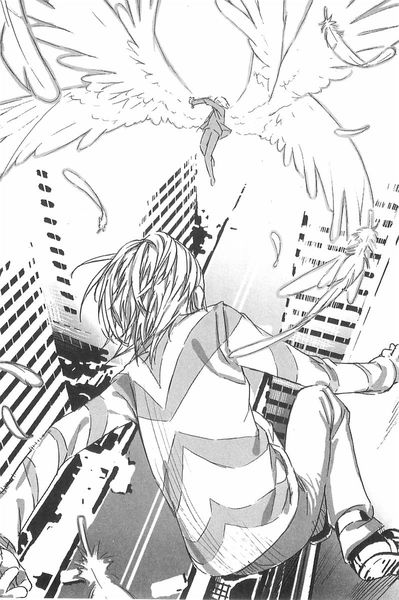

| [鎌池和馬] とある魔術の禁書目録15 | |
| 鎌池和馬 | |
| (2015) | |
|
とある魔術の禁書目録15
鎌池和馬
|
底本データ
一頁17行 一行42文字 段組１段
とある魔術の禁書目録15
アビニョン侵攻作戦で治安部隊が不在の学園都市。無法地帯となったそこでは、闇の組織らが暗躍していた。
──己のために動く者。
──闇を好み、殺しを楽しむ者。
──他者の希望を打ち砕こうとする者。
──大切な人のために立ち向かう者。
──上層部へ戦いを挑む者。
──反乱分子を仕留める者。
──暴走を暴力によって食い止める者。
科学が全てを支配するこの街で、生き残るのは......。
『グループ』の超能力者・一方通行が謎の組織『スクール』と邂逅したとき、物語は始まる──！
鎌池和馬
悪党大活躍の15巻です！ バトルが多いので、学園都市のいろんな所を舞台にできて楽しかったです。それでも、まだまだ一度も登場していない学区も結構あるんですよね。今度はどこにしようか悩んでいます。
イラスト:灰村キヨタカ
最近コーヒーを飲む量が右肩上がりです。コーヒーメーカーに飽き足らず、そろそろロースターでも買って自力で生豆を煎ってみようかなどと無茶を考え中。
とある魔術の禁書目録15
ｃ ｏ ｎ ｔ ｅ ｎ ｔ ｓ
序 章 愛しい貴方へ極上の鉛弾を Management.
第一章 誰にも聞こえぬ確かな号砲 Compass.
第二章 ゆっくりと動き出した者達 Hikoboshi_Ⅱ.
第三章 超能力を封じられた土地で Reformatory.
第四章 自嘲と誇りの紙一重の違い Enemy_Level5.
第五章 最強の黒い翼に打ち勝つ者 Drk_Matter.
終 章 生き残った者が得る戦利品 Nano_Size_Data.
序 章 愛しい貴方へ極上の鉛弾を Management.
死角というものがある。
例えば大手デパートの清掃室。
デパートの従業員は『外部の清掃業者が使っているんだろう』と思っているし、清掃業者は『あそこはデパートの従業員が使っているんだろう』と考えている。客が入るようなスペースではないから、内部に防犯カメラなども設置されず、誰の目にも留まらない。結果として、誰もが知っているのに誰も入った事のない、カギの置き場所も分からない部屋が出来上がる訳だ。
普段は施錠されっ放しの鉄のドア。
だが、今だけは違う。
土御門元春はあらかじめ受け取っていたカギを使い、デパートの隅にあるドアを開ける。そこは小酒落たバーのような内装だった。
手前には一〇人以上が座れる大きなソファに、その近くにはやたら小さなテーブルがある。向かって奥にはバーカウンターのようなものまであった。明らかに扉の外と中で世界が変わってしまっている。
「いらっしゃーい」
入ってきた土御門を見つけたのか、奥から陽気な男の声が飛んできた。
カウンターの側に立っているのば、土御門より背の低い、大学生ぐらいの男だった。軽薄そうな顔立ちに、衣服はどこかのブランドが出しているスーツ。ネクタイはしておらず、シャツばボタンが三つぐらい外してあって、胸板が見えていた。
首に携帯電話を四つも五つもぶら下げている男の通り名は、人材派遣。
彼はカウンターに肘をつきながら、こう言った。
「ああ、悪い悪い。軽そうに見せてんのは接客業だからでさ。話しかけやすい雰囲気ってのを作ってる訳。気に入らないならやめるけど、どうするよ？」
「いや、そのままで良い」
土御門が言うと、人材派遣はニヤリと笑った。
持っていたカギを土御門は投げ、人材派遣は片手で受け取る。とばいえ、この仕事が終われば人材派遣は家具を全て運び出し、他へ移るだろう。
「さてと、お探しの商品はどんなかな。今は開錠系の『センサー漬し』が結構粒ぞろいのお買い得だ。ヤバいのはマネーロンダリングの札束洗浄係。例の『〇九三〇事件』以降に新しい条例ができたから品薄になってるよ。あとは普通かな」
強盗や窃盗は複数の人間で行う事もある。
そうした場合は運転手、鍵開け、突入係、資金洗浄など役割分担をするものだが、中には『強盗をしたいけど人手が足りない』といった問題も出てくる。
人材派遣はそうした不足した人材を補充し、紹介料で稼いでいる人物だ。
「にしても、近頃はネットやメールが多いからさ。アンタみたいに直接訪ねてくるヤツは珍しいよ」
「まずかったか」
「いや。この程度じゃリスクにはならねえよ。そうだ。なんか飲んでいくかい？」
土御門はカウンターにいる人材派遣の奥にある棚に目をやり、そこに並んでいる分厚い缶を見て、わずかに眉をひそめた。
「シンナーを飲む趣味はないな」
「勘違いするな。そこにある溶剤は油性インクを消すためのもんだ。こういう商売をしてると必要なんだよ。アルコールならそっちの冷蔵庫の中だ。結構良いのが揃ってるよ」
「どちらにしても、遠慮しておこう」
土御門が断っても、人材派遣は特に顔色を変えなかった。
「緊張して酔ってる暇もねえか。ま、『仕事』の前なんてそんなもんだ。それじゃビジネスの統きと行こう。お求めの品は？」
「悪い。オレはそっちじゃないんだ」
「？」
怪訝そうな顔をする人材派遣、土御門はあっさりと言った。
「オレは客じゃない。捕まえる方だ」
入材派遣は一瞬だけ、ポカンとした表情になった。
しかし土御門がズボンのべルトから拳銃を抜くところを見ると、慌ててカウンターの陰へ身を隠す。
土御門は構わず引き金を引く。
ダンゴンガン！！と立て続けに銃声が響いた。カウンターの奥の棚にあったシンナーの缶に穴が空き、嫌な匂いがすぐさま充満していく。
（野郎......ッ!?）
入材派遣は身を隠したまま、カウンターの裏手に置いてあった防弾ジャケットやサブマシン
ガンに手を伸ばす。
銃器にマガジンを差し込み、スライドを引いて初弾を装填した所で、ふと土御門の方からの銃声がやんだ。人材派遺はカウンターの奥から顔だけ出して様子を窺おうとする。
（弾切れか？）
シンナーまみれになった人材派遣はそう思ったが、直後に違う答えが来た。
それはオイルライターを擦る音だ。
「ッ!?」
人材派遣の喉が干上がった。
何か言う前に、土御門は火の点いたオイルライターをカウンターの奥に投げてくる。
人材派遣に何かを考えている余裕はない。防弾ジャケットもサブマシンガンもかなぐり捨て、とにかくシンナーの充満しているカウンターの奥から、床へ跳ぶように遠ざかる。
オイルライターがシンナーの水溜まりに落ち、ボン!! と爆発的に炎が巻き上がった。
かろうじてその範囲外へ逃げた人材派遣は、丸越し状態の自分が拳銃を突きつけられている事に気づく。
彼は両手を上げて大声で言った。
「待てよ、待て待て! 分かった、分かったよ。抵抗はしねえから───」
土御門は構わず引き金を引いた。
パン!! という発砲音と共に、人材派遣は驚いたように自分の脇腹を見る。
そこに赤黒い穴が空いていた。
「テ、メ......。抵抗しねえって、言ってん......」
何か言いかけて、そのまま人材派遣は床に倒れた。
土御門は特に表情を変えず、とりあえず人材派遣が息をしている事だけを確かめると、携帯電話を取り出した。
登録されている番号へ掛けると、応答した相手に短く告げる。
「回収だ」
電話が何かを言う。
土御門は統けてこう答えた。
「これからこいつのアドレスを探って、色々と調べ物だ。下部組織に連絡しろ。いや、救急車じゃなくて護送車で良い。こっちは登録住所を元に情報を探すが、一方通行は───いない？」
チッ、と土御門は舌打ちして、
「そうか。アイツは今、あっちに行ってるんだったな。仕方がない、海原、お前が出ろ。バックアップは結標に交代だ。それじゃあな」
土御門は通話を切る。
土御門元春、一方通行、海原光貴、結標淡希。
彼ら四人を総称して『グループ』と呼ぶ。
社会の裏にいながら、表舞台を守るために活動している小組織だ。
第一章 誰にも聞こえぬ確かな号砲 Compass.
１
一〇月九日。
学園都市の独立記念日である今日は、その内部に限り祝日となる。
第七学区の病院も、朝からのんびりした雰囲気に包まれていた。カエル顔の医者は正面玄関から外に出て、柔らかい朝の陽射しを受けていた。
医者の傍らには、一〇歳ぐらいの小さな少女が立っている。
打ち止めと呼ばれる少女だ。
彼女は九月三〇日に木原数多率いる『猟犬部隊』に連れ去られ、『学習装置』という機材を使って脳内に特殊なデータを入力されていた。今まではそのデータの除去を行っていたのだが、その作業が終わったので退院する事になったのだ。
「せっかくの退院だというのに、誰も迎えに来ないとはね？」
医者は呆れたように言ったが、打ち止めは大して気にしていないようで、
「ミサカは一人でもタクシーに乗れるもん、ってミサカはミサカは胸を張って宣言してみる」
「ま、頭の中のウィルスも完璧に駆除できたし、もう心配はないんだけどね。タクシー代は黄泉川さんの貸しにしておくから、ひとまずまっすぐ彼女のマンションへ向かうんだよ？」
その時、ちょうど病院前のロータリーにタクシーがやってきた。
カエル顔の医者が手を上げてタクシーを止め、荷物を抱えている打ち止めを後部座席へ乗せる。
それを見守りながら、運転手は言った。
「お客さん、どちらまで？」
「第六学区の遊園地! ってミサカばミサ───」
「第七学区のマンション『ファミリーサイド』の二号棟。忘れずにね？」
打ち止めが言いかけた寝言を封じ、結局カエル顔の医者が面倒を見る羽目になった。
運転手は苦笑しながら、
「了解しました」
「詳しい住所を教える必要はあるかい？」
「いいえ。この街は学生寮ばかりでマンションは少ないですから。名前が分かればカーナビで検索もできますし」
カエル顔の医者が車内から首を引っ込めると、後部ドアが自動で閉まった。窓に両手をつけて外を眺めている打ち止めを乗せて、タクシーば丁寧な挙動で病院の敷地から出ていく。
タクシーが消えると、彼ば仕事揚である病院へ戻った。清潔な通路を歩いていき、簡単なソファとテーブルだけが置かれた談話スペースに入ると、壁際にあった自動販売機でコーヒーを買う。
自販機は紙コップを使う方式のものだ。四角い金属製のボックスの中に『コーヒー』という液体が入っているのではなく、あらかじめ焙煎された豆を機材がすり潰す所から自動で行われていく。そのため多少時間はかかるが、味と気分転換の効率はそこそこ良い。
ふう、と医者ば息を吐いて、
（さて、と。次ば妹達の方の調整を終わらせて、一刻も早くここから出してあげないと───）
そう考えたカエル顔の医者の思考が、唐突に途切れた。
ガキリ、と。
彼の背中に、何者かが拳銃を押し付けたからだ。
カエル顔の医者の動きが止まる。
自分の真後ろから聞こえる浅い呼吸を耳にし、しばらく考えてから、医者は言った。
「アビニョンからはもう帰って来たのかい？」
「チッ。どこからそンな情報を仕入れてきやがった」
声は聞き覚えのあるものだった。一方通行だ。
右手で現代的なデザインの杖をついている一方通行だが、ここが病院の建物内であるためか、特に目立っている様子はない。そして左手の拳銃も、彼自身の体を使って他人の目に触れないように調整がされている。
医者は両手を挙げたりはしない。
後ろにいる患者のために、そういう目立つ行動はしないで、ささやくように言う。
「......また、随分なご挨拶だね？」
「情報が欲しい。電極の設計図だ」
一方通行が言っているのは、彼の首にあるチョーカーの事だ。見た目はアクセサリだが、実は裏側には電極が仕込んであり、一方通行の脳波を別の電気信号に変換し、ミサカネットワークと呼ばれる特殊な電子通信網へ限走的に接続させる機能を持つ。
その電極を作った張本人であるカエル顔の医者は、表情を変えずに答えた。
「何で設計図が必要なんだい？ チョーカーの調子が悪いなら僕が直してあげようか？」
「イイから設計図を出せ」
「打ち止めが会いたがっていたよ。もう少し早く出て来てくれれば良かったのに」
「黙れ。オマエの知った事じゃねェだろ」
「そうでもないさ。患者が会いたがっていたからね。そいつを揃えるのが僕の仕事だ」
「チッ。......それが分かってるから、このタイミングまで待ってたンだよ。クソッたれが」
本当に忌々しそうに一方通行は言った。
カエル顔の医者は白衣のポケットに手を入れ、そこからシャーペンの芯のケースのようなものを取り出した。USBメモリだ。医者はそれを握ったまま、片手を後ろへ回す。
「用意がイイな」
「だから言っただろう？ 患者に必要なものを用意するのが僕の仕事だ」
医者は稼働を続ける自販機を眺めながら言った。
「とはいえ、そいつの中身を活用するのは難しいよ？ 僕は必要な機材は全部自分で作ってしまうからね？ 同じ電極を作るとなると、工作機械の作製から始めないといけない」
「......、」
一方通行はそれを受け取ると、カエル顔の医者の背中から静かに離れた。
カエル顔の医者は振り返る。
すでに、そこには誰もいなかった。ベクトル変換能力を使って、すぐ近くにある階段へ飛び込んだのか、影すらも見当たらない。
「......、」
医者はしばらく、誰もいない空間を眺めていた。
ピー、という電子音が聞こえる。カエル顔の医者は自販機の取り出し口からコーヒーを取り出すと、苦い液体を一ロ含んだ。
２
海原光貴は第七学区にあるマンションの一室にいた。
『ファミリーサイド』と呼ばれる集合住宅の二号棟だ。
家庭用を想定しているのか、４ＬＤＫとかなり広い作りだ。しかし内装を見れば分かる通り、ここで生活していたのは一人だけだろう。誰もいなくなった室内を眺めているだけでも、それが窺える。他の住人も似たような感じだろうか。
海原は携帯電話を使って土御門と話をしながら、調ぺ物をする。
「......とりあえず、『人材派遣』の部屋へ到着しました。今から捜索を始めます。情報を収めていそうなものは......パソコン、録画用のHDレコーダ、後はゲーム機なども記憶媒体を内蔵していそうですね」
『わずかでも可能性があるものなら、片っ端から回収しろ。炊飯器とか洗濯機のＡＩ設定用メモリだって、分解すりゃ細かい情報を保存しておけるからな』
面倒臭い事になりそうです、と海原は眩いた。
「それにしても、『人材派遣』はどんな『仕事』の手助けをしたんでしょうね？」
『それを今調べてる』
土御門はつまらなさそうに答えた。
『今から十数時間前に、「人材派遣」の手で、何らかの犯罪集団が組織されちまった。元々面子が足りない所を穴埋めする形でな。わざわざ金を払って外部から即戦力を手に入れた達中だ。近い内に必ず事件を起こす。そいつを調ぺて事前に止めるのがオレ達の仕事だ』
「わざわざ『グループ』が出張るほどの？」
『良いから手を動かせよ。愚痴りたくなるのは分かるが、「グループ」に回ってくる仕事なんざどれも同じだ。クソッたれ以外の何物でもない』
了解、と海原は答えた。
広い室内を歩き、パソコンや録画用のレコーダなどに、小さな付箋を張り付けていく。冷蔵庫や洗濯機などまで持ち運ぶつもりはない。とりあえず目印だけをつけておいて、後で『下部組織』にでも運ばせるのだ。
（まぁ、こんな所ですか）
と、あらかたチェックを終えた海原は、そこで気になるものを見つけた。
紙幣だ。
「......、」
腰ぐらいの高さの棚の上に、数枚の紙幣が置いてある。
それ白体に不自然さはないが、財布などとは切り離されているような印象を感じた。海原は少し部屋を調ぺて、クレジットカードや通帳などを見つけていく。
部屋の中にある物の配置は、その人物の生活サイクルが密接に関わってくる。しかし海原の見立てだと、この棚へ紙幣を置いておくのは不自然に思えた。財布から遠ざける事で、他の紙幣と混ざらないようにしている風にも受け取れるほどだ。
海原は改めて紙幣を眺め、それから裏返して、電話越しの土御門に言った。
「土御門さん。ＩＣチップの情報を読み取る装置はありますか？」
「何だって？」
「紙幣を五枚ほど発見しました。確か、学園都市の造幣局から発行されている日本円にはＩＣチップが付随されていましたよね。こいつも調べてみた方が良さそうです」
『分かった、用意させる。......こっちはめぼしい情報はなかったな。デパートの清掃室は切り上げて、オレもそっちに向か───』
土御門の声は、最後まで聞こえなかった。
ボッ!! と。
唐突に窓を突き破って飛んできたロケット弾が、部屋の真ん中で爆発したからだ。
バタバタバタ! という複数の足音が玄関の方から響いてきた。
濃いグレーの装甲服をまとった男達は、トラップの有無を警戒しながらも迅速に室内へ踏み込んでいく。数は五人。一様に覆面で顔を隠し、同じ装備で身を固める彼らに個性はない。
言葉は交わさず、指先の合図で意志の疎通を行い、彼らは二手に分かれて黒焦げになった室内のチェックを行っていく。壁から外れて床に落ちたエアコンをまたぎ、薄い内壁が崩れて広々となった元４ＬＤＫの中を。
白律消火機能が働かないどころか、一般的な火災報知機すらも作動していない。彼らが事前にセキュリティを切っていたのだ。
彼らは言葉を交わさないため、カチャカチャという小さな金属音だけが妙に響く。
銃器を構えて移動しているため、硬い装甲服とぶつかり合っているせいだ。
（まったく......）
海原光貴はそれらの様子を眺めてため息を吐く。彼はキッチンスペースの壁に背中を張り付け、爆破の衝撃で斜めになったドアの隙間から観察していた。
ロケット砲が窓を突き破ったのと同時に、海原はこの部屋へ飛び込んでいたのだ。
彼は懐から黒曜石でできたナイフを取り出しつつ、
（部屋ごと爆破して情報を潰そうとするとは。『人材派遣』の情報を手に入れられると困る人達が出迎えに来てくれたようです）
ここは三階。
音を立てないようゆっくり移動して、砕けた窓の側へ寄る。そこから見ただけでも。地上にはざっと一五人ほど黒ずくめの男達がいた。おそらく見えない所にも大勢いるだろう。完璧に囲まれてしまっている。
「......、」
彼の使う分解魔術『トラウィスカルパンテクウトリの槍』は、金星の光を反射させ、その光を浴びせた物体を片っ端から分解していく、という極めて強力なものだ。
しかしその反面、標的は一体ずつ設定していかなくてはならない。
つまり、『どんな強力な敵でも一撃で葬る』代わりに、『どんな弱い敵でも一人ずつ順番に攻撃しなくてはならない』のだ。
（向こうの装備は九ミリのサブマシンガンをメインに、同口径の軍用拳銃。この狭いスペースで乱射されれば。技術うんぬんとは関係なく蜂の巣になりますね）
そして何より、と海原は前置きして、
（まずいですね。こういう時に雑魚がいっぱい出てくるというのは、とてもまずい）
手段を選ばずに大勢の人間を一気に突っ込ませても、マンションの通路や扉などのスペースには限りがあるため、意味がない。渋滞を起こすように詰まってしまうのだ。
突入班はできるだけ少なくし、むしろマンションの周囲に大量の人員を割く事で、ターゲットが逃げる可能性を潰していく。仮に突入班が全滅した時は、次の突入班を再編成して突っ込ませるか、『とりあえず敵がロケット砲で死ななかった事は分かった』と判断し、今度はマンションごと爆破、倒壊させる。
（......手慣れていますね。仮にここを出し抜いたとしても、包囲綱を抜けられる訳ではない。まさに手詰まりですが......）
海原光貴ば黒曜石のナイフを握り直す。
いつの間にか、掌には汗がびっしょりとついていた。
（さて、どうしましよう？）
３
「第七学区で火災発生。都合五件の通報から確認。該当する建物の自律消火機能を含むセキュリティが起動していないため、至急消火活動に当たってください」
一般の通報から警備員や風紀委員に連絡を繋ぐための緊急通信センターで、オペレーターの女性はモニタに表示された情報を関係機関に伝達していく。
「加えて、消防隊の現場検証に立ち会うため、警備員による鑑識の出動も要請します。それから───」
オペレーターは通信ブースの壁に掛けてある火災時用のマニュアルシートを取ろうと、ほんの数秒だけモニタから目を離した。
その時、具体的な指示を待っている現場チームの方から、
『了解』
という声が聞こえ、そのまま通信が終了してしまった。
「......あれ？」
女性オペレーターは首を傾げる。
モニタ上では、すでに必要な伝達は全て完遂した事になっていた。
４
マンションの一室にロケット砲が撃ち込まれてから一五分後。
土御門元春と結標淡希は、『ファミリーナイド一二号棟の一室にいた。
消防隊や警備員はいない。建物の周囲には野次馬がちらほら見えたが、中に入ってくる者はいなかった。何しろ爆発だ。火災や倒壊に巻き込まれる危険を考慮してまでやるような事ではないだろう。
家庭用に作られたマンションだが、その部屋のほとんどが一人暮らしらしい。おまけに、マンションを利用するのは学生よりも教職員の方が圧倒的に多い。学園都市は『戦争』の準備で警傭員を駆り出し、そのしわ寄せで他の教職員まで教材作りなどを手伝わされているため、祝日でも家を空けているようだった。
「ここか」
元々は４ＬＤＫの高級マンションだったのだろうが、部屋の真ん中で爆発物でも吹き飛んだ
のか、家具も内壁も崩れて散らばっていた。おかげで今では部屋数が二つぐらいしかない。玄関のドアを入った所で、すでにバスルームが見えていた。
「丁寧に証拠を消しているわね。読心系の能力者を運れて来ても駄目かもしれないわ」
結標は黒ずんだ床を見ながら呟く。
そこへ遅れて一方通行が杖をついてやってきた。
「チッ。呼び出しがあったと思えば、また『上』からの残飯処理かよ」
土御門は一方通行を見ないで言う。
「そっちの用事は済んだのか？」
「うるせエよ」
一方通行は適当に一蹴して、周囲を見回した。
「ここか、海原の馬鹿が消えたって場所は」
「そうだ。一応『人材派遣』は生け捕りにして、下部組織の連中に護送車で運ばせているが、ヤツの口先だけの情報では信用度は低い。『情報は俺の頭の中だけだ』とか言って妙な駄々をこねられるのもアレだしな。裏付けのためのデータが欲しくて、海原をここへ回したんだが」
土御門はつまらなさそうな口調で、
「その途中で第三者から襲撃を受けたらしい。この状況、『海原個人が狙われた』のか『人材派遣の情報が狙われた』のかはまだ分からないが、見た目の印象じゃ後者だな。海原からの事前の報告じゃパソコンやHDレコーダなんかがあったって話だが、ものの見事に消えてるし。ＡＩ搭載の家電製品も片っ端から奪われてる」
「一応、家電の中でも残っているものもあるみたいだけどね」
結標が足で差しているのは、黒焦げになった電子レンジだ。床の上に直接転がっている。
「おそらくＡＩを搭載していない製品なんでしょうね。情報を追加入力できないタイプのものは、そのまま捨て置いてあるのよ」
部屋を調べてみると、他にも画面の砕けたテレビやアイロンなどもあった。しかし、やはりめぼしい物は片っ端から強奪されているらしい。
一方通行は綿の飛び出したベッドに腰かけた。
つまらなさそうに息を吐く。
「チッ、面倒臭エな。『人材派遣』のクソ野郎の情報は分かンねエ。海原がどォなったかも掴めねェ。ったく、テメェの仕事ぐらいばテメェで処分してほしいモンだけどな」
近くに転がっていた、壊れた電子レンジを軽く蹴飛ばす。
その拍子に合成樹脂製のドアが開き、中身が出てきた。
「......、あン？」
紙幣だ。
黒い煤で汚れた五枚ほどの紙幣が、何故か電子レンジの中に入っていたのだ。
「報告では、海原が気にしていたという話だけれど」
腰を屈めて紙幣を拾い上げた結標が、小さく笑ってこう言った。
「紙幣の中には偽造防止用のＩＣチップがあったはずだわ。何か書いてあるかもしれないわね。電子レンジの中に入れておけば、電波なんかをシャットアウトできる。仮に襲撃者側がそういうセンサーを持っていたとしても、これならごまかせたかもしれないわ」
「......あのクソ野郎が隠しておいたってのか？」
一方通行が尋ねた時、離れた所にいる土御門が『ん？』と声を上げた。
見ると、土御門の開けたクローゼットの中に、男の死体が詰め込まれていた。改めて確認してみると、男の右足のふくらはぎの辺りの皮膚がごっそりと剥ぎ取られている。
土御門はポツリと言った。
「梅原の仕業だな」
「足のそれは？ 野郎の趣味か」
その言葉に、結標は嫌そうな顔をした。彼女はかつて授業中の事故で足を負傷した事がある
のだ。その時のトラウマは今も消えていない。おかげで、能力を使う際はストレスを軽減させ
るため、低周波振動治療器を利用しなければならないほどだ。
土御門は首を横に振る。
「アイツは人間の皮膚を使って、一種の札を作る。お前達は魔術を知らないから理屈の説明は省くが......ようは、他人とすり替わる事ができるスキルを持ってんだ」
死体の足の傷を見ながら土御門は言う。
「海原の野郎は、こいつとそっくり入れ替わってる。今はここを襲撃したヤツらの中に混じって、機を窺っているんだろう」
つまり、と土御門は一拍置いて、
「あの変装野郎はまだ生きている。どこで笑っているかは知らないがな」
５
何やっているんだろう、と初春飾利は首を傾げていた。
前方では信号待ちっぽいタクシーが停まっていて、そこでは一〇歳ぐらいの女の子が運転手と口論になっている。......というより、女の子の方が一方的に噛みついているように見える。
近づくまでもなく、大きな声ば初春の耳まで届いていた。
「ここで降ろして降ろしてって言ってるのにどうしてミサカを放してくれないの!? ってミサカはミサカは腰に両手を当てほっぺたを膨らませて抗議してみる!!」
「いやでも、あのですね、目的地までの料金をすでにもらっている以上、途中下車は───」
「その言い訳の隙にミサカは逃亡を図ってみる!! ってミサカはミサカは高速で車を降りて路地裏に駆け込んでみたり!!」
小さな女の子は叫びながら、自転車も通れなさそうな細い路地へ入ってしまった。
まいったな、と頭を掻いている運転手に、初春は近づいて行った。
「ん？ おや、風紀委員の方ですか」
運転手は初春の腕章を見てそう言った。
風紀委員は学園都市の治安を守るための学生組織だ。その活動圏ば主に校内だが、一般の人にはあんまり区別はつかないらしい。
初春はキョトンとした顔で、
「ええと、何かトラブルですか。あの子、お金を払わずに出て行っちゃったとか」
「逆ですよ逆」
運転手は困り切った顔で、
「あの子の保護者のような方から事前に料金はいただいて、マンションまで送る事になっていたんですがね。ああして途中で降りちゃって、お釣りも返していませんし」
「はぁ。こういうのは乗り手の自由ですし、チップとして受け取っちゃって良いんじゃないですか？」
「タクシー料金は一二〇〇円。事前にお預かりした額は五〇〇〇円。チップで処理するには良心の痛む額ですよ」
なんて心の優しい人だろう、と初春は心の中だけで思った。
運転手は明らかに車の入って行けない路地に目をやり、
「......とはいえ、流石に車を降りて追って行くのもね」
「私が捜してきましょうか？」
「はいはい、そうしてもらえると助かります。ちょっと待ってくださいね」
運転手は車内の機材を使ってレシートを出力すると、それにお釣りを乗せて初春に手渡した。彼女が風紀委員の腕章をつけているので、特に金銭関係で警戒している様子はない。
「そいつを返してあげてください」
「分かりました」
初春はスカートのポケットにそれらを収めると、一応タクシーの運転手と連絡先を交換してから、狭い路地に向かって歩き出した。
陽の光の入らない、薄暗い空間に向かって声をかける。
「ええと、名前なんだっけ？ うーん、アホ毛ちゃーん!?」
「ミサカの識別名は打ち止めだもん!! ってミサカはミサ───はっ!?」
とりあえず返事が来たので、初春はそちらに歩いて少女を捕獲した。
６
黒い煙が上がっていた。
ガードレールに突っ込む形で、四角い護送車が停止している。ただし、前半分だけだ。車体
は強引に引き千切られていて、後ろ半分は道路の真ん中に転がっている。
警備員のものと同型だが、所属が連う。『グループ』の下部組織が使っている護送車だった。
土御門の命令で、とある重要参考人を秘密裏に運んでいたのだ。
「痛ぇ、くそ......」
その断面から出てきたのは、大学生ぐらいの男。人材派遣だ。手錠を掛けられた両手を揺すりながらアスファルトへ降り立った彼は、自分の腹を見て顔をしかめた。銃弾を撃ち込まれた所の傷が開き、乾き始めた赤黒い染みに重なるように、再び赤い液体が広がり出しているのだ。
それでも、彼は近くにいる少年を見つけると、柔和な笑みを浮かべる。
「すまないな。ヘマしちまった」
「いや、こちらこそ」
少年の顔には金属製のゴーグルがあった。いや、違う。目を覆うのではなく、土星の輪のように頭全体を覆っている。三六〇度にプラグが挿してあり、無数のケーブルが腰の機械に繋げてある。
その異様な出で立ちの少年に、人材派遣は両手を差し出して、
「悪いが、こいつも切ってくんないか。これじゃ手当てもできないんだけど、カギを捜すのは手間だ。早くここから立ち去った方が良いだろうしな」
分かった、と少年は言い、カードを通すように指をスッと移動さぜる。
その途端に、人材派遣の両手首が叩き潰された。
「ア、ああああああああああああああああああああああああああああああああああッ!?」
のたうち回る人材派遺は、激痛と驚きに満ちた目で少年を見上げていた。それを見た少年は、さらに人材派遣の急所を狙いながら、ろくに声色も変えないで簡単に告げた。
「残念だ」
７
『グループ』は薄情な組織だ。
居場所のヒントのない海原について、残る三人の結諭はひとまず『保留』だった。しかし、仮にヒントがあったとしても助けに行ったかどうかは分からない。自分の不始末ぐらいは自分で何とかしろ、というのが『グループ』の基本的な考え方なのだ。
なので、
「『グループ』の下部組織から連絡だ。人材派遣を乗せた護送車が襲撃されたらしい」
「皆殺しか？」
「いや。ご丁寧にターゲットの人材派遺以外は気絶で済ませてやがる。どっちにしても、あいつから直接話を聞く線はなくなっちまったな」
「誰がやったか、ヒントぐらい残されていないものかしら」
「だから、そいつがこの紙幣だろうな」
そんな訳で、ひとまずは五枚の紙幣だ。
マンション『ファミリーサイド』の二号棟から離れた『グループ』の三人は、ひとまず隠れ家の一つに戻って紙幣のＩＣチップに収められた電子情報を調べる事にした。
「にしても、隠れ家っつーのが地下街の空き店舖だとはなァ。希望を持った脱サラ組が覗きに来たらどうすンだよ」
「その時は出ていくさ。隠れ家などそこらじゅうにあるし、本来は彼らのための施設だからな」
土御門は適当に言って、紙幣を読み取るための機材を床に置いた。
ノートパソコンにケーブルで接続されているのは、
「......何よそれ？」
結標が呆れたように言うと、土御門は小さく笑う。
そこにあるのは、コンビニのレジの横にあるお財布ケータイ用のセンサーだった。
「だー......。面倒臭いから業者に頼んで読み取り機をそのまま持ってきた」
「別に何でも構わねェ」
一方通行はバイプ椅子に座り、拳銃の手入れをしながら言った。
「さっさと始めろ」
「了解」
土御門は簡単に言って、五枚の紙幣の中から一枚を選んで装置に通した。
表示されたのはどこの国の言葉でもない。乱雑な数字だ。土御門がさらに画面を操作すると。ようやく意味のありそうな文章に変換されていく。
「いきなりヒットしたな」
画面に表示された文字列を、土御門は眼で追い掛ける。
「......『人材派遣』の商品リストみたいだ。取り引きされたのはプロのスナイパーが一人。ついでにスナイパーの武器についても面倒を見ているらしい」
二枚目の紙幣を装置に通す。
「スナイパーの名前は砂皿級密。......偽名かどうかは不明。経歴や実力についても、書いてはあるが信用はできない。ただ、紹介料だけで七〇万って事は、結構な『目玉商品』なんだろう」
三枚目の紙幣を装置に通す。
「こっちはスナイパーの武器だな。用意したのは......MSR-001。磁力狙撃砲か」
土御門は苦い口調で言った。
「磁力ですって？」
「その名の通り、電磁石を使ってスチール製の弾丸を飛ばすスナイパーライフルだ。当然ながら学園都市製。レールガンよりも仕組みは簡単だな。弾丸の初速は秒速二九〇メートル。音速にやや届かない程度だ」 、
「......それって、意昧あるのかしら。普通の狙撃銃の方が性能良さそうに聞こえるけれど」
しかし土御門は笑ってこう言った。
「単純な威力ならな。ただ、火薬を使わないから反動がない。スナイパーライフルにありがちな『プレ』がないし、超精密で繊細な照準装置を取り付ける事もできる。火薬を使うものの場合、発射時の反動に耐えられるように、ある程度の強度が必要だからな。それに......」
「それに？」
「火薬を使わないから音がない。こっそりやるには最適って訳だ」
言いながら、土御門は四枚目の紙幣を装置に通す。
しかし画面にはエラー表示しか出なかった。
肝心のデータを読み取れない。
「チッ。ＩＣチップが熱か衝撃にやられたか......。断片的なヘッダを見る限り、こいつにスナイパーを雇った、具体的な取り引き相手が書かれていそうなんだが」
何度か装置を通したが、やはり紙幣の内容が表示される事はなかった。
土御門はひとまず諦め、最後の五枚目を装置に通す。
表示されたのはどこかの見取り図だった。
重要な物以外は省かれた、簡略的な地図。中央には赤い点が表示されていて、その周囲にある建物の側には数字が書き込まれていた。何階建てか、全長は何メートルか。そんな『上から見た地図』だけでは分からない情報だ。
それを見て、土御門は笑った。
「狙撃の計画書だな。人材派遣ってのはこんなもんまで取り扱ってんのか」
「ハッ。大した雑貨屋じゃねエか」
「場所は、第七学区コンサートホール前広場......」
結標は天井を見上げて、
「ちょうど、この上ね」
「コンサートホール前広場は、統括理事会の一人が講演をするために貸し切っている。おそらくそのＶＩＰが狙撃対象だろう。名前は親船最中。向こうがどういうつもりで頭をぶち抜こうとしているかは知らないが、どうやら達中は大それた計画を企てて親船を暗殺しようとしているらしい。こいつを止めりゃお仕事完了だな。......海原の方は、まぁ、あれだ。この仕事で一番『得点』の低かったヤツが罰ゲームで助けるって事にしとくか」
「はン。これから駆けつけてスナイパーと追いかけっこかよ？ そンな面倒臭ェ事やってねェで、つまンねェ講演の方を中止させりゃイイじゃねェかよ」
一方通行が本当に鬱陶しそうに言ったが、土御門は首を横に振った。
「それは無理だろうな」
「あァ？」
「簡単だ。講漬はもう始まっちまってんだよ」
８
一方通行と土御門元春の二人は地下街を出て、真上にあるコンサートホール前広場の近くへやってきた。
階段やエレベーターといったまっとうな移動方法ではなく、結標の能力である『座標移動』を使ったものだ。あの能力、便利は便利なのだが、結標本人の移動が難しいという欠点がある。なので、当の結標だけが隠れ家に残り、紙幣のＩＣチップの解析を続ける事となった。
祝日という事もあってか、広場には多くの学生がいた。統括理事会の野外講演など面白いものでもないはずなのに、ざっと見回しただけでも二、三〇〇人は集まっている。
一方通行の位置から、ＶＩＰの親船最中までの距離は一〇〇メートル前後。
広場の中央には文化祭に使うような簡単な舞台が作られていて、その壇上に初老の女性が立っている。その周囲には黒服の護衛が四人ほど控えていたが、
「やる気がねェな」
一方通行は一言で切り捨てた。
「お好きな内臓をぶち抜いてくださいって全身でシャウトしてやがる。あのＶＩＰ様、服の厚みを見りゃ防弾装備がねェの丸分かりじゃねェか」
「言うなよ。そのためにオレ達が働いているんだ」
「同じ統括理事会でも、潮岸の野郎は四六時中駆動鎧を着込ンでンのによ。襲撃が怖いンじゃなくて、備えてねェと不安になるらしい」
「それは極端すぎる例だな」
横で言う土御門の言葉に、一方通行はジロリと隣を見た。
壇上の親船最中を顎で差して尋ねる。
「オマエ、アレの盾になる気はあンのか？」
「どういう意味だ」
「俺にはねェっつってンだ。統括理事会だと。そンなモンはクソ野郎の集まりだ。わざわざ体ァ張って守るよォな対象かよ」
一方通行はトマス＝プラチナバーグという人物を知っている。親船と同じ統括理事会の一人だ。ろくに会話などした事もないが、家具のセンスを見るだけで、悪意もなく自然に他人を見下しているような人物なのはずぐに分かった。
「学園都市の上層部っていうのは、二種類ある」
土御門はコンサートホール前広場の人混みに紛れながら、小さな声で言った。
「真っ先に死ぬぺきクソ野郎と、真面目に働いているのにクソ野郎と同列視されている善人だ。大抵の場合、そういうヤツは世渡りが下手で貧乏くじばかり引かされるんだがな」
「......、」
一方通行は黙って土御門を睨みつけた。
わあ、という拍手や歓声が辺ウを包み込んでいる。
「親船最中は学園都市の子供達に選挙権を与えようと訴えているらしい。この街の住民の大半は未成年で、選挙権はないからな。オトナが上から決めた政策に文句を言えない。明日から消費税を三〇％に増税しますと言われても、反論する場が用意されてない。だからそいつを与えてやりたいんだと。ハハッ、分かりやすい『目の上のたんこぶ』だろう？」
土御門の口調は軽い。
「仮に子供達の選挙権が認められたら、『戦争』だって止められるかもな」
「馬鹿じゃねェのか、そンなにあっさり進むかよ。平和的だが現実的じゃねェな。暴力って言葉をまるで理解してねェ」
「人種や男女の壁も、最初はそうだった。そういう間題が解決したのは、特別な有力者が一人で全部片付けたっていうだけじゃない。もちろん多くの人間を導いたヤツの功績は大きいが、何より『自分には力がない』と勝手に思い込んでるヤツらの意識が変わって、大勢が動いたからこそ、歴史はきちんと変わったんだ」
土御門の言葉に、一方通行は改めて広場を見た。
休日にも拘らず、多くの子供達が集まっている広場を。
土御門は小さく笑ってこう言った。
「お前がどう思っているかは知らないが、オレは親船最中には守るだけの価値があると考えている。だから命を懸ける。ついて来いとは言わないが、止められる覚えもないな」
チッ、と一方通行は舌打ちした。
杖をついて、一歩先へ進みながら、
「面倒臭エ。さっさと狙撃手のクソ野郎を叩き潰すぞ」
９
一方通行と土御門が立っているのは親船最中のいる壇上から一〇〇メートルほど離れた場所だ。本来はもっと近寄るべきだろうが、人混みで身動きが取れなくなる可能性を考慮すると、それは良い策とは言目えない。
携帯電話のＧＰＳ地図を使って、位置情報を確かめる。
「狙撃可能地点はおよそ三二ヶ所。だが、壇上の舞台のバックにはステンレス製のボードがあるから、実際には後方一八〇度は死角になっちまってる。つまり」
「正面一八〇度に属する一五ヶ所だな。一つ一つ潰しちまえぱスナイパーを押さえられンだろォけどよ」
「......すでに狙撃態勢に入った砂皿緻密がのんびり待っているとは限らない」
言いながら、土御門は周囲を見回した。
彼が見ているのは、壇上で柔和な笑みを浮かべる親船や、その声を聞いて拍手をしている子供達ではない。広場から少し離れた所に、特殊車両が停まっているのを確認する。クレーン車のような台車の上に、巨大な扇風機に似た機材が取り付けられたものだ。
「一応、スナイパー除けに『妨害気流』を張ってあるみたいだな」
「あン?」
「狙撃は風の影響を受けやすいってのは知ってるだろ。あれはＶＩＰの周囲にわざと突風を発生させて、狙いを逸らさせる装置だ。坊そらく四台ぐらい使って、会場を取り囲むように風の渦を作ってんだろう。第三世代だから、乱数を利用してランダムな気流を生んでるはずだぞ」
土御門はそう言ったが、一方通行は別のものに気を取られていたらしい。
彼は顔を横に向け、混雑の端の方へ目をやると、いきなり、バッ！ と群衆の陰に隠れた。
土御門がそちらを見ると少し離れた場所で、一〇歳ぐらいの少女と頭にたくさんの花飾りをつけた女子中学生が、手を繋いで歩いている。
「だからミサカは迷子を捜しているの、ってミサカはミサカは行動指針を発表してみたり」
「はぁ、あの、ええと、迷子？」
「良く分かんないけどこの辺にいると思うの、ってミサカはミサカは予測を述べてみる。なんか頭の辺りがビビッとくるの、ってミサカはミサカは感覚的な補足情報も加えてみたり」
「はー......やっぱりとんでもないアホ毛ですねー」
これはアホ毛じゃないもん!! という叫び声を聞いて、一方通行は思わず額に手をやった。
「（......何でこの局面であのガキが出てくるンだ!! 神様って野郎はふざけてンのか!!）」
「（......ハハッ、人生なんてそんなもんだ）」
土御門は適当に言ったが。群衆の中にメイド服の少女が混ざっている事に気づくと、こちらも一緒に頭を抱える。
流れ弾が変な所へ飛ばないように気をつけようぜ、と珍しく二人は意見を一致させつつ、
「本命から狙いを外すための『妨害気流』があるってのが複雑だよな......」
「あの車体。側面には空気清浄車って書いてあるけどよ」
「別に聞違いじゃない。学校の職員室にある喫煙者用の空気清浄機と使っている理諭は同じだからな。ナイズは全く別物だが」
土御門は得意そうに言ったが、一方通行の目は冷めていた。
彼は言う。
「......そりゃ結構な話だが、ありゃ動いてねェぞ」
「はあ!?」
ギョッとした土御門が慌てて確認すると、確かに大型の台車に乗った巨大扇風機のファンは
ピタリと停止している。
「さっきまでは稼働していたはずだぞ......」
まさか重要なＶＩＰ警護で動作不良なのだろうか。
そう思った土御門の耳に、ベコンという妙な音が、周囲の雑音に紛れるように響いてきた。
金属製の鍋がへこむような音だ。
「───、」
一方通行と土御門は、同時に音のした方を見る。
別の場所に停車していた『妨害気流』の特殊車両があった。やはりそちらの巨大扇風機も作動していない。そして、扇風機を取り囲む筒状の外壁に、親指ほどの穴が空いていた。
「やりやがったな。───砂皿緻密だ」
一方通行が言った。
「野郎......。邪魔な『妨害気流』を漬してから、ガードの消えた親船を狙い撃ちしよォとしてやがる!!」
「くそっ!!」
土御門は舌打ちすると、人混みの中を突っ込んで親船へ近づこラとした。しかし人が多すぎるせいか、思ったようには進めないらしい。その間にもベコン、ベコン、と金属を打つような音が連続した。一方通行からでは見えないが、おそらく他の位置にある『妨害気流』の装置を片っ端から潰しているのだろう。
（チッ。磁力狙撃砲はなまじ火薬を使わねェから、装置が狙撃されてる事すら誰も気づいてねェってのか！）
もう人工的な突風のガードは存在しない。
土御門は親船最中に危機を伝えようとしているらしいが、間に合うとは思えない。
「ったく」
壇上の親船最中の演説は続く。周囲にいる護衛達も危機を知らずに突っ立っている。
このままではチェックメイトだ。
「面倒臭ェ!!」
10
スナイパー、砂皿緻密は磁力狙撃砲を構えていた。
彼がいるのはホテルの一室だ。チェックインはしておらず、電子ロックを勝手に解除して侵入した。窓ガラスはセキュリティを潰した上で四角く切り抜いてあり、そこから磁力狙撃砲の銃口を伸はしている。
磁力狙撃砲───と言うが、そのフォルムは既存の銃とは大きく異なり、人間の足首ぐらいの太さの金属筒に、鋼の箱をゴチャゴチャと取り付けたようなものだった。三脚に支えられたこの銃身が強力なソレノイドコイルになっている。
砂皿の傍らにはスーツケースがあった。一つは分解した磁力狙撃砲を収めておくためのもので、もう一つは磁力狙撃砲のための巨大バッテリーだ。
「......、」
距離はおよそ七〇〇メートル。
障害となる『妨害気流』の装置も全て破壊した。
遠く離れた壇上にいる親船最中は、スコープを通して見ると、抱き締められそうなほど間近に感じられる。
当たる。
砂皿緻密は自然にそう思い、そしてリラックスした様子で引き金を引いた。
その時だった。
ゴバッ!! と。
唐突に、コンナートホール前広場の一角が爆発し、火の手と黒い煙が上がってきた。
爆風の煽りを受けたターゲットが、思わず身を屈める。彼女のイレギュラーな動作のせいで、砂皿の弾丸は親船最中に当たらなかった。
「何だ......？」
あまりのタイミングの良さに、砂皿は眉をひそめた。そうこうしている間にも、親船の周りにいた護衛の大男達は、ターゲットを取り囲むようにしながら壇上を下りていく。
彼には仕事がある。
続けて引き金を引いたが、スチール製の弾丸は親船に寄り添う護衛の一人に着弾した。派手に体が薙ぎ倒されたが、出血がない所を見ると『盾』となるために防弾装備を施しているらしい。
護衛の配置が変更される。親船の体が、屈強な男達の陰へ完全に隠れてしまう。
「ひとまずは、潮時か」
長距離狙撃は繊細だ。仮に音速で進む弾丸を使って七〇〇メートルから狙撃を行った場合、弾が出てから標的に当たるまで、実に二秒近い時間がかかる。無警戒で立ち止まっている人物ならともかく、複数の護衛に守られながら現在進行形で逃げ続ける標的の急所を的確に撃ち抜くのは難しい。
砂皿緻密は少し考え、今回は素直に退く事にした。
「それにしても、何が爆発した」
スコープを使って確認してみると、黒煙をあげているのは『妨害気流』用の特殊軍両だった。砂皿の表情がますます怪訝なものになる。確かに機能を停止させるために銃弾を浴びせたが、爆発するような場所に当てたつもりはない。
「......、」
その時、砂皿はわずかに息を止めた。
炎上する特殊車両のすぐ近く。現場にいながらさりげなく風景に溶け込んでいる白い髪の人物が、こちらを真っ直ぐ見据えていた。杖をつき、炎と煙を背にして。
「なるほど」
砂皿はスコープから目を離すと、速やかに磁力狙撃砲の分解に入る。部品の一つ一つをスーツケースに収めながら、彼はポツリと呟いた。
「その顔は覚えておこう」
11
土御門元春がホテルの一室に踏み込むと、すでにそこには誰もいなかった。
ただ、窓の一角が不自然に四角く切り取られているだけだった。
「チッ」
土御門は携帯電話を取り出し、一方通行と連絡を取る。
「回収には失敗した。ただ、砂皿がここで逃げたって事は、続けて狙撃が行われる可能性は低いな。一応親船の講演は中止にさせて、警備態勢を組み直した上で移送させてくれ」
『こっちは結標から伝言だ』
電話の向こうで一方通行は言った。
『読み取れなくなっていた四枚目の紙幣のＩＣチップが読めたらしい。中身は予想通り、スナイパー、砂皿緻密を雇った達中の名簿だとさ』
「誰だそいつは？」
土御門が尋ねると、一方通行は鬱陶しそうな声で答える。
『───「スクール」』
「何だと？」
『俺達の「グループ」と同じ......学園都市の裏に潜ンでる組織だとよ』
行間 一
昼時のオープンカフェに、その男は佇んでいた。
客で埋め尽くされたテーブルには様々な料理が並んでいるが、その男のテーブルだけは何もない。大量のコピー用紙が乱雑に置いてあるだけで、コーヒーの一杯すら見当たらなかった。
男は羽織っている白衣のポケットに両手を突っ込んだまま、テーブルに広げられたコピー用
紙を眺めていた。何十枚という紙束に印刷されているのは、『書庫』にある、能力者達のＡＩＭ拡散力場のデータだ。
男の向かいの席に座っている赤いセーラー服の少女は、怪訝な目をしていた。
「それを見て何が分かるというの？」
「色々だ」
男は顔を上げずに答えた。
「魔術師である君は知らないかもしれないが、こいつには色んな情報が記されている。単に能力者から微弱に漏れるカというだけではない。この現実に対する無意識の干渉......その千差万別なカの種類や強さを調ぺる事で、能力者の心を探る事もできる」
「無意識の、千渉......？」
少女は実感が持てない感じで眩いた。
「ＡＩＭ拡散力場は解析を進めれば、その人物の持つ『自分だけの現実』の輪郭を浮き彫りにさせ、その人格や行動傾向を調査する上での資料となる。心理学のプロファイルなどより、よほど即物的で分かりやすいパラメータだと思うがね」
男の座っている椅子の傍らには、銀色の獣が控えている。
チタン合金と合成樹脂で作られた四足歩行の獣だ。基本フォルムはネコ科の肉食獣に近いが、象のように不自然に鼻が長い。金属製の獣は盲導犬ロボット用の歩行プログラムを導入しているため、驚くほど柔軟に入間社会へ溶け込んでいる。
その獣の口が開いた。
『博士』
合成とは思えない、抑揚に富んだ少年の声だった。
『「グループ」と「スクール」に動きがあったようです』
博士と呼はれた男はギョロリと眼球を動かして、機械製の獣を見る。
この会話機能はロボットのＡＩによるものではない。無線ネットワークを介して、別の場所にいる人物が話をしているだけだ。要は、電話を少し複雑にしたものと思えは良い。
「接触したか」
『いいえ。「グループ」側は捕捉に失敗した模様です。現状では「スクール」の影を掴み切れるかどうか』
ふむ、と博士は一度だけ息を吐くと、
「いずれにしても、他の連中も動き出すだろう」
彼らは学園都市統括理事長、アレイスターの直轄部隊。
善悪関係なく、あの『人間』の手足として動く。それだけを期待された小組織だ。
「元々、私達のような組織は複雑な行動理由を持っているが、様々な力によって上から押さえつけられ、制御されていた。ところが『〇九三〇』事件を契機に発生した暴動のために、駆動鎧の大半がアビニョンの後始末に駆り出されてしまった。あの部隊は『電話』の人間にとって使い勝手の良い手足だ。そいつを自由に使えないのだから、これは大きなチャンスというヤツだ」
博士はゆっくりとした調子で言う。
「そろそろ頃合い、ですかね」
ふと、赤いセーラー服の少女の真後ろからそんな声が聞こえた。
今まで誰もいなかったはずなのに、そこには何者かが立っている。全体的に大きく膨らんだダウンジャケットを羽織った少年だ。
まるで、何もない空間から直接出てきたような感じだった。
「そうだな」
獣の頭に手をやり、軽く撫でながら博士は気だるそうに言った。少年の出現に驚いている様子もない。向かいの席にいる少女はそんなやり取りを興味なさそうに眺めている。
少女は不審そうな表情で尋ねた。
「何故『連中』の動きが正確に分かる？ 上からの情報が間違っているかもしれないのに」
「それを可能とする枝術を、上層部は握っているという訳だ」
と、獣を撫でる博士の手が止まる。
博士が眺めているのは、このオープンカフエとは車道を挟んだ向かいの歩道だ。そこを、俗に言うメイド服と呼はれるものを着込んだ少女が通行していた。しかし博士が見ているのは少女ではない。メイド服を着た少女は、ドラム缶型の清掃用ロボットに正座していた。そのロボットが、実にスムーズに進んでいくのを眺めていたのだ。
博士は素直に頷いた。
彼は真剣に感心していた。
「そのアイディアは浮かはなかった」
『博士。妙な事を考えるのはやめてください』
第二章 ゆっくりと動き出した者達 Hikoboshi_Ⅱ.
１
部下の運転手が回してきたキャンビングカーの中に、一方通行、土御門元春、結標淡希の三人は乗り込んでいた。
時間は昼時。
ボルトで床に固定された小さなテーブルには、ファーストフード系の食ぺ物が並んでいた。
一方通行は辛口のフライドチキンを、土御門は巨大なハンバーガーを、それぞれ勝手に買ってきて食べている。昼飯一つにしても意気投合しない面子だった。
一方、地中海にある産地直送プランドの高級サラダを口にしていた結標淡希はそれらを眺めながら、
「......早死にするわね、貴方達」
「にゃー。緑黄色野莱だけってのもヘルシーすぎねーかにゃー。肉も野菜も適度に食ぺてこそ健康体を維持できるのですよ？ 肉も野菜も偏り過ぎは良くないぜい」
「ハッ。つか肉を食って死ぬってのは幸せじゃねェの？ 最期まで好きな事やって死ねるっつーンだからよ」
一方通行は親指についた油を舌で舐め取りながら、結標に言う。
「で、『スクール』って連中について何か分かったのかよ」
「『書庫』にアクセスしてはみたけど、名前以外は何も。機密レベルは私達と同じようね。『グループ』『スクール』それしか記載されていないわ」
ただ、と結標は言葉を切って、
「......調べてみると、他にもそれらしい組織名が複数出てきたわ」
「二つだけじゃないのか」
土御門はハンバーガーにかぶりつき、反対側から肉がはみ出るのを慌てて押さえる。
「『グループ』『スクール』『アイテム』『メンバー』『ブロック』......分かっているだけでも五つはあるわね。実態は不明だけれど、おそらく私達と同じ───少数の人員を寄せ集めて作られた非公式部隊って感じじゃないかしら」
結標は指折り数えながら、
「親船最中の狙撃を企てたのは『スクール』。なら、人材派遣のマンションを爆破したり、護送車を襲撃したのもこいつらなのかしら？ 海原光貴もそこに潜り込んでいるとか」
「さあな。ただ、『スクール』でスバイ活動をしているならサインぐらいは出してほしいもんだ。敵だと思ってうっかり潰してしまうかもしれないし」
一方通行は缶コーヒーに口をつけながら、土御門と結標の話を聞いていた。
......それにしても、その『スクール』とやらは、どうして親船最中を暗殺しようとしたのだろうか？
２
やりたい放題だな、と浜面仕上は思った。
今は昼時、ここは第七学区のファミレスだ。しかしテーブル席を陣取っている麦野沈利という女は外で買ってきたコンビニ弁当を正々堂々と食べている。端でビクビクしている小柄なウェイトレスが、あまりにも不憫だ。
「あれ？ 今日のシャケ弁と昨日のシャケ弁はなんか違う気がするけど。あれー？」
店内なのに、秋物らしい明るい色の半袖コートを着込んだこの女は、ストッキングに覆われた足を組み直しながら、窓際でそんな事を呟いては首を傾げている。変わんねえよ、と浜面は心の中だけで突っ込んだ。
同じテーブルに座っている達中はどいつもこいつも変人はかりだ。
「結局さ、サバの缶詰がキてる訳よ。カレーね、カレーが最高」
麦野の隣にいるフレンダという金髪碧眼の女子高生はそんな事を言って缶詰をいじり回していたが、缶切りが上手に使えないのか、何かビニールテープのようなものを缶詰にぐるりと貼り付けると、電気信管を取りつけて爆薬で焼き切った。本来はドアをこじ開けるためのツールだったと思う。
一方、フレンダの向かいに座っている絹旗最愛という、ふわふわしたニットのワンピースを着た、一二歳ぐらいの大人しそうな少女は、そうした変人達の行動を一切気に留めず（良識があるとか心が広いとかではなく、そういう種類の変入なのだ）、映画のパンフレットに目を通しながら、
「香港赤龍電影カンパニーが送るＣ級ウルトラ問題作......様々な意味で手に汗握りそうで、逆に超気になります。要チェック、と。滝壺さんはどう思いますか」
話を振られたのは、絹旗の隣にいる滝壺理后という脱力系の少女。彼女は食事に手を着けず、ソファ状の席にだらっと手足を投げ出したまま、どことも取れない所へ視線をさまよわせ、
「......南南西から信号がきてる......」
───彼女達は『アイテム』。
学園都市の非公式組織で、主な業務は統括理事会を含む『上層部』暴走の阻止。たった四人でこの街を、ひいては科学サイドを左右させる面子でもある。『グループ』や『スクール』などと同等の機密レベルで扱われる集団だ。
浜面仕上は『アイテム』の正規メンバーではない。
その下部組織の所属で、雑用や運転手などを任されている。
以前は路地裏の無能力者が作る武装組織『スキルアウト』のリーダーを一時的に任されていたのだが、そこでの作戦が失敗し、組織が壊滅的なダメージを被った事で、人の上に立つ生活は終止符を打たれた。今では学園都市の暗部で下働きをする毎日である。
（......にしても）
浜面には、ここに配属されてから常々悩んでいる事がある。
（女ばっかりの中に一人だけ男がいるってのは、何とも居心地が悪いな）
テーブルは六人掛けで、浜面は一番通路に近い所に座らされていた。彼にあてがわれた役目はドリンクバーを往復する係である。
「んでね」
一通リシャケ弁当を食べ終えた麦野沈利はそんな風に話を切り出した。
「昼前に統括理事会の一人、親船最中が狙撃されかけた事件があったよね。あれについて、そろそろこっちも動きたい訳なんだけど」
「つか、結局その情報、私は持ってないよ」
フレンダが簡単に言うと、麦野は『む？』と少し動きを止める。
そして半袖コートの女は浜面に目をやった。
「浜面。全員のケータイに事件の詳細を転送」
へいへい、と浜面は適当に答える。
指図される事に文句は言わない。それが今の彼の仕事なのだ。浜面は自分の携帯電話を取り出すと、そこに保存されていたデータを、麦野を除く残り三人にまとめて送信する。
「ふむふむ」
『アイテム』の全員が自分の携帯電話で情報を確認する。
すると、画面に出てきたのはネットで落としたエロ動画だった。
その瞬間、『アイテム』の四人はバシンと携帯電話を畳んだ。彼女達は軽蔑の眼差しと共に心の扉をガシャンと閉めると、しっかりと心の戸締りをし、さらには心の地下エレベーターを下って、心の核シェルターへの退灘を完了させた。
「違っ、待て!! やり直させろ！ これは何かの間違いなんだッッッ!!」
かつては一〇〇人以上のスキルアウトを束ねた不良のりーダー、浜面仕上は腹に力を込めて大声で弁解する。
しかし『アイテム』の四人は、
「浜面......」
「結局、浜面ってキモいんだけど」
「浜面的にはバニーさんが超ヒットだったんですか」
「大丈夫だよ、はまづら。私はそんなはまづらを応援してる」
温かい言葉を受けて小刻みに震える浜面は、今度こそ親船最中狙撃未遂事件の情報を全員に転送する。
すると、絹旗が呆れたような声を出した。
「ああ、『スクール』の違中が超計画していたあれですね。確か、あそこに所属していた暗殺用のスナイパーは三日ほど前にこちらで超始末したはずですけど」
「新しく雇ったんだろね。ま、つまりこっちの『警告』は無視されたって訳かな」
「緒局、あの時も『何で親船最中なのか』って事で論議してなかった？」
フレンダはサバの缶詰の中身をフォークで刺しながら言った。
「親船って統括理事会の一人だけど、結局役立たずじゃん。影響力ほとんどないし、殺すだけの価値がない。なのに......」
「『スクール』は、わざわざ失ったスナイパーを補充、私達の『警告』を無視してまで、親船の暗殺に取り掛かった」
滝壺がぼんやりした声でフレンダの言葉に続いた。
麦野は軽い調子で領く。
「親船最中には殺すだけの価値はない。そして目をつけられるリスクを負ってでも、『スクール』は予定を無理に合わせて狙撃を決行した。それは何故でしょ。───ハイ浜面君!」
言われた浜面はビクゥ!! と肩を震わせる。
（はぁ!? 何だその『今から面白い事言って』的な話の振り方は!? こっ、この局面で俺に注目するんじゃねえ!!）
「え、ええとだな!! ちょっと待て喉まで出かかってるからあと少しで分かるんだ!!」
と、勢いだけは良いのだが結局何も言えない浜面。
それに村して『アイテム』の四入は、
「いやー、浜面......」
「結局、そのうろたえ方がキモいんだって」
「キモいと言っても超種類があるんですけど、浜面のは最悪のキモさですね」
「大丈夫だよ、はまづら。私はそんなキモいと呼はれ続けるはまづらを応援してる」
失望したため息をつく少女達。無能力者の浜面は床に屈み込んで動かなくなった。
無視して麦野は三目った。
「ま、さっきも言ったけど、親船最中ってのは暗殺するだけの価値がない。それぐらい表裏が
ないんだよね。にも拘らず『スクール』は親船をターゲットに選んだ。これってさ。親船に価値がないからこそ、親船が選ばれたって事じゃないのかな」
「価値がないからこそ？ 超意味が分かりませんが」
「だからあれよ。『スクール』は誰でも良かったんじゃないかな。とにかく騒ぎを起こせれば構わないから、とりあえずできるだけ『死んでも影響の少なそーなＶＩＰ』......つまり『最も警備の手薄なＶＩＰ』が選ばれたって訳」
麦野は楽しそうな声で、
「他のＶＩＰ......まぁ統括理事会だけで考えても、ここ数日内に野外で講演をするような人間
は他にいなかった訳だし。潮岸の野郎なんて四六時中駆動鎧を着込んでいるんでしょ。そんな相手に狙撃が成功する訳ないんだから、『もっと狙いやすい相手』が選択されたんだって思うんだけど。正直、親船最中はかなり手薄だしねー」
「......緒局、かわいそうな親船」
「それが仮に正しいとするなら、『スクール』は何を求めてたのか。私はここで『ＶＩＰ用安全保障体制』を提唱したい」
麦野は半袖コートの上からでも分かる胸を張って言った。
「一二人の統括理事会を始めとして、学園都市にはいくつかＶＩＰ認定された人員・組織が存在する。こいつらは普通とは違う警備で守られてるし、命の危機に見舞われれは様々な部署から召集がかけられる。救急車の移動用に道路が封鎖されたり、手術のために各業界の大物が病院に集められたりってね」
つまり、と麦野は言葉を切って、
「ＶＩＰが暗殺されかけたら、どうなると思う？」
「治療先の施設を守るために、よその人員が呼ばれますし、特殊な研究者や機材なんかも、必要なものは片っ端からかき集められます。ははん、その混乱に乗じて『スクール』は何かをしでかそうって訳ですか」
つまんない手ですね、と絹旗は付け足す。
確かに『隙』を作るぐらいはできるが、決定力に欠ける方法だ。警備の厳重な第二三学区や『窓のないビル』などには大した効果はないだろう。元々『襲撃を仕掛けられる可能性のある施設』から、『その可能性を吊り上げる』程度の成果が限界だ。
「保険、かもしれないね。『スクール』の違中なら、本気になれは力技で大抵の施設は突破できるだろうし」
ただし、と麦野は付け加えて、
「連中はその保険を実行するために、潰されたスナイパーを急渡補充したり、親船最中の暗殺を企てたりした。かなり神経質に調整しているみたいだね」
「となると、結局親船は単なる『保険の一つ』で、『スクール』はこれから本命の『どこか』または『誰か』を襲う予定だと？」
「だね」
麦野はあっさり頷いた。
ここで浜面が恐る恐る声をかける。
「......あれ？ って事は、親船暗殺は『未遂』で終わって正解なのか？」
「どっちでも良いんじゃない？ 仮に親船が死んでいたとしても、今度は心肺蘇生だ検視だ解剖だってので多くの人員が割かれるんだし。曲がりなりにも統括理事会、一二人しかいない最高のＶＩＰだからね。学園都市の得体の知れない技術を総動員して対処するはずだよ」
うえ、と浜面は嫌そうな顔をした。
麦野は構わず、しれっとした表情で続ける。
「親船最中暗殺未遂によって、警備が手薄になった施設をチェックする。......いや、これだけじゃ甘いかな。親船暗殺が『成功』した場合の変更点もチェック。『スクール』はスナイパーの狙撃が『成功』しても『失敗』しても、そのどちらでも動ける状況を作っていたはずだから、その両方のパターンで合致する『警備の手薄になる施設』があるはず。おそらく次に『スクール』が現れるのはそこって訳」
勢い良く席を立つ麦野沈利。
彼女は浜面の方など見もしないで、口だけで伝達する。
「浜面、車を探して来てちょうだい。すぐに出る事になりそだし」
その偉そうな物言いに、浜面はイラッとしたが、反論などできるはずがない。
ここではただの下働きなのだ。
「くそっ。俺は一〇〇人以上のスキルアウトを束ねていた組織のリーダーなんだぞ......」
それでも、思わず独り言のように言葉が漏れたが、
「そうね。だから何？」
（......ちくしょう）
今度は心の中だけで吐き捨て、浜面は先にファミレスを出て車を探す事にした。
３
海原光貴は第一〇学区の雑居ビルにいた。
空きテナントの多いビルで、ここもそんな貰い手のいない部屋の一つだった。窓のすぐ向こうに学園都市唯一の少年院があるのも関係しているかもしれない。
狭い部屋には武装した男達が十数人と───それらとは一線を画したボスクラスの面子が四人ほど佇んでいる。下手に放置されたビジネスデスクの上には、彼らが持ち込んだ銃器やノートパソコン、変装用の小道具、ハンドクリームなどが乱雑に置かれている。
（......しかし、参りましたね）
今現在の彼は、『海原光貴』ではない。
襲撃看の一人を撃退し、その人物の顔を新たに『借りている』状態なのだが、
（あんなに弱いのが、組織の中枢を担っていたとは......）
適当に雑魚の一人に変装して、頃合いを見計らってパシリでも買って出て、集団の輪からこっそり外れ、そのまま逃走してしまおう......そんな風に考えていたのだが、どうやら海原が倒してしまったのは組織の中でもボスクラスの人物だったらしい。
こうなると、こっそり輪から外れるのは難しい。何をやっても目立つ、というか、どこへ移動しても組織の輪の方が自分を囲むように、一緒に移動してきてしまうのだ。
そんなこんなで、タイミングを失ったまま第七学区から第一〇学区まで移動してしまった海原なのだが......。
「どうした、山手」
ふと横から声をかけられた。
そちらには長身の女性が立っている。細身ではあるが、全身を硬い筋肉で覆われた女性だ。引き締まっている、というより、もはや彫刻のように見える。一目で裏稼業の人間と分かるが、話を聞くとどうも表向きは警備員としての顔もあるらしく、本部の中に潜り込んでいるようだ。
そんな事を考えながら、海原は筋肉質の女性が放った言葉について思い返す。
山手。
それが今の自分の名前らしい。
「何でもねえよ」
「しっかりしろよ。君の力が、計画の成否を、握っているんだから」
彼女の話し方は一言二言を丁寧に区切るものだった。優しく話しかけているようにも聞こえるし、あるいは上から見下されているようにも感じられる。
「『スクール』の連中が動き出しちまったな」
熊のような大男がそんな事を言った。
「ヤツらに人材派遣の情報を送ったのはこっちだが......チッ。もう少しアクションを遅くしてくれりゃあ良かったものを」
「結局、マンションを襲って、情報を潰したのも、無意味だったわ」
その近くで呟いたのは、海原の隣にいる筋肉質の女性だった。
「『スクール』の行動によって、学園都市全域の、警戒レベルが、上がったはず。私達の行動にも、影響が出なけれは、良いんだけど」
「やっぱり楽には進まねえな。学園都市を出し抜くっつーのは難しい。ま、だからと言ってここでやめる訳にもいかねえんだが」
（......、）
女の言葉を聞きながら、海原は情報を整理する。
───どうやら、この組織は『ブロック』と呼はれるものらしい。
───この組織は『グループ』と同等の機密と権限を持っているらしい。
───彼らは彼らで何かを企てているようだが、同日、別の組織である『スクール』が先に動いてしまったため、そのとばっちりを受けてしまったらしい。
───その影響を可能な限り修正するため、先ほど『ブロック』は『スクール』の尻拭いという名の爆破を行った。海原が巻き込まれたのはそのためだった。
（そして）
───『ブロック』は『スクール』による影響を諦め、現状のまま『計画』を実行に移そうとしているらしい。
（『スクール』に『ブロック』と。まったく、色々とややこしい事になりそうです......）
と、筋肉質の女性が熊のような大男に向かってこう言った。
「向こうの方は、大丈夫なの」
「......ああ、例の『電話相手』か。問題ねえよ。手足として動かしてる駆動鎧の連中はアビニョンの後始末で身動きが取れねえんだしな。今なら『電話相手』ができる事もたかが知れてる。あいつも難儀だよなあ。普段は上から命令を飛ばしちゃあいるが、いざ俺達が暴走を始めりゃあ責任取らされて処刑されるんじゃあねえのか。『猟犬部隊』の方も、『〇九三〇』事件でリーダーの木原数多ごと壊滅しちまってるから邪魔にゃあならねえし」
どうやらこの組織にも『グループ』と同じ指示役がいるらしい、と海原は思う。しかし『電話の声』は一人なのか複数なのか、複数の人間が一つの組織に指示を出しているのか、一人に一組織の担当があるのか、見た目は複数でも実は機械音声を使っているだけなのか、その辺りは不明だ。
（ま、個人にしても複数にしても、それほど大きな組織ではないでしょう。それにしては、妙に小回りが利いている気がしますし）
『電話の声』については後回しだ。海原は『ブロック』の会話に集中し、彼らの組織構造図などへと思考内容を変更していく。
（少なくとも、現状は学園都市上層部の意向を受けて動いている訳ではないようですが。駆動鎧がいない内に、一体何をやろうとしているんだか）
海原はチラリと横に目をやった。『ブロック』の下部組織の男達がいる。彼らは明らかな反逆行為に手を貸している訳だが......。
（いや、それに気づいている人間は何人いるか）
仮に上層部が『緊急事態だ。地点Ａに集合しろ』と命令を出した所で、その情報が嘘である、という事も裏世界では珍しくない。常に影の思惑が錯綜するこの世界では、『命令』を表面通りに受け取る者などいない。結局、最後の最後では自分の見てきたものを信じて行動するしかない。嘘かもしれない情報と、とりあえず背を向けれは確実に銃殺される『ブロック』。どちらを信じるかと言われれば後者しかない。それが生き抜くための術というものだ。
（ま、天罰ですかね。日頃から部下を騙し続けているから、いざという時に情報の信憑性が下がってしまうんです）
「ようし」
熊のような大男は、何かを吹っ切るように声を出した。
「これ以上の遅延は認められない。俺達もそろそろ始めるとするか。何が『ブロック』だ。このまま一生ヤツらの下働きで終わるつもりはねえからな」
彼はそう言ったが、即座に動く事はなく、ぐるりと周囲を見回した。
海原は質間する。
「どうしたんだ」
「いいや、その前にいつもの『安全確認』をやっておきたい」
熊のような大男はそう言うと、大きな両手をパンパンと叩いた。すると、その合図に合わせて陰気な少女がゆったりとした動作で前へ出てくる。
「鉄綱。......お前の『意見解析』を借りるぞ。念のため、裏切り者がいないか確かめてくれ」
「了解した。私の価値は、人の心を読む事しかないから」
（......ッ!?）
海原光貴は驚きが表情に出るかと思った。
彼は何気ない仕草でビジネスデスクの上に置かれていたハンドクリームのボトルを取るふりをしながら、軽く周囲を見回す。『プロック』の四人（海原含む）と下部組織の人間が十数人。ここでバレるのはまずい。
「おっと。一応伝えておくが、『読み取り』を拒んだ時点で裏切り者って事にする。俺は不透明なのは好きじゃないからな」
大男がそう宣言した後、鉄網と呼はれた少女は『ブロック』の同僚一人一人と握手をしていく。彼女の口から、機械のような声だけが無機質に放たれる。
「佐久辰彦。年齢二八歳、『ブロック』のリーダー。学園都市の外部協力機関との連携の監視を主任務とする」
熊のような大男の次は、筋肉質の女性だ。
「手塩恵未。年齢二五歳。『ブロック』の正規要員。警備員としての......、───ッ!?」
ビクッ、と鉄網の表情が歪んだ。一瞬、場が殺気立つが、当の手塩は特に慌てずに、
「......そう熱心に、読まなくても、いい。あの子に両親がいない理由や、声を出せなくなった原因など、覗いて楽しい過去では、ないだろうしね」
軽く頭を振った鉄網は、今痩は海原の方へ目を向けた。
ここで海原は持っていたハンドクリームのボトルを滑らせてしまった。
「......ッ、すまねえ」
ボトルは下部組織の一人の方へ転がった。海原が手を伸はそうとすると、下部組織の青年が近づいてきて、ボトルを渡してくれた。
「ついでだ。先にやっとけよ」
海原が促す。ちょうど青年が鉄網の前へ出る構図になったため、順番に割り込む形で彼はそのまま鉄綱に手を差し出す。さっさと『チェック』を終わらせたいらしい。
二人が握手した時だった。
「───がァあああああああああああああああああッ!?」
青年と鉄綱の手が、いきなり赤い炎を噴いた。ボン！ という爆発音と共に血が飛び散る。何本もの指が飛んだ。鉄網は右手を押さえたが、痛みと出血に耐えられず、そのまま床に倒れて動かなくなる。
青年の方は慌てて応急処置キットに手を伸はそうとしたが、熊のような大男がそれを遮った。
「今、何をしやがった？」
「知らない。俺だって分かるか！」
「何をしたかって聞いているんだ!!」
「俺だって被害者だ!!」
佐久はそれ以上何も言わなかった。ホルスターから拳銃を抜くと。青年の眉間へ銃口を押し付けて、そのまま引き金を引く。
「待、おれは何も......ッ!?」
下部組織の青年は呆然としていたが......発砲音が炸裂した。
バンバンガン!! という轟音と共に、血まみれになった青年が床に転がる。
熊のような佐久は真っ赤になった死体を軽く睨みつけてから、
「......ま、始める前に見つかって良かったわな。ったく、どんな手を使ったんだか」
「どうする。統けるか？」
海原が質問すると、佐久は首を横に振った。壊れた鉄網が元に戻らないようだ。
「補充している暇はねえからな。『確認装置』は後で用意する」
彼は鉄網に興味はないようで、そのまま下部組織の人間に死体の処分を指示していく。
（......、）
海原は床の上で動かない青年の死体をチラリと見た。
あの青年は鉄網と握手する寸前、ハンドクリームのボトルを海原に手渡していた。その時、青年の手には海原の掌にあるクリームがぺっとりとこびりついていたのだ。そしてクリームの中には、少量の液化爆薬も混ぜてあった。
海原はハンドクリームを掌に馴染ませていく。今度は液化爆薬を取り除くための薬品を混ぜたものだ。
（敵とはいえ......いや、今は考えている余裕はありませんね）
海原が表情には出さずにそう思っていると、気を取り直したように佐久は言った。
「さて、と。それじゃあ改めて───動くとするか」
彼の前にあるのは、一台のノートパソコンだ。
４
ビーッ!! という警告の電子音がキャンピングカーに響き渡った。
『グルーブ』の各々はバラバラに昼食を食べ終え、今後の調査の方針などを話し合っていたのだが。それは即座に断ち切られた。
車内スビーカーから、オペレーターを兼ねた運転手の慌てた声が飛んでくる。
『きっ、緊急です！ 今。データをそちらへ送ります!!」
一方通行達は音源のスピーカーの方へ目をやる。
運転席と後部の居住区を隔てる壁に設置されたスクリーンに学園都市の地図が表示される。
「第五学区・ウィルス保管センターだと？」
「学園都市製のコンピュータウィルスを解析してワクチンソフトを作る施設だな。......そいつがクラッキングを受けているらしい」
連統的に表示される文字列を目で追いながら、土御門が言う。
事件を知っても、彼らは警備員に通報したり協力を仰ぐ、という考えを持たない。一般人に解決できるレベルの仕事は『グループ』に回されてこないし、彼らが全ての案件を解決できるというのなら、そもそも『グループ』は生み出されていない。
一方通行は面倒臭そうな調子で、
「にしても、俺達が動かなくちゃならねェのかよ。さっき『グループ』と似たような組織はいくつかあるっつってたろ。そいつらに任せちまえよ」
「部署が違うんだろう。連中が必ず動く保証はないし、その上、複数ある組織の一つは学園都市を裏切っている可能性が高い。ここはオレ達が行くしかないな」
土御門はさらに言った。
「そのウィルス保管センターだが......施設には未解析のウィルスの他に、学園都市の研究機関が意図的に作り上げた実験用ウィルスも多数存在する。こいつが外に流れれは......まぁ、パニックに陥るな」
「その『外』はどこまでの『外』かしら？」
結標が意味ありげに笑みを作る。
学園都市の『中』と「外』では科学技術に、二、三〇年分の隔たりがあり、それはウィルスに関しても同様だ。学園都市の機械にとっては型遅れのウィルスであっても、『外』の機械からすれは完全に未知の脅威となる。まして、学園都市でもワクチンソフトの開発が遅れているような最新式のウィルスが『外』に漏れれば......。
「確か、学園都市のセキュリティってのは『外から中へ』よりも『中から外へ』を優先的にガードするって話だったよなァ。なら、そのための設備があるはずだ」
「......外部接続ターミナルか」
学園都市は一般的なインターネットからは切り離されており、学園都市独白のネットワークを形成している。インターネットへ繋がる外部ラインは、全て一度『外部接続ターミナル』という施設を通してから接続する事になっている。
「ターミナルって、東西南北に四つあったわよね」
その時、ザザッ、という音が車内スピーカーから聞こえてきた。オペレーターを兼ねる運転手の切羽詰まった声が飛んでくる。
『外部接続ターミナルの緊急遮断を開始。第三学区・北部ターミナル遮断、第一二学区・東部ターミナル遮断、第二学区・南部ターミナル遮断、......ッ!? 第一三学区・西部ターミナルが応答しません！ 遮断確認できず!!』
「ハハッ！ まァた分かりやすい構図だな!!」
一方通行はその報告を受けて大笑いした。
土御門も不敵に笑って。
「十中八九オレ達を誘ってるだろうな。どこの誰だか知らないが、スクラップになりたいらしい」
キャンピングカーは間題の第一二学区に向かって発進する。
運転手の不安そうな声が車内スピーカーを通して伝わってくる。
『お、親船最中さんの暗殺未遂の方はどうしましよう？』
「今は後回しだ」
「というか、これも『スクール』がやっているのかもしれないのだけれどね」
『ええと......海原さんの方は？』
「ハナから助ける気はねェよ」
５
浜面仕上は、路地裏でピーピー鳴る電子音にうろたえていた。
音源は麦野沈利のポケットにある携帯端末だ。
「おい、それ放っておいて良いのか？」
「良いって良いって。私らがやらなくたって別の誰かが対処してるよ」
とは言ったものの、端末はその後もピリピリピリピリ音を出し続けた。あまりのしつこさに麦野はブルブルと震えると、勢い良く端末を搦み取って噛みつくように大声を出す。
「やっかましいなクソ馬鹿!! 応答する気がない事ぐらい分かんないの!?」
『こいつときたら！ こっちだって連絡したくて連絡してる訳じゃないんだっつーの!!』
特にスピーカーフォンではないのだが、傍で聞いている浜面の耳にもばっちり届く大音量だった。声の主は女性のもので、いつも『アイテム』に指示を出してくる謎の人物だ。
『第五学区のウィルス保管センターで緊急事態が発生してるから、アンタらも出動して問題を解決しなさい！」
「えー」
『えーじゃないわよこいつときたらーっ！ ったく駆動鎧の連中はアビニョンの後始未とか「左方のテッラ」とかいうヤツの死体の捜索とかで忙しいんだからさ。そっちもきちんと動きなさいよね!!』
「私ら今忙しいから後にしてくんない?」
麦野はものすごく嫌そうな声で言ったが、電話の相手は『こいつときたらーっ！』と叫ぶと、
『言っておくけど、アンタら『アイテム」の仕事は学園都市内の不穏分子の削除・抹消なんだっつの。ちゃんと仕事しろーっ！』
「そんな事言われてもねー」
『それとアンタ、この前「スクール」の正規スナイパーをぶっ殺したっつったよね？ だから親船最中の狙撃はないっつったよね？ こいつときたら！ じゃー何でこんな事になってんのよーっ!! あれでもう終わったと思ったから「危険度は下がった」って報告したのに......。ホント怒られんのこっちなんだからしっかりしてよねーっ!!』
オーダーを開違えたウェイトレスを叱るような口調だった。
『ちくしょう、やってくれちゃって......。ウィルス保管センターは他の部署に頼んでおくから、とにかく狙撃未遂に関して報告書ちょうだい。せめてそっちは大至急ね』
「悪いそれ無理だわ」
『何よそれどーなってんのよーっ!?』
「何故ならこれからその『スクール』のクソ野郎どもを皆殺しにするからです」
ぎゃあぎゃあ言っていた女性の声がピタリと止まった。
『ええと、追加で良い？ 最低でも一人に一〇発は鉛弾をブチ込んであげて？』
「......あのー、つかぬ事をお聞きしますが、管理者のお前は止めるべき場面ですよ？」
『騒ぐな下っ端。「スクール」の連中は前から嫌いだったのよ。この私の頭を悩ませるものは全て地球から消えてしまえは良いのだーっ!!』
がははははーっ!! と巨大な武将みたいな笑い声と共に通話が切れる。
ホントにあれが組織のまとめ役で良いのか、という表情で麦野は携帯端末をポケットに戻すと、軽くあちこち見回した。
「ところで浜面。本当にアシは手に入るの？」
「軽く流しやがった......。ま、その辺は何とかするけどよ」
と言いながら、浜面は路上駐車してある乗用車に近づいた。携帯電話の下部コネクタにファイバースコープ装置を取り付け、鍵穴にそうめんより細い光ケープルを通してピンの配置を調ぺていく。浜面は携帯電話の画面に表示される鍵穴内部の情報を元に、数本の針金を使ってあっさりとドアのロックを外してしまった。
浜面は運転席に乗り込むと、ハンドル下にあるエンジンキーの鍵穴を調ぺる。
「はー、便利なスキルだね」
本当に感心している声で、助手席に乗り込む麦野。
後部座席にも、絹旗、フレンダ、滝壺の三人が入ってきた。その辺のタクシーと同じファミ
リー用の4４ドアだが、五入乗ると流石に窮屈に感じてしまう。
「行き先は？」
「第一八学区・霧ヶ丘女学院。近くに素粒子工学研究所があるの。親船の騒ぎに乗って私設警備の人間が緊急召集されたり機材が運はれたりって混乱があったのはあそこだけ。それに合わせてガードもかなり手薄になってる。分かりやすい計画犯罪だよね」
「一ヶ所だけって、随分と簡単な構図だな」
「失札、言い忘れた。数ある中で有益なポイントは一ヶ所でしたって話」
そーかい、と浜面は適当に返して、
「それにしても、素粒子工学？ 仮にそこが本当にターゲットだったとして、『スクール』は何を狙っているんだ」
「さあね。親船最中の命よりは重要な用件なんじゃない？ という訳で、クソ野郎どもの尻拭いツアーにしゅっぱーつ」
ふうん、と言いながら、あっさりエンジンを始動させる浜面。
ふと後部座席から滝壺が声をかけた。
「はまづら。免許持ってたの？」
「必要なのはカードじゃない。技術だ」
遣当に答えて、浜面はオートマ車を滑らかに発進させた。
６
一方通行達を乗せるキャンビングカーが第七学区を突き進む。
土御門は時計を気にしながら、
「......第一三学区に入るまでざっと一〇分って所か」
西部ターミナルの遮断ができないという話だったが、それなら現場へ行って大容量ケーブルを直接的に切断してしまえは、とりあえずアクセスを封鎖する事はできる。予算の関係上お堅い役人はそういう解決策を嫌うが、もはやそんな事を言っていられる事態ではない。
しかしそこで、またもや警告の電子音が鳴り響いた。
土御門が応じるように大声で言う。
「今度は何だ!?」
『第二三学区でもクラッキングを確認！ 航空宇宙工学研究所付属の衛星管制センターが電子攻撃を受けています!!」
衛星だと？ と一方通行は眉をひそめる。
学園都市が打ち上げたものといえは、気象衛星という建前のスパイ衛星だ。これを使って学園都市や周辺地鐡を逐一監視しているのだが、
「ますます面白くなってきたじゃねェか。確か衛星ひこぼしⅡ号にゃ地上攻撃用大口径レーザーが搭載されていたはずだよなァ」
「まずいわね。ウィルス保管センターへのクラッキングも継続中なんでしょう？」
「対策チームは右往左往しているだろうな。いつもの実力を出させないための囮って訳だが、ウィルス保管センターの方を放っておいて良いという事にもならない。囮だったとしても、被害の程度が変わる訳ではないからな」
「これも『スクール』だと思う？」
「さあな。別の組織かもしれない」
『どっ、どうしますか？ 我々はどちらへ向かいましょう!!』
「ハハッ、そンなモン決まってンだろ」
言いながら、一方通行はキャンビングカーの側面ドアを足の裏で蹴りつけた。
すでに電極のスイッチを入れていたのか、ベクトル変換された力の束は、金属製のドアを容赦なく道路へ弾き飛ばす。
土御門は思わず叫んだ。
「一方通行!!」
「クソ野郎どもの囮に付き合わされンのは性に合わねェ。俺は第二三学区へ行く。衛星通信用の大規模地上アンテナをぶち壊しゃクラッキングも止まるだろ。その間、オマエ達は雑用でもこなしてンだな」
言うだけ言うと、一方通行はためらう事なく車から飛び降りた。
不自然な軌道を描いて跳んだ一方通行は、中央分離帯を越えて反対車線を走るオープンカーの助手席にズドンと収まる。普通の人閥なら相対速度の関係で叩き潰されそうなものだが、あらゆるベクトルを味方につけた彼なら何の問題もない。
むしろ、うろたえたのはオープンカーの運転手の方だ。
「わっわっ!? な、なに。何だ？」
「ガソリン代と入件費は払ってやる」
ガチリという小さな音が聞こえた。
頬に何か押し付けられている感覚があるのだが、運転手は首を動かせない。しかしルームミラーには、何やら拳銃らしき黒っぽい金属が見える。
「第二三学区だ。よそ見はするなよ」
７
暇だ。
浜面仕上は路上駐車した盗難車の運転席で、のんびりとそう思っていた。
ここは第一八学区・霧ヶ丘女学院の近くだ。一〇〇メートルほど先には素粒子工学研究所の四角い建物があり、そちらでは研究所を強襲する『スクール』とその迎撃を行う『アイテム』、二つの組織が激闘を繰り広げているはずだった。
そちらヘ目をやりながら、浜面は思わず呻き声を漏らしていた。
「うわスゲェな......建物が半分ぐらい崩れてやがるし、なんかビーム砲みたいなのまで飛んでるぞ。麦野沈利だっけか。相変わらず超能力全開って感じだな」
もくもくという灰色の粉塵と共に傾いていく鉄筋コンクリートの建物。その地響きのような振動が、浜面の乗っている盗難車まで届いてくる。
（超能力、ね）
かつての武装無能力者集団りーダー、駒場利徳は本当にアレと戦って勝てると信じていたんだろうか。
そのリーダーを失った今のスキルアウトは、まだ戦おうと思っているんだろうか。
「......チッ」
浜面はつまらなさそうにハンドルを軽く叩く。
どのみち、そのスキルアウトから逃げて能力者の軍門に下った今の自分に、何かを語るだけの資格はない。
苛立った彼は、運転席のドアを開けて外へ出た。
『アイテム』のためにいつでも発進できる準備をしておく事、そして駐車禁止の取り締まりが強化された事を考えると、車から降りるのはあまり得策ではない。しかし、浜面はどうしても気分を変えたかった。
今日は祝日なので霧ヶ丘女学院の近くには人が少ない。そして路上駐車したまま放って置かれているスポーツカーが三台ぐらい縦列駐車してあった。
そこで浜面の目が点になる。
（おおおおッ!? ブースタの八九年モデルがあるじゃねえかー！ ４ドアの帝王って呼ばれてるヤツだぞ!! い、いや、あんま目立つ車を無理に盗んでもリスクが高くなるだけなんだが......いいやちくしょう帰りはブースタだ!!）
と、セレプの心を揺さぶる名車の低いエグゾーストを想像し、微妙に鼻息を荒げながらポケットから開錠用のツールを取り出す浜面。そんな感じでグレードの高い、違いの分かる大人なスポーツカーに近づいた時だった。
「浜面ぁ!!」
「はひぃ!?」
突然真後ろから飛んできた女性の大声に、浜面は慌ててツールをポケットにしまい直して振り返る。
緑色のジャージを着た女教師がいた。
ジャージを着ていてもスタイルの良さが分かる......というか、何でジャージなのか意味不明だ押し倒すぞコラと叫びたくなるほどの美人だが、浜面にとって重要なのはそちらではない。
こいつはスキルアウトの天敵、警備員だ。
名前は確か黄泉川愛穂。
「あれー？ お前どうしたじゃんよ。確か断崖大学データベースセンターの件で補導されたって聞いてたんだけど。結局、お前じゃなかったの？ それなら良かった良かった」
何やら気さくに話しかけてくるが、別に仲良しでも何でもなく、この好意は一方的なものだ。......そもそも、過去一四回も夜の街で自分を捕まえて留置湯にぶち込んだ女に好感など持てるはずがない。
「何でテメェがここにいるんだクソババァ」
「そんなの、アレ見りゃ分かるじゃんか」
言いながら黄泉川が親指で示しているのは、件の素粒子工学研究所だ。
浜面は思わず額に手を当てた。
『アイテム』の下部組織が色々と隠蔽しているのだろうが、流石に現在進行形で半壊している研究所を完壁に隠しおおせる事はできなかったらしい。
と、黄泉川は両手を腰に当て、にこにこと微笑みながら、
「で、先生はいつでもお前の更生を願っているじゃんけど」
「は？ あァ、お前ナニ言って───」
「何で車のカギ穴を覗き込むみたいな中腰じゃんよ。まさかと思うが、こんな所で私に手錠を使わせるつもりじゃないじゃんな？」
ギクゥ!! と浜面の肩が大きく動いた。
ここでパクられる訳にはいかないので、首をプンプンと横に振りつつ、
「ちっ、違うんだ！ 赤ちゃんが!! 車内に赤ちゃんが取り残されて!!」
なにっ!? と黄泉川が慌てて近づいてきて、ぺたっと車のガラスに両手を押し付けて中を覗き込もうとする。
途端に鑑動する警報装置。
ピリピリピリピリーッ!! というけたたましい音に黄泉川があたふたとし、浜面が口笛を吹いて他人のふりをしていると、今まさに崩壊しつつある素粒子工学研究所の方から一台のステーションワゴンが猛スピードで走ってきた。
浜面達の横をステーションワゴンが通り過ぎると、今度は研究所から麦野沈利が走ってきた。その片手は同じ『アイテム』のメンバー、天然系の滝壺理后の首根っこを掴んでいる。
彼女達は先ほどまで浜面が乗っていた４ドアの後部座席に飛び込みつつ、
「浜面!! 下手なナンパしてないでこっち来い！ あのステーションワゴンを追うの、早く!!」
「ナンパじゃねえよふざけんな!!」
浜面は適当に叫び返して車に引き返した。本当はブースタの八九年モデルが惜しいのだが、まさか黄泉川の前で堂々と盗難する訳にもいかない。
運転席に乗ってエンジンを鳴らすと、ようやく黄泉川が声を張り上げた。
「ちょっと待った浜面!! その車はどうしたじゃんよ!?」
「見りゃ分かんだろ免許取ったんだよ!!」
超適当に嘘をつくと。一刻も早く黄泉川の前から消えるために必要以上にアクセルを踏みつける。急発進にエンジンとタイヤが不気味な悲鳴を発し、ジャージ女教師を残してファミリーカーが爆走した。
と、発進してから浜面は気づく。
「お、おい。絹旗とフレンダの二人はどうしたんだよ!?」
「あいつらはあれぐらいじゃ死なない。今はあのステーションワゴンが先!!」
苛立った声で麦野が答えた。
彼女の半袖コートの端は黒く焦げていて、頬は殴られたように腫れていた。ルームミラーでそれを確認しながら、浜面は研究所で起きた事を想像する。
「何でこんな事になってんだよ、お前。第四位のくせに」
「向こうにも超能力者がいたの。垣根帝督、第二位のクソッたれがね」
ふてくされたように麦野は答えた。
「でもこっちもやられっ放しじゃない。『スクール』のメンバーを一人潰してきたし。ま、あの中じゃ大したカはなさそうだったけどね」
戦利品なのか、ゴツい機械製のヘッドギアを軽く振った。土星の輪のように三六〇度ぐるりと頭を覆うもので、無数のプラグらしきものがある。そこから伸びるコードは、雑草を刈り取るように途中で千切れていた。何に使う装置かは知らないが、べっとりと血がついているのが怖い。
「で、あのステーションワゴンを追ってどうするんだ？」
「乗ってるヤツを叩き潰して積み荷は回収」
「積み荷って？」
「『ピンセット』。超微粒物体千渉用吸着式マニピュレータだね」
「......説明する気ねえだろ」
「とにかくそいつが『スクール』の目的だったんだっつの!! 分からなくてもステーションワゴンは追えんでしよ!! っつかこの車で追い着けるんだうね!?」
「大丈夫」
言ったのは、浜面ではなく滝壺だった。
彼女は後部座席で、だらっと手足を投げ出しつつ、
「私の『能力追跡』は、一度記録したＡＩＭ拡散力場の持ち主を徹底的に追い続ける。たとえ彼らが太陽系の外へ出たって私はいつでも検索・捕捉できる」
「だとさ」
浜面は適当に言葉を引き継いで、
「優秀なナビがいてくれりゃ見逃す事はねえさ。それより、あの車の動きを封じた後はどうするん───」
浜面の言葉が途切れる。
すぐ横の道から、いきなり大型のクレーン車が飛び出してきたからだ。
「ッ!?」
ハンドル操作をする余裕もなかった。
浜面達の乗る４ドアの腹に、怪物のよラなサイズのクレーン車が思い切り激突した。グシャア!! という凄まじい音が脳に響く。センサーが反応してハンドルのエアバッグが作動したが、横からの衝撃なのであんまり意味があるとは思えなかった。
まっすぐに走っていたはずの浜面の車が、クレーン車に押されるように真横へ進む。
そのままガードレールを突き破り、歩道に乗り上げ、ビルの壁に激突した。
黄色いクレーン車とコンクリートの壁に挟まれ、４ドアは完壁に動けなくなった。
周囲への騒ぎや被害は考慮せず。
どうやっても浜面達をここで殺す気だ。
「......痛っ......」
「くそ......。『スクール』ね。どうしてもあのステーションワゴンを逃がしたいらしい。私らの足止めに出てきたんだ!!」
麦野が噛みつくように言うと、クレーン車は一〇メートルほど後退する。保護ガラスに覆われた運転席には、一四歳ぐらいの少女が座っていた。小柄で華奢な体つきにも拘らず、まるでホステスみたいな背中の開いた丈の短いドレスを着込んでいる。
もう一度ぶつける気か、と浜面は痛む体で思ったが、そうではなかった。
少女が何かレバーを操作すると、クレーンのアームが伸びた。その先端に取り付けられているのは、荷物を吊り上げるための金属製フックではない。
建物を壊すための、直径数メートルものサイズの巨大鉄球だ。
「ちくしょう!!」
麦野が叫び、後部ドアを開けようとしたが、車体が歪んでいるせいか開く様子はない。
浜面はレバーを動かして助手席を倒しながら、
「フロントガラスから出るんだ!! 早く!!」
浜面は細かい亀裂の入った前面のフロントガラスを叩き割り、ボンネットの上へ飛び出す。麦野と滝壺が倒した助手席の上を通って前の席へと回ってくる。
その時、振り子のように鉄球が放たれた。
ゴォッ!! という捻る音と共に巨大な塊が向かってくる。先に麦野がフロントガラスからボンネットへ脱出し、浜面は慌てて滝壺の手を掴んで引っ張り出したが、そこへ思い切り鉄球が車の横へ突っ込んだ。
轟音が炸裂する。
ボンネット上にいた三人が横からの衝撃で地面に振り落とされる。顔を上げようとした浜面の後頭部を麦野が掴んだ。彼が地面に伏せる格好になった時、一拍遅れて乗用車が炎を撒き散らして爆発した。全員生きているのが不思議なぐらいの状況だ。
ゴゥン、というクレーン車の不気味なエンジン音が響く。
爆発音を聞いて集まり始めた野次馬など、お構いなしの反応だった。
麦野沈利は舌打ちして、
「三手に分かれよう」
「戦わないのかよ、超能力者」
「私の目的はあのステーションワゴンと積み荷の『ピンセット』。雑魚に構って時間稼ぎに付き合うつもりはないからね。......あのクレーン女のチカラは鬱陶しいし」
言うなり、麦野は車道を横断して細い道に入った。
取り残された滝壺は別の方向へ走る。
浜面もビルとビルの間の路地へ突っ込み、そのままがむしゃらに走る。しかし、彼の背後から湿った足音が聞こえてきた。
（ヤバいそオイ、俺を追ってきやがった!!）
走る浜面の喉が干上がる。クレーン車に乗っていたのは小柄な少女だったが、あの『アイテム』の四人と互角以上に戦った『スクール』の一人だ。どんな極悪な能力を持っているか分かったものではない。何しろ、超能力者の麦野が『鬱陶しい』と表現するぐらいなのだから。
さらに逃げ続け、浜面はビル横に設置された金属製の非常階段を駆け上がり、適当な階で建物に入る。
どうやら学生寮らしい。
直線的な通路を駆け抜けると、背後でガチャリと扉の開く音が聞こえた。
（追い着かれた......ッ!?）
浜面は反射的に振り返る。
自分が入ってきたドアから、やはり小柄な少女がやってきた。派手なドレスを着た少女の手にはレディース用の、やたらグリップの小さい拳銃が握られている。
（死ぬ!?）
浜面は掌を壁に叩きつけた。
手近にあるボタンを押すと、鋼鉄でできた暴走能力用のシャッターがギロチンのように下りてきた。少女の目がわずかに見開き、素早く拳銃を構えて浜面に向かって発砲する。
パンパン!! という高い音が連続した。
思わず目を瞑った浜面だが、改めて目を開けてみると、鋼鉄のシャッターに穴は空いていない。壁のボタン近くにあるモニタを見ると、少女は舌打ちして自分の拳銃に目を落としている。
どうやら相手の火力では、このシャッターは破れないらしい。
（......つまり何をやろうが、あの女はこの壁を越えられない訳だ）
全身を安署が包む。
そこで浜面は世界で一番人を馬鹿にした表情を作ると、両手を上に挙げ、友右に尻を振りながら『いっひいっひいっひいっひ!!」と叫んだ。
「───、」
同じく向こう側のモニタを見ていたドレスの少女は拳銃を太股に仕舞うと、今度は後ろへ手を回す。
腰の辺りから取り出されたのは、コーヒーの缶ぐらいの太い銃身を持った拳銃。
というか、四〇ミリの小型グレネード砲だ。
「や、やべえ。───これ絶対死んだんじゃね!?」
浜面が慌てて通路の奥へ走ろうとしたが、少女は容赦なくグレネードの引き金を引く。
シャッターが爆発し、こちら側に膨らんで吹き飛び、浜面は破片の煽りを受けて五メートル以上ノーバウンドで通路を飛んだ。
「ぐ、がああっ!?」
転がった浜面は何とか起き上がり、壁に手をつきながらよろよろと通路の奥へ走る。
その先はテラスになっていて、つまり行き止まりだった。
どうやらこちら側の通路には階段やエレベーターはないようだ。
手すりの向こうは、およそ三階分の高さ。
しかし背後には正体不明の『スクール』の少女。
どちらを選ぶかなど聞くまでもなかった。
（もちろん三階ダイブに即決定!! あんなあからさまに強そうなのに立ち向かうぐらいなら気合と根性で飛んだ方が一〇〇倍マシだ！ 小物には小物の生きる道があるのでっす!!）
「ハハッ!! 負け犬上等オおおおおおおおおおおおおォォう!!」
走りながら大声で笑い、手すりに足を乗せてそのまま三階から飛ぶ浜面。
彼は飛ぶ前に下を見ていなかった。
追っ手の事を考えるといちいち確認している余裕もなかったし、何より一度確かめたら怖くなって飛び降りられなくなると思ったからだ。
しかし三階という高さは馬鹿にならない。
（くそっ、なんか下にクッションになるものは───ッ!!）
と、空中で浜面が初めて地面へ目をやると、そこには乳母車を押す幸せそうな若奥様が。
青空を舞ラ浜面仕上の脳が全力でノーと叫んだ。
「ぐオオおおおおおおおおおおおおッッッ!?」
手足をわたわた振って距離を稼ごうとするエアウォーク浜面。その甲斐あってか、彼の大柄な体は乳母車の横一五センチの位置に着地した。
ビキィィィン!! と踵から足首にかけて鋭い痛みが走る。
若奥様はお上品にロへ片手を当てて驚き、乳母車の赤ちゃんは泣く事も忘れて目をまん丸に見開いている。
若奥様は言った。
「え、ええと......どちらさまでしょう？」
「空から落ちてくる系のヒロインです。ここは危ない、早くお逃げなさいお嬢さん」
浜面はさわやかな笑みと共に適当な事を言って、すぐ近くにある路地へ飛び込んでいく。
８
「チッ!!」
派手なドレスを着た一四歳ぐらいの少女はグレネード砲と拳銃をそれぞれ仕舞うと、テラスの手すりに両手を当てて、三階下の路上へ目をやった。
今まで追っていたはずの、馬鹿そうな面構えをしたターゲットはどこにもいない。
乳母車と若奥様がいるぐらいだ。
少女は携帯電話を取り出すと、『スクール』の仲間へ連絡を取る。
「標的を見失ったわ。近くにいるのは幼な妻とベビーカーだけ。......ターゲットの男が幼な妻またはベビーカーに偽装しているという可能性はあると思う？」
ばーか死ね、という言葉が返ってきたので。少女は携帯電話の通話を切って懐へ戻す。
（雑魚だと思って油断してた。最初から能力を使っていれは良かったな......）
もう一度忌々しそうに路上へ目をやると、彼女は諦めたようにそこから背を向けて、学生寮のエレベーターを探し始めた。
９
一方通行を乗せたオープンカーは第二三学区へ向かっていく。
彼は隣の運転席でビクビクしている若い男を横目で見ながら、ポケットから携帯電話を取り出す。
少し考え、警備員への通報ナンバーである三ケタの番号をブッシュした。
電話に耳を当てると、出たのは警備員の通信センターのオペレーターではない。別の人間───『グループ』に上から指示を出している『電話の男』が割り込んだのだ。
『何のつもりですか』
「あそこに電話を掛けりゃ、割り込まざるを得ないと思っただけだ。操られンのが嫌なら、テメェの言動を改める事だな」
一方通行は遣当に言う。
「っつっても、今回はそのタガが外れちまってるけどな。『スクール』だ何だでそっちも忙しいみてェじゃねェか。どォやら、電話でお話しするだけじゃ人間は操り切れねエらしいな。今まで俺達に口出ししてこなかったのも、そンな暇がねェほど切羽詰まってるからか？」
『本当にそう思いますか？』
「取り繕ってるつもりか、みっともねェ」
一方通行と『電話の声』はわずかな間、黙っていた。
やがて、一方通行は本題に入る。
「乗っ取られかけている衛星......特に「ひごぽしⅡ号』のデータを出せ。あれに搭載されている軍用レーザーの出力は？」
『おや、そんな事で良いんですか。もっと核心的な質問をしてもよろしいのですが』
「命を預けられるほど、オマエの言葉は信用しちゃいねェからな」
これは手厳しい、とゆったりした男の声が返り、
『クラックを受けているひごぽしⅡ号に搭載されているのは、厳密には白色光波を利用した光学爆撃兵器です。それと、あの段階では軍用ではなく実験用ですね。対象を四〇〇〇度程度の高温で焼くものですが、白色光波は紫外線同様に細胞核を破壊するカも有しますので、急速なガン化を促す事にもなります』
ナメたオモチャだ、と一方通行は思ったが口には出さない。
「......照射範囲は？」
『最小で半径五メートル、最大では半径三キロほどです。連射性能は大した事はありません。一時間に一発撃てるかどうか、という所ですよ。それと、大気圏によって白色光波はランダムに屈折しますから、精度の方も若干の誤差があります』
実験用の域を出ませんからね、と電話の男は軽い調子で言った。
一方通行はそれ以上何も言わず、黙って通話を切った。
携帯電話を眺め、もう片方の手で拳銃を運転手に突きつけつつ、オープンカーの助手席で一方通行は考える。
（半径三キロを焼き払うだと。ヤツら、一体何をするつもりだ......？）
と、携帯電話の着信音が鳴った。
またあの電話の男か、と思ったのだが、相手は違った。
『一方通行さん......で、合っていますよね。海原です』
声を殺している、というか、マイクに手を当てているような聞き取りにくい声だった。
『今は変装中なので、「この声」で話しているだけで危険なんです。ですから、手短に行きたいと思います』
「なンだ。『スクール』の連中の目を盗ンでコソコソ内緒話か? 悪りィが助けに来いってンなら聞かねェよ。今は衛星へのクラッキングを止める必要があるからな。オマエが『スクール』を止めるっつーなら聞いてやっても良いが」
『「スクール」じゃないんです』
「あ？」
「今、自分がいるのは、そして衛星へのクラッキングを仕掛けているのは、「スクール」ではなく「ブロック」です」
「......、」
海原が言うには、『スクール』の他に、『ブロック』という組織もこの日に合わせて犯罪計画を練っていたらしい。
「面倒臭ェ。じゃあ『スクール』が起こした親船最中の狙撃はどォなってンだ」
『自分に当たらないでください。......というか、狙撃？』
海原は怪訝な声を出したが、とりあえず話の軌道を戻していく。
『事前にウィルス保管センターや外部接続ターミナルへの「攻撃」が行われていますから、学園都市のネット対策チームも右往左往しているでしょう。現状だと......あと二〇分程度でクラッキングが完了し、「ひごぽしⅡ号」は「ブロック」の手に落ちてしまいます』
くそったれが、と一方通行は吐き捨てる。
「......何で第二三学区は衛星の管制を一時凍結させねェンだよ」
『理由は色々あるんでしょうけど、おそらく通常のマニュアルに従って一時凍結させようとすると、それだけで一時間以上は必要でしょうね』
宇宙関連は扱う金のケタが違うだろうし、一時的でも衛星とのリンクを断つと膨大な損害を受けるのは分かるが、クラッキングが判明した時点で回線を切断してしまえば良いものを、と彼は苛立ち混じりに考える。
「その『ブロック』の連中は『ひごぽしⅡ号』で何をしよォとしている」
『おそらく予想してはいると思いますが......衛星に搭載されている光学兵器です』
「取り引きか」
『いいえ。直接的な攻撃でしよう』
一方通行は舌打ちする。
「ターゲットは」
『......第一三学区ですよ』
第一三学区？ と一方通行は眉をひそめた。
あそこには今、外部接続ターミナルの関係で土御門や結標が向かっているはずだ。
（あるいは、『グループ』を潰すために......？）
少し考えたが、それはないと思った。衛星を乗っ取るという大規模な行動の割に、確実性に欠ける。事件が起きたからといって、必ず『グループ』がその対処を行うとは限らないのだ。
「あンな所を狙ったって、外部接統ターミナル以外にロクな施設はなかっただろォが。幼稚園やら小学校ばかりが集まってるだけだぞ」
『ですから、それが狙いなんです』
海原は説明するのも嫌だという感じで、忌々しそうに低い声で答える。
『第一三学区は学園都市でも最も幼稚園や小学校が集中している学区です。そこを攻撃すれば最年少の住入の大半が虐殺される。するとどうなるか。......ぶっちゃけた話、そんな所へ自分の子供を預けたいと思う親がいると思いますか？』
「......、」
『学園都市はあくまでも学生の街です。どれだけの住人がいても、いつかは卒業していきます。新入生がいなくなってしまえは、都市の人口は減るばかりで、最後には機能もできなくなるでしょう』
「......一〇年単位で、この街をゆっくりと殺していくつもりか」
実際には学園都市は様々な科学技術を掌握しているため、財政面ではそれほど簡単には倒れないだろう。しかし、それにしても『子供のいなくなった学園都市』はその存在意義を奪われるにも等しい事に変わりはない。
一方通行は少し考え、
「オマエの方からそれを止められるか」
『それができれは相談していません』
「第一三学区の住人を避難させる手は？」
『パニックを起こした子供達が学区のあちこちで将棋倒しを起こす危険があります。しかも今日は祝日ですよ。寮に残っている子供達は教師の手でまとめられるかもしれませんが、第一三学区で遊んでいる方まで管理しきれているとは思えません』
「役立たずが。結局、俺が衛星通信用の地上アンテナをぶち壊すしかなさそォだな」
『お願いします。こちらは引き統き情轍を収集して、可能な限りそちらへお伝えしたいと思います』
言って、海原は通話を切った。
一方通行は携帯電話をポケットに仕舞うと、オープンカーの進行方向へ目をやる。
（あと二〇分程度で『ひごぽしⅡ号』が乗っ取られる、か）
オープンカーが第二三学区に到着するのは扮よそ一〇分後。
のんびりやっている暇はなさそうだ。
「急げよ。こっちも予定が詰まってる」
もう一度、分かりやすく銃口を押し付けると、律儀にオーブンカーの速度が上がった。
10
初春飾利と打ち止めは第七学区の駅のホームにいた。打ち止めは電車は初めてらしく、辺りをウロチョロして危なっかしいので初春は手を繋いでいる。
（まったく......何で私がこんな事を）
元々はタクシーのお釣りを渡して警備員に預けたのだが、一体どういうスキルを使ったのか、気がつけは打ち止めは詰め所を抜け出して再び街の雑踏をウロウロしていた。このままでは何度預けても同じ結果になると踏んだ初春は、こうして迷子捜しを手伝っている訳である。
（それにしても、打ち止めってどんな能力なんだろう？）
ちょっと聞いたぐらいでは中身の想像できない呼び名だった。能力名は学校側が決める『念動カ』や『発電能力』といったシンプルなものと、学生自身が決める『超電磁砲』などに分けられる。おそらくこの子の能力名も自分で決定したものだろう、と初春は適当に想像した。
「何で電車が来ないの？ ってミサカはミサカは首を傾げてみたり」
「貨物列車が通過するみたいですね。というか、迷子は一体どの辺にいると考えているんですか？」
「ううん、どうもあっちの方から近づいてくるような気がするの、ってミサカはミサカは眉間にしわを寄せながら答えてみる」
どうやら打ち止めは何らかの能力を使って迷子を捜しているようなのだが、いまいちその精度は正確でなさそうだ。
「こんなので本当に迷子を見つけられるのかな、ってミサカはミサカはしょんぼりしてみたり」
「大丈夫ですよ」
「超アバウトな応援ありがとう、ってミサカはミサカは一応お礼は言ってみる」
「そんなあなたのアホ毛に元気が出るように、プレゼントを差し上げます」
「ええっ!? 頭のお花って自由白在に取り外せるの、ってミサカはミサカは驚愕を露にしてみたり!!」
「はいこれ。ハイビスカスの花言葉は『まぁやってみたまえ』です」
「しかも間違った花言葉を堂々と宣言しているし、ってミサカはミサカは混乱してみる!!」
打ち止めはぐだぐだ言っているが、初春は笑顔で無視した。
その時、バォオオオ!! という爆音が初春の耳に入ってきた。そちらを見ても何も分からなかったが、どうもスポーツカーがものすごい勢いで走っているらしいのが、排気音の響きで伝わってくる。
「一体どこを走ってるんでしょうね。警備員もしっかり取り締まってくれないと」
初春は呆れたように言ったが、打ち止めは何やら眉間に皺を寄せてうんうんと考え事を始めていた。
11
浜面仕上は路地から大きな通リへ飛び出した。
そこで立ち止まり、荒い息を吐いて、それから周囲を見回す。
休日を楽しんでいる少年達が怪訝な目を向けてくるが、とりあえず襲撃者の影はなかった。浜面は額の汗を拭って、近くにあった自動販売機で冷たい鳥龍茶を買って、それに口をつけながらようやく安堵する。
（と、とりあえず生き延びたか......。上の『アイテム』の連中は大丈夫だったのか？ だーちくしょう。もう全部丸投げにして、どこか旅に出たい）
しかし無情にも携帯電話が鳴り響いた。
画面を見て浜面は呻き声をあげる。
『アイテム』の麦野沈利だった。
「よー。電話に出たって事は、とりあえず生きてるみたいだね。......手錠をかけられて電話を耳に押し付けられてる、なんてヘマはしてないでしょね？」
「一応生きてるぜ......。俺が『当たり』を引いたんだから、そっちは無事なんだろうけど」
「そりゃご苦労さん。おかげで私は楽ができた。んで、悪いんだけどすぐに戻ってくれないかな。下っ端の雑用係に仕事ができたの』
仕事？ と嫌そうな顔をする浜面に、麦野は続けて言う。
あっさりと。
『死人が出たの。こいつの処分を頼みたいんだけど』
12
一方通行を乗せたオープンカーが第二三学区のターミナル駅の近くで停まった。
彼は呆然としている運転席の若い男に紙幣を何枚か投げ渡し、オープンカーを降りる。
ここは第二三学区唯一の駅だ。
たくさんの路線がここへ繋がっているのだが、その駅の中で貨物用のホームは一番端にある。終点であるにも拘らず、線路はさらに奥へ奥へと続いていた。列車を整備するための操車場に繋がっていて、コンテナが大量にある場合はそちらでも荷を下ろす事ができるのだ。
一方通行は邪魔な杖を気にしつつ、駅の施設の外周をなぞるように移動しながら、地上アンテナを目指す。彼が歩いているのは関係者以外の立ち入りが禁止されたコンテナ置き場だ。
（時間はおよそ一〇分弱。大物アーティスト並のスケジュールだな）
彼は首の電極へ意識を向ける。
（衛星用の地上アンテナはここから数キロって所だが、そこまで一般車で行くのは無理だな）
バッテリーの残量は三〇分程度。可能な限り消費は抑えたいが、ここは使うしかないだろう。今から車を探すのは面倒だし、ベクトル変換能力を使って『走った』方が速そうだ。
そう思い、一方通行は首筋にあるスイッチへ手をやろうとしたが、
「おやおや。これはいけませんね」
真後ろから、いきなり柔らかい男の声が聞こえた。
今まで誰かがいるとは思えなかった。
「ッ!!」
バッ!! と一方通行はズボンのベルトに挟んだ拳銃を引き抜きつつ振り返ったが、そこには誰もいない。
現代的なデザインの杖をつく体が、わずかに揺れる。
彼は左手にある拳銃の先端で、首の電極のスイッチを押そうとしたが。
「それがあなたの弱点ですね」
その手を後ろから掴まれた。
「どんなに強い能力でも、スイッチさえ押さえてしまえは発動できないんですよね」
一方通行がその手を振りほどく前に、ガギン!! と側頭部に重たい衝撃が走り抜けた。拳で殴る感じではない。まるで鉄パイプや鉄槌で殴ったような鈍いものだった。
彼の顔の横に、どろっとした液体が垂れる感触がした。
「っ！ オマエ......『ブロック』か!?」
「いえいえ。私は『ブロック』ではなく『メンバー』ですね」
背後からの声。
メンバー。
『グループ』や『スクール』と同じ、五つの組織の一つ。
（クソッたれが。次から次へと───ッ!!）
「連中とは利害が一致している訳ではないんですけどね。とりあえず、衛星の地上アンテナ破壊は止めさせていただきますからね」
ぐらぐらに揺らぐ頭で後ろを見たが、やはりそこには誰もいない。
だが、一方通行は迷わなかった。
そちらに目をやったまま、真後ろへ自分の足を振り、襲撃者の足を踏み潰す。その衝撃で左手の拘束が解けると、一方通行は振り返りもしないで拳銃だけを後ろへ向けて二、三発立て統けに発砲する。
「───ッ?! チッ!!」
当たりの感触を掴んでから、一方通行は首の電極のスイッチを素早く切り替える。
通常モードから能力使用モードへ。
それから勢い良く振り返る。
やはりそこには誰もいなかった。
しかし軽くあちこちへ目をやると、発砲音に驚いて近づいてきた鉄道員の背後に、誰かが立っていた。
その男は、わき腹と太股に掠るような浅い傷を作り、血を流していた。ダウンジャケットが裂け、羽毛が赤く染まっていた。歳は高校生ぐらいで、そいつは後ろから鉄道員の首に洋風のノコギリを押し付けている。
一方通行は鼻で笑った。
「他人の背後に回る事しかできねェ空間移動系能力者、か。つまンねェ能力の持ち主だ。レベルは４まで届いてねェだろ。普通、自分の重量を動かせる空間移動系なら、その時点で大能力扱いされるのにな」
「っ」
「負け犬が。自分の力で一一次元上の理論値を計算できねェから、他人の位置情報を元に補強してもらわねェと能力の発動もできねェ。身に余ってンぜ、そのチカラ」
「......電極に頼るあなたには言われたくありませんがね。それと、おしゃべりは終わりですね。『博士』からも頼まれていますので、ここで足止めさせていただきますかね」
「人質か？ 盾にもならねェよ。そもそも俺の狙いはオマエじゃなくて衛星の地上アンテナだ」
「あなたは人質を捨て置けない」
死角移動とでも呼ぶべきか、とにかく襲撃者の男は鼻で笑った。
「そうでないなら、そもそもここまで来て『ひごぽしⅡ号』を止めようとも思わないはずですしね。他人の命を使えば、あなたは必ず止まってくれますよね？ まぁ足りないと言うのなら、もっとたくさんの血の海を作ってあげても良いんですけどね」
ノコギリを首に押し付けると、若い鉄道員が『ひっ』と声を上げた。
「......美学が足りねェな」
それを見た一方通行は、ゆっくりと拳銃構える。
「悪党の美学ってヤツが全く足りてねェよ、オマエ」
「私を撃つつもりなら、やめておいた方が良いですね。その銃の照準は、左右方向へかなりの誤差があると思いますからね」
言われてみれは、確かにいつもと手応えが違う。
おそらく一方通行が背後に密着した死角移動を撃った時に、死角移動の手が照準装置を乱雑に動かしたのだろう。その気になれは再調節は可能だが、この緊迫した状態でのんびりとメンテナンスを行っている暇はない。
多少の照準がずれていたとしても、一方通行の腕ならターゲットに当てるのは難しくない。
しかし、人質が盾に使われている場合は別だ。
世の中には、勘で対処して良い問題といけない問題がある。
「なるほど。確かにこいつは面白い状況じゃねェな」
「で、どうします？」
「こォしてやる」
言いながら一方通行は、拳銃を自分のこめかみに向けた。
死角移動が何か思う前に、一方通行は迷わず引き金を引く。
パン!! という発砲音と共に、
「ぐッ、ああああああああああああああああッ!?」
死角移動の体が大きく仰け反った。
その肩に赤黒い風穴が空いている。死角移動は何とか踏ん張ろうとしたが、そのまま地面へ倒れ込んだ。
一方通行が自分の頭に当てた弾丸を、ベクトル操作して死角移動へ向けたのだ。
拳銃を軽く横へ振り、一方通行は鉄道員に『どけ』と示す。
慌てて転ぶように横へ逃げる鉄道員を見ながら、一方通行は改めて銃口を前へ。
「確かに銃の照準はズレてるみてェだが」
引き金に指を掛ける。
「一度俺の体を介して、ベクトルを『操作』しちまえはそいつは修正できる。俺のカの精度は拳銃の照準なンかとは比べ物にもならねェンだよ」
「くっ......」
死角移動は一方通行へ顔を向けたまま、眼球だけを動かして周囲の様子を観察する。
それを見た一方通行の口に嘲りが浮かぶ。
「イイぜ。誰の後ろへ回ろォが知った事じゃねェが、俺はオマエをぶち抜く。どこへ逃げよォが必ず次の一手でオマエを粉砕する。逃げろよ豚。そいつを肝に銘じて恐怖しろ」
「......ッ!!」
死角移動の喉が干上がる。
その表情を一方通行は無視した。
「さてと。美学が足りねェオマエに一つ教えてやる」
一方通行は口元に笑みを浮かぺ、静かに言った。
「これが超一流の悪党だ、クソ野郎」
パンパン!! と銃声が連続した。
死角移動は多少抵抗したが、すぐに動かなくなった。
13
浜面仕上は広大な空間にいた。
『スクール』の追っ手から逃げきった後に待っていた仕事は、得体の知れない焼却処分だ。
ここは今は誰も使っていない。廃墟となったビルだ。その建物の半端な階の真ん中に、何故か巨大な装置が鎮座している。分厚い金属でできたコンテナほどの大きさの塊の正体は、実験動物廃棄用の電子炉だ。三五〇〇度近い膨大な熱を使って、動物の死骸と各種細菌をまとめて殺菌処分してしまう。
「......どうやって電力を引っ張ってんだか。コンセントぐらいじゃ足りないだろうに」
浜面は揚違いな大型装置を見てポツリと眩いた。
彼の仕事は簡単だ。
大金庫の扉のように巨大なハンドルのついた金属蓋を開け、その中に黒い寝袋を放り込み、再び金属蓋を閉めて、今度は電子炉を操作する。操作と言っても事前の調節は済ませてあるので、後は赤くて目立つ着火ボタンを押せば良いだけだ。
寝袋の中身については考えない方が良い。
『アイテム』の麦野沈利にはそう忠告されていた。
浜面としてもそうしたい。
『アイテム』だの『スクール』だの、そういった極秘集団の思惑など、実の所下っ端の浜面はあまり深く考えていない。この街で生き残るために必要だからここにいるだけなのだ。
（......、）
しかし、黒い寝袋の妙に生々しい重さを感じるたび、分厚い合成布を通して伝わるぶよぶよした感触を掌で捉えるたび、脳裏に見た事もない誰かの顔が想像された。浜面はそれを無理に振り切って。寝袋を電子炉の中へ放り込み、分厚い金属蓋を閉めてロックを掛ける。
後は赤いボタンを押すだけだ。
電気的に作られた三五〇〇度の熱は、あっという間に死体を処分し、ＤＮＡ情報すら破壊して、人間を単なる灰へと変えていくだろう。
浜面は寝袋の中に入っている人間の事を少しだけ考えたが、それでも親指をボタンに掛けた。
できるだけ何も考えないようにしていたら、本当に顔から表情が消えた。
その事に少しだけ恐怖を覚え、指先が震えた途端に、自分の意志とは関係なしに指の腹が赤いボタンを押してしまっていた。
ゴゥン、という低い音と共に『処分』が始まる。
浜面はしばらく何も言わずにそれを眺めていたが、やがて一歩、二歩と後ろへ下がると、そのまま埃だらけの床に座り込んでしまった。
「......、」
あの寝袋には一体誰が入っていたんだろう。
そいつは浜面と同じ下っ端の無能力者かもしれないし、大物の能力者の可能性もある。子供とは限らないが、大人であるとも断言できない。敵だったのか、いや味方でもヘマをすれは麦野は殺すかもしれない。どんな事情を抱えていたかは知らないし、あるいは何の事情もなく巻き込まれただけという事もありえる。
それら全てが焼かれて消える。
あの分厚い金属の装置の中で、人間がまったく別の何かへ変わっていく。
法的に『人間』と認められなくなった『灰』は、どこへともなく消えていくだろう。その辺にある生ゴミの自動処理の中にでも放り込まれ、グチャグチャにかき回されて肥料として出荷されるかもしれない。仮にゴミの中から『灰』が見つかったとしても、もうそれは人間として扱われない。ＤＮＡ情報を紛失した肉体は、物的な証拠として認められないのだから。
「はまづら」
後ろから声をかけられても、浜面仕上はしばらく動けなかった。
電子炉からはピーピーという甲高い音が鳴っていて、焼却処分が完了したという旨の文章がモニタに表示されている。
「はまづら。どうしたの？」
彼の背後から話しかけているのは、『アイテム』の滝壺理后だろう。
別名は能力追跡。
浜面と違って、大能力という高いチカラを持つ少女。
そのカゆえに道を誤ったのだろうが、浜面にとっては羨ましい限りだ。
「......人の命って、何なんだろうな」
ぐったりと力を抜き、ただ視線を電子炉に向けたまま、浜面は言った。
別に死体を見るのは初めてではないくせに、胸にかかる重圧は相当なものだった。
「ちくしょう。無能力者の命って、一体いつからこんなに安くなっちまったんだよ......」
はまづら、と名前を呼ぶ声が聞こえた。
彼はその声を無視して起き上がると、電子炉の蓋を開けて中身の灰をかき集めた。
浜面仕上の仕事は、まだ終わっていない。
14
海原光貴は第一〇学区の雑居ビルにいた。
ここは『ブロック』の隠れ家の一つとして機能している。
今は『ブロック』の正規メンバー三人と、その下部組織の戦闘員が十数人集まっていた。もっとも、その正規メンバーの一人に海原光貴はすり替わっている訳だが。
「......そろそろだな」
佐久辰彦は熊のような巨体を揺らして言った。
彼の前には一台のノートバソコンがあった。見た目はコンパクトだが、本体からコードが伸びていて、その先には積み過ぎたサンドイッチのようなものがある。どうやら市販のＣＰＵを一五枚近く平積みし、その隙間隙間に液冷チューブを通しているらしい。
筋肉質の女性、手塩は画面を見ながら、佐久に話しかける。
「成功したのか」
「概ねな。ウィルス保管センターをダミーに使ったおかげで、第二三学区も手薄になった」
佐久は手塩の方を見ないで口を動かす。
「これで、隅から隅までアレイスターの匂いが染み渡った、クソみたいな世界からおさらはできる。こいつはそのための第一歩って所だな」
特に聴く者を意識した演説という訳ではない。佐久の口調は独り言に近い。
にも拘らず、彼の言葉には力を感じさせるものがあった。
「ここはまだ第一歩。ゴールまでにゃ距離があるが、それでも第一歩、だ」
「......、」
海原は、さりげなく壁に掛けられた時計へ目をやる。
衛星が乗っ取られるまで、あと数分しかない。
一方通行からの連絡はない。地上アンテナの破壊に成功したかどうかも分からない。海原は、自分の懐へ注意を向けた。そこにあるトラウィスカルパンテクウトリの槍について考える。
（......あのパソコンを破壊すれば済む話ですが、そうなったら自分の命はないでしょうね）
じっとりと掌に汗が浮かぶ。
決断までの猶予はない。
しかしそこで、手塩恵未がこう言った。
「第二三学区で、動きが、あったようだ。現地の警備員が、数名倒されている。通信を、傍受した限り、救急隊が、首を傾げるほど、命に別条は、ないらしいがな」
その場の全員が女の方を見た。
「警備員が、倒れた点と点を、結べば分かるが、そいつは、ターミナル駅から、地上アンテナへ、真っ直ぐ進んでいる。凄まじい速度だな。とても、徒歩とは、思えない」
「どこの所属だ」
佐久は尋ねた。
「どうせまともなヤツじゃあないだろう。アレイスターの犬となると、『メンバー』の連中か」
「いや」
手塩はあっさりと言う。
「『グループ』だろう。あの白髪には、見覚えがある。確か、最近こっちへ来た、超能力者だ」
（......見覚えがある？）
海原は疑問に思ったが、それはすぐに解決した。
手塩の手には携帯電話よりやや機能が充実した、ビジネス用の小型端末があった。そしてその画面には、超望遠で映したらしき粗い映像がある。
画面端の数字によると、倍率は四〇〇〇倍。おそらく第二三学区の外に『ブロック』の下部組織の人間を置いて、そいつに撮影させているのだろう。
モニタには、地上アンテナへ向かう一方通行が映っていた。
彼の能力を使えは、直径二五メートルのパラボラを破壊するなど造作もないだろう。
そして、それをこの『ブロック』が黙って見ているとは思えない。
（まずい、いや、大丈夫か......？ たとえ捕捉されていたとしても、あの距離から正確に狙撃するのは不可能でしょうし）
「どうするんだ」
手塩恵未は端的に指示を仰いだ。
熊のような巨体の佐久へ、全員の視線が移る。
「そりゃあ決まってる」
特に焦りのない声を聞いて、海原の全身に緊張が走る。
何か対策があるのだ。
地上アンテナの近くに無線起爆式の爆弾か何か仕掛けてあるのだろうか、とも考えたが、熊のような大男の答えは別のものだった。
「あいつの成功を祈るだけだ」
海原光貴は一瞬、訳が分からなくなった。
しかしすぐに思考は回復する。
（しまった......。こいつらの狙いは!?）
「俺達の能力じゃあ、第二三学区の正面突破は難しかったからな。しかしまあ、地上アンテナを破壊しない事には始まらない。だから、もっと有能な馬鹿に手伝ってもらう必要があったって訳だ」
「意外に、考えすぎだったのかも、しれない。超能力者は、もうアンテナに、到着している」
「この状況をどっかで観察してる『上』が道を開けたんだろ。あそこには空軍関係の兵器がゴロゴロある。本来なら攻撃ヘリHsAFH-11を主力とした無人兵器が迎撃に当たってるはずだ。ま、あの超能力者ならそれでも薙ぎ倒せそうだけどな」
（搭載されていた光学兵器に気を取られていましたが、ひこぼしⅡ号の主な使用目的は学園都
市と周辺地域の監視......。地上アンテナを奪うという事は、その攻撃能力だけでなく、監視機
能までも麻痺させてしまうという事になる!!）
海原はポケットの中の携帯電話の事を考えたが、いくら何でもこのタイミングで場所を離れて連絡を取るのは難しい。
手塩は佐久の顔をジロリと見る。
「第一一学区、外壁の『外』で、待機している連中......本当に、使えるんだろうな」
「今回の『計画』に限れば、ああいう連中の方が適任だ。何だ、まさか無関係な人間を巻き込むのをためらってんじゃあねえよな」
大男は必要のなくなったノートパソコンのクラッキングプログラムを停止させると、機材の電源を切って下部組織の連中ヘパソコンを軽く投げた。
「行くぞ。壁の外じゃあ五〇〇〇人の傭兵達が待っている」
一〇月九日午後一時二九分。
衛星通信用の地上アンテナは破壊され、各衛星の機能は封じられた。
これによって、上空からの監視綱を失った学園都市の防衛機能は大幅に低下した事になる。
行間 二
『スクール』所属の超能力者・垣根帝督は第四学区にいた。
ここは学園都市でも数多くの料理店が並ぶ場所で、食品に関する施設も多い。それらの一つである食肉用の冷凍倉庫の中ヘステーションワゴンを隠しているのだ。
「『アイテム』の気配はないし、どうやらひとまず逃げきったみたいだな」
垣根はステーションワゴンの後部扉を開け、その中身を確認する。
中にあるのは冷凍肉ではない。小型のクローゼットほどの大きさの、金属製の巨大な箱だ。
「......これが、『ピンセット』......」
『スクール』の下部組織の一員である運転手が、呻くように眩いた。
垣根は口元に笑みを浮かべ、
「超微粒物体干渉用吸着式マニピュレータ。ま、平たく言えは原子よりも小さな素粒子を掴む機械の指だな。だから『ピンセット』なんだ」
世界中の物質は複数の素粒子の組み合わせで成立している。素粒子工学研究所では物質から意図的に素粒子を抜き取り、不安定な物質を作って色々な実験を行っていたらしい。
原子よりも小さい物質を、一般的なアームで掴み取る事は難しい。『ピンセット』では磁力、光波、電子などを利用して『吸い取る』方法を樺築しているようだ。
「一歩間違えば、原子崩壊が起きてたかもしれねえんだがな」
「は？」
何でもねえよ、と坦根は告げた。
「『アイテム』にぶっ殺されたスナイパーを補充したり親船を撃ったり、色々と下準備が面倒だったが、まぁ、それなりの価値はありそうで一安心だ」
運転手はしばらく大型装置を眺めていたが、
「しかし、こんなものを強奪して、一体何をするつもりなんですか？」
「何ってそりゃお前、そのまんまだよ。細かいものを掴みたいんだ。そいつがアレイスターへの突破口にも繋がっている」
「？？？」
運転手は訳の分からなそうな顔をしていたが、垣根は特に説明を追加しなかった。ステーションワゴンの荷台にあった工具箱を開けると、中からドライバーを取り出して、大型装置『ピンセット』のネジを弛めていく。
「こ、壊してしまうんですか？」
「組み直すんだ」垣根はつまらなさそうな声で、「こいつがどうしてこんなデカいか知ってるか。盗難防止のためだ。本来、必要最低限のパーツだけを集めりゃ、もっと小さくできるはずだ」
ガチャガチャという音がしばらく続いた。
『ピンセット』はすぐに組み直され、本来の最適化された形に変化する。
垣根が手にしているのは金属製のグローブのようなものだった。人差し指と中指の二本にはガラスでできた長い爪のようなものがついていて、そのガラスの爪の中に、さらに細い金属の杭のようなパーツが収まっている。手の甲の部分には携帯電話のような小さなモニタがあった。
ガラスの爪から素粒子を抽出し、その中の金属杭が各種測定を行うらしい。
「そ、そんなに小さくなってしまうんですか」
「ま、それが学園都市の先端技術ってヤツだ。発展し過ぎても間題なんだよな」
垣根はグローブを右手にはめて調子を確かめながら答えた。
「よし、良い感じだ。......他の連中と運絡つけろ。次の行動に移るぞ」
はい、と運較手が頷いた時だった。
バギン!! という鋭い金属音が冷凍倉庫に響き渡る。
垣根と運転手がそちらを見ると、冷凍倉庫の分厚い壁が、ドアのように四角く切り取られて
いた。内側に倒れた壁の向こうから、真昼の眩しい光が差し込んでくる。
外には誰もいない。
しかし襲撃の手は確かにこちらへ向かってきた。
「ぎやっ。ぐあああああああああッ!?」
運転手がいきなり絶叫する。
垣根が目を向けると、運転手の顔の皮膚が消失した所だった。さらに脂肪や筋肉が順番に消えていき、最後には脳みそもなくなり、服と骨だけになって地面に崩れていく。
カラカラという音は、プラスチックのように軽かった。
垣根はわずかに眉をひそめる。
「垣根帝督か。超能力者をここで失うのは惜しい事だ」
方向の掴めない声が垣根の耳に届く。
彼は全方位に注意を向けながら、組み直したはかりの『ピンセット』を起動させる。
（まさかここで使うとはな）
「......『グループ』か、それとも『アイテム』か」
「残念だが、私は『メンバー』だ。時に垣根少年、君は煙草を吸った事はあるかね？」
音源不明な中年男性の声は、ゆったりとしていた。
「箱から煙草を取り出す時、指で箱をトントンと叩くだろう？ 私は子供の頃、あの動作の意味が分からなかった。しかしとにかく見栄え良く思えたんだな。だから私は、菓子箱をトントンと叩いたものだ」
「ああ？」
「今の君がしているのは、そういう事だと言っているのだよ」
「ナメてやがるな。よほど愉快な死体になりてえと見える」
その時、右手に装着した『ピンセット』からピッという電子音が聞こえた。
モニタを見ると、採取した空気中の粒子の中に、機械の粒のようなものが見えた。電子顕微鏡サイズの世界の中に、明らかな人工物が混じっている。
「ナノデバイスか。人間の細胞を一つ一つ毟り取っていやがったんだな」
「いや、私のはそんなに大層なものではないよ。回路も動力もない。特定の周波数に応じて侍定の反応を示すだけの、単なる反射合金の粒だ。私は『オジギソウ』と呼んでいるがね」
どこにいるか分からない中年男性は退屈そうな声を出した。
「しかし、複数の周波数を利用すれは、テレビのリモコンを使ってラジコンを操るような感覚で制御できる。普段はこれを空気中の雑菌に付着させ、相乗りさせて散布している訳なのだよ」
ザァ!! という音が垣根帝督の周囲を取り囲んだ。
彼は辺りへ目を走らせたが、逃げ道を見つける前に『オジギソウ』が襲いかかる。
機械製の獣を引き連れた『メンバー』の博士は、冷凍倉庫の外にのんびりと佇んでいた。そ
の手にある小型端末には『オジギソウ』操作プログラムの稼働状況が表示されている。
博士がいるのは、道路の歩道に沿うように築かれたバザーだ。この区画は業務用に限り路上駐車が認められていて、色とりどりの果物を積んだ、クレープの屋台のような商業用バンがズラリと展開されている。
傍らにいる機械の獣はこう言った。
『上からの情報通り、第四学区の冷凍倉庫でしたね』
「それが上層部の力なのだよ。学園都市は彼らの領土だ。この街には得体の知れない技術が溢れている。逃げ切る事などできんさ。どうあがいてもな」
毒々しいほど真っ赤な南国の果物に口をつけながら、博士は静かに言う。
「私が芸術に絶望したのは、一二歳の冬だった」
機械の獣は博士の言葉を黙って聞いている。
「ヨーロッパの建築に憧れていた。たった一つの美を完成させるために、膨大な時間と人員を使って『作品』を築くスケールの大きさに惚れたのだ。だが、同時に理解するのは難しかった。ただ建物の外観を眺めて『美しい』と言うのは簡単だ。しかし細かな意匠の一つ一つまで丁寧に理解していこうとすると、建築はそのスケール故に莫大な時間を必要とする。有り体に言えば、見所が多すぎて疲れてしまうのだな」
『だから博士は数式に執着を抱いたのですか』
うむ、と博士は領いた。
「数式は良い。無駄がなく、機能的で、最小のスペースに色とりどりの美が込められている。数式はそれ自体が芸術的な美しさを持ち、同時に俳句のような詩的な美をも兼ね備えているのだ。その上、それら数多くの美は、たった一行を紐解くだけで余す所なく堪能できるときた。......私は世界の隅に隠れた美を見つけ、この素晴らしい美をそっと愛でたいのだよ。そのためならは、誰の足元にでも平伏そう。アレイスターの犬と呼ばれても構わんよ」
博士は腕時計に目をやった。
そろそろ『オジギソウ』が敵性の排除を終えている頃だ。
第二位の超能力者を仕留めた事にアレイスターは良い顔をしないだろうが、それなら新しい超能力者を作ってしまえはそれで問題ないだろう。
「さて行くか。『ピンセット』を回収し、反乱分子である『スクール』の他の正規要員を潰せば仕事は終わりだ」
『我々「メンバー」の一人、査楽が第二三学区のターミナル駅近辺でダウンした件は？』
「確か、一方通行からは『死角移動』などと呼ばれていたな。まぁ死んでいないなら放っておいても大丈夫だろう。暇があるなら君が回収しておきたまえ」
博士は言った。
しかし機械製の獣は答えなかった。
ゴッ!! という爆音と共に。
冷凍倉庫が内側から粉々に吹き飛ばされたからだ。
あまりの爆発力に、周囲のビルのガラスがまとめて叩き割られた。人々が悲鳴をあげて逃げ惑い、歩道に面したバザーの商業用バンでも軽い騒ぎが起こる。
もうもうと立ち込める粉塵。
それを突き破って、垣根帝督がゆっくりと歩いてくる。
彼の体に傷はない。
傷一つない。
「よお。確か絶望したのは、一二歳の冬っつったよな」
博士は慌てて『オジギソウ』へ指示を出すが、応答はない。空気中の微粒子が爆発によってまとめて薙ぎ払われたせいで、近くを滞空する『オジギソウ』も遠くへ追いやられてしまったのだ。
博士の切羽詰まった様子を見て、垣根は小さく笑った。
笑いながら、彼はこう言った。
「もう一度ここで絶望しろコラ」
第三章 超能力を封じられた土地で Reformatory.
１
馬場芳郎の全身から冷や汗が吹き出した。
彼は博士と同じ『メンバー』の人間だ。遠隔操作で四足歩行のロボットを操って博士のサポートを行っていたのだが、
「あの野郎......真っ先に死んでんじゃねえよ!!」
思わず悪態をついたが、死人は自分を助けてくれない。
馬場は舌打ちすると、撤収の準備に取り掛かった。ここは第二二学区───地下数百メートルまで開発の進んだ地下市街にある、『避暑地』と呼はれるＶＩＰ用の核シェルターだ。本来は統括理事会の一人の私物なのだが、『避暑地』など減多に使わないので、馬場はセキュリテイを勝手に解除して利用していた。別荘のように豪奢な作りの内装に、ネット会議用の特殊回線まで備えた『避暑地』は、ハッカーの馬場にとっては素晴らしい環境だった。以前から目星はつけていたのだが、今日実際に居心地を確かめると、それは格別なものだった。
しかしここも絶対安全な場所ではない。
敵の能力は不明だが、空間移動系の能力なら、壁の分厚さは当てにならない。博士をあっさり殺したのは、学園都市でも七人しかいない超能力者だ。ああいう連中は、シェルターの扉を力技でこじ開けかねない。おまけに対隔壁用ショットガンなどの暴新装備を持ち込んでくる可能桂もある。
（じきにここも勘付かれる。その前にここを離れるしかねえ!!）
ノートパソコンを中心とした機材のいくつかをバッグへ詰め込み、ついでに『避暑地』内に保管されていた札束を掴んでから出口のエレベーターへ向かう。
だが、ボタンを押しても反応はなかった。
「......？」
別の所にある階段へのドアに向かったが、やはリロックは解除されない。
その時、シェルター内の照明が真っ赤に切り替わった。ギョッとする馬場がシェルター保全用の管理モニタへ目をやると、『安全保障上の理由により全てのロックが閉鎖されました』と表示されている。
馬場が目を剥いた時、彼の耳に妙な音が聞こえてきた。
ドドドドドドド、というのは......まるで滝のような音だった。
相当な音だった。何しろ、シェルターの分厚い壁を通して聞こえるぐらいなのだから。
「水だと......ッ!?」
馬場芳郎の脳裏に嫌な想像が駆け巡る。
もしも、何者かがエレベーターシャフトや地下への階段に、消火ホースなどを使って何トンもの水を投入しているとしたら......。
もう人間の手はおろか、モーターを使った自動制御であっても、あらゆるドアは莫大な水圧を受けてまともに動かなくなっている。そして仮にドアが開いたとしても、その先に待っているのは恐ろしい量の水による圧倒的な蹂躙だ。
『メンバー』には空間移動系の能力者───一方通行から『死角移動』と呼はれていた査楽がいたが、そちらも第二三学区で撃破されてしまっている。この状況での救いにはならない。
「チッ!!」
馬場は急いでバッグからノートパソコンを取り出して起動させると、ネット会議用の通信回線に接続し、同じ『メンバー』の仲間に連絡を取る。博士も『死角移動』もいなくなった今、もう仲間はただ一人───博士が魔術師と呼んでいた少女しかいない。
しかし、事情をメールで知った仲間からの返答は簡潔なものだった。
『確か貴様が集めていた各組織の情報は、別サーバに保管されていたな。それさえあればお前に用はない。私は私の敵を追う。貴様の尻拭いに付き合うだけの時間はない』
「くそったれが!!」
馬場は思わず叫んだ。もう恥も外聞も捨て、下部組織の連中や『電話の声』などに助けを求めようかとも思ったのだが、その時、パソコンの画面が急に止まった。嫌な予感がして色々操作してみると、どうも回線のケーブルを直接切断されたらしい。そのために情報の更新が止まってしまったのだ。
ノートパソコンからコードを外し、馬場は呻き声を出す。無理にでも楽観的な事を考えようとしたが、どう頭を使っても出てくる答えは一つだけだった。
閉じ込められた。
馬場がその事実を認めた時。今まで頼もしかった分厚い壁が、全方位から暗い重圧をぶつけてきた。食糧はどれだけあったか。酸素は足りるのか。救助が来るのはいつなのか。本当に救助はやってくるのか。
ぐるぐると想像の中だけで焦りを加速させていく馬場は、やがて抱えていたバッグを床に叩きつけ、髪の毛を両手で掻き毟り、動物のように絶叫した。
世界で一番安全な空間の中、実際には今後一年間は不自由なく生活できるほどの酸素と食糧
に囲まれておきながら、馬場芳郎の精神は想像という名の怪物に喰われて消減していく。
２
第一一学区。
海に面していない学園都市は物資のやり取りを陸路と空路の二種類でしか行えない。そして外壁に面した第一一学区は、陸路最大の玄関口として機能していた。
海原光貴を含む『ブロック』のメンバーはそこにいた。
辺りには四角い建物が並んでいた。普通のビルとは違って壁のない建物で、立体駐車場にも似ている。学園都市製の電気自動車が、出荷を待って待機しているのだ。
一日に七〇〇〇トン以上の物資をやり取りする第一一学区の倉庫街は広大だ。
出入りを直接管理するゲート周辺の管理は厳重だが、それに反して倉庫街の方は、隅から隅まで監視をつける事はできない。この学区は、 一般的な港の埠頭とも似通っているだろう。昔懐かしいマフィア映画よろしく、夜な夜な怪しげな取り引きの場に使われる事も珍しくない。
そして、
（あれが『外壁』......）
海原は視線をそちらへ向ける。
軽く五〇〇メートル以上離れているにも拘らず、その威眷をまざまざと見せつける巨大な壁。万里の長城のように壁の上には通路があり、双眼鏡で確認すれは今もドラム缶型の警備ロボットが行き来しているのが分かる。
魔術師の中には外壁を乗り越える者もいる。しかしそれは、外壁の警備が『科学的』なセンサーに守られているからであり、『魔術的』な策に弱いという側面があるからだ（......と海原は信じたい。そこまでアレイスターに計算されて遊ばれているとは思いたくない）。
しかし現在は衛星による監視が消えたため、警備強度は極端に下がっている。魔術的な手を使わない普通の人間にもチャンスは訪れる。
あの向こうに、佐久が呼び寄せた五〇〇〇人の傭兵が待機しているはずだ。
近くの建物や車内に散らばって身を潜め、学園都市製の衛星のセキュリティが切れるのをじっと待っていたのだろう。
それが分かっていても、海原には情報を確実に伝達する機会に恵まれなかった。『グループ』の人間はこれを知らない。学園都市の上層部も掴んでいるかどうか。『衛星による攻撃の阻止』というとりあえずの危機を自分達の手で解決した彼らは、その事で安堵してしまっている可能性が高い。
（その傭兵達を招いて、何かを実行するのが『ブロック』の目的......。ですが、それは何でしょう。連中は一体どこを襲おうとしているのか......）
「山手。心配でも、しているの」
ふと、近くにいた手塩恵未がそんな事を言った。
山手というのは、海原が変装している男の名前だ。
「別に......」
海原は短く答えた。
本来、変装は元となる人物を最低一週間は追跡調査してから行う。モデルの人物像を掴めない内は、迂闇な発言は控えた方が良い。
手塩の方も、海原の態度を特に気にしなかった。
大きな計画の最中で、緊張していると判断したのだろう。
「衛星を潰したのは良いが、まあだ警備ロボットの方は動いてやがるな」
佐久辰彦はそう言った。
手塩は熊のような大男の方へ顔を向ける。
「間題が、あるのか」
「いいや。あの手のロボットには火器は搭載されちゃあいないし、障害にはならないだろう。タイミングさえ誤らなけれは外壁は越えられる」
「何で武装していねえんだ？」
海原はとりあえず会話に混ざった。
佐久は海原の目をチラリと見て、
「理由は色々だよ。あそこにあるロボットは、常に外周部を守ってるからな。万に一つでも誤作動して、塀の『外』を歩いている人間に弾が当たっちまったら問題だ。後は装弾数の都合もある。あの機種のロボットはマガジンの交換なんてできやしねえから、弾層が空になったらそれまでだし」
「では、仮に発見されたとしても、警報を鳴らして、終わりなの」
手塩恵未は拍子抜けしたように言った。
「それなら、手間をかけなくても、強行突破で。良かったんじゃないの?」
「いいや。外壁警備のロボットは特殊回線を持っててな。警報が入ると第二三学区の管制へ直通で連絡を送って、そっちの無人攻撃ヘリを呼び寄せる仕組みになってる。今の主力は『六枚羽』っていう、迎撃兵器ショーにも登場した最新型だ。見つかったら苦労するぞ」
佐久は太い腕に巻かれた腕時計に目をやった。
「あと一〇分で、外壁上の警備ロボットのローテーションが切り替わる」
「......、」
「ヤツらの動力は電気だからな。二四時間駆動させる訳にはいかない。どこかで充電しなくちゃあならないって訳だ。だから、駆動組と充電組に自然と分かれちまう」
この交代作業のために、一日の内ロボットを使った外壁警備は、二〇分から三〇分ぐらいの隙が生まれるらしい。
普段ならそれでも問題はないのだろう。
学園都市製の人工衛星は、絶えず学園都市とその周辺を監視しているのだから。
しかし今は違う。
その二〇分間は、正真正銘の『空白』となってしまう。
「可能な限り、車を用意しておけ。ナンバープレートを付け替えるのも忘れるな」
佐久辰彦は、『プロック』の下部組織の連中へ指示を出した。
「その辺の立体駐車場に停めてある、出荷予定の電気自動車だ。そいつを使って五〇〇〇人ほど運搬しなくちゃあいけないからな」
３
空白の二〇分が始まった。
第一一学区の倉厚街で、立体駐車場の四角い建物に取り囲まれたまま、海原光貴は懐にある黒曜石のナイフに意識を集中する。
一方通行達『グループ』に連絡するタイミングはない。
仮に今から連絡できたとしても、すぐさまここへ駆けつけてくる保証もない。
無線でどこかと連絡を取り合っている佐久辰彦の言葉を盗み聞く限り、傭兵達は外壁の向こうからロープを投げて進路を確保しているらしい。また、『仲間』から渡された双眼鏡を覗くと、すでに複数の人間が外壁の上によじ登っているのも確認できる。
（......やるしかない）
海原は思う。
トラウィスカルパンテクウトリの槍は金星の光を反射し、その反射光を浴びた者をバラバラに分解する、飛び道具的な術式だ。光さえ直撃させれはどんな物質でも分解できる反面、一度に複数のターゲットを狙う事はできない。
（問題は、そのたった一度の攻撃をどこへ向けるか）
傭兵の総数は五〇〇〇人。
あそこへ槍を向けても無意味だろう。単に実行犯が四九九九人になるだけだ。
『ブロック』の正規メンバーを狙う。
......指揮を執っている佐久が倒れれは多少の効果はあるだろうが、すでにここまで計画が進行してしまっている以上、リーダーを失った程度で完全に制止できるとは思えない。
（もっと効果的なポイントを......）
海原は顔から双眼鏡を外し、
（一撃でこの流れを断ち切れるような、そんな攻撃対象は......）
彼は外壁をよじ登る傭兵達から、一気に視線を別に向ける。
猛烈な緊張感が襲いかかるが、ためらうだけの余裕もない。
（───そこだ!!）
そのまま一気に黒曜石のナイフを抜いた。
金星の光が向けられた先は、
すぐ近くにある、立体駐車場。
佐久辰彦や手塩恵未は、海原が黒曜石のナイフを取り出してもポカンとしているだけだった。魔術についての知識がないため、何をやっているか理解できなかったのだろう。
しかし、海原が突然ビルに向かって走り出した事と、そしてその立体駐車場が何の前触れもなく崩れ始めた事を関連付けるぐらいの想像力は備えていたようだ。
バキン、という鈍い音が響く。
海原の進行方向にある鉄筋コンクリート製の立体駐寧場が、まるでビルを支える柱を一本一
本引き抜いていくように、バラバラと分解し始めた。それらの建材が地面に激突するたびにア
スファルトが粉々に砕け散り、粉塵が舞った。
「なっ......。山手エェえええええッ!!」
佐久の叫び声が、海原の背後から飛んでくる。
複数の銃器が向けられる金属音がその後に続く。
海原は無視して走る。
ガラガラという音と共に、落盤のように巨大なコンクリートが降ってくる。それが逆に銃弾の雨から海原の背中を守った。空中で押し潰された電気自動車が、鋭い破断面を向けて地面に突き刺さる。ガソリンを使っていないから爆発しないのは不幸申の幸いか。
海原はさらに黒曜石のナイフを下へ向ける。
金星の光で地面をし、下水道の中へと飛び込み、上から降ってくるコンクリートから身を守ろうとした。
しかし、あまりにも多くの建材は、下水道そのものを押し潰して海原へ迫る。
「おおおおおおおおおッ!!」
転がるように走り、本当につまずいて地面に倒れ、それでも這いずるように前へ進む。
ようやく立体駐車場の崩落が終わった。
衝撃は下水道の至る所にダメージを与えたのか、後ろはもちろん、前方の道までも崩れて進めなくなってしまっている。
天井は破れていて、そこから明るい光が差し込んでいた。
海原は崩れた壁に手を掛けて昇りながら、粉塵にまみれた青空を見上げた。
そこには、
４
第二三学区・制空権保全管制センターは第一一学区・外壁近辺からの緊急信号を受信した。
しかし、ここから即座に無人ヘリが飛び立つ事はない。信号は誤情報である可能性もある。最終的な判断はオペレーターの手に委ねられ、人の手によって回線のプラグを接続し、出動命令を入力して、初めて無人ヘリによる防御行動が取られる事になる。
普段なら、煩雑なマニュアルが数十ページも待っているはずだった。
だが、衛星の制御を一時的に失った管制は特殊な警備態勢を敷いていた。オペレーターはそれらのマニュアルを一切確認せず、いきなりプラグを差し込み、出動命令を出す。
広大なアスファルトの地面には、三機の無人攻撃ヘリが待機していた。
最新鋭のHsAFH-11、通称は『六枚羽』。
それらは命令を受けると、ローターの回転数を上げ、ゆっくりと地面から離れていく。
５
無人攻撃ヘリ『六枚羽』が第一一学区の空を舞う。
AH-64アパッチにも似た、機体の左右に機銃やミサイルなどを搭載するための『羽』を備えたものだ。
ヘリコプターの定義は、縦軸に取り付けられた回転翼によって揚力を生み出し、その翼の角度によって移動する航空機の事だ。
その難囲で判断するなら、『六枚羽』も確かにヘリコプターと言えるだろう。
ただし、補助動力として二基のロケットエンジンを搭載し、最大速度マッハニ・五に達する『六枚羽』を、果たしてまともなヘリコプターと呼べるかどうかは謎だ。
無人攻撃ヘリの演算機能は最初に崩れた立体駐車場を確認し、そこからほんの数百メートルの位置にある学園都市の外壁に、不審人物の集団がよじ登っているのを確認した。
数は五〇〇〇程度。
敵性を確認した演算機能は即座に自動攻撃に入る。
「くそ、山手の野郎......ッ!!」
佐久辰彦が憎しみの声を上げると同時に、『六枚羽』が動いた。
ガショッ!! という金属音と共に、機体左右にある翼がそれそれ三対に分かれる。まさしく『六枚羽』。関節すら持つ細い羽は、まるで人間の腕のような動きでそれぞれ六方向へ武装の矛先を向けていく。
「来る!!」
手塩恵未が叫んだその時、『六枚羽』の機銃が唸りを上げた。
掃射というより、ほとんど爆破だった。
手塩恵未は移動用に使っていたステーションワゴンの陰に飛び込むが、遮蔽物に使っていたステーションワゴンの方が銃撃を受けてボコボコと膨張した。オレンジ色の輝きに侵食される車体が一気に爆発する。何メートルも吹き飛ばされて地面を転がる手塩は、それでも次の遮蔽物を求めて走り出す。
「ッ!? 摩擦弾頭か!!」
弾丸に特殊な溝を刻み、空気摩擦を利用して二五〇〇度まで熱した超耐熱金属弾だ。弾丸は装甲に突き刺さると、その内部から電子回路や燃料タンクを焼き尽くしていく。
数百メートル先では、外壁によじ登っている傭兵達への攻撃も始まっていた。
傭兵が一集団ごと風船のように飛び散った。この距離からでも赤い飛沫が分かるほどの光景だった。その勢いに煽られたのか、無事だった他の傭兵達も外壁から転がり落ちていく。反撃をする者から順番に掃射されていった。
このままでは皆殺しだ。
手塩恵未は、離れた所にいる佐久辰彦へ叫ぶ。
「傭兵は、諦めた方が、いい!! 大人数で移動しても、上から見れは、ただの巨大な的にしか、ならないわ!!」
「五〇〇〇人だぞ! 今日この瞬間のために、どれだけ努力してきたと思ってる!! それを棒に振れっていうのか!?」
「どうせ、向こうも、裏切られたと、勘連いしているわ。今、壁の『外』にいる連中は、もうやってこない。『中』に落ちたヤツらを、回収して、下がるのよ!!」
「山手の野郎......絶対にぶち殺してやる!!」
佐久が太い喉から低い声を放つ。
「はは、流石は一機二五〇億円の殺人兵器......」
下水道から這い出た海原は、瓦礫の陰に隠れながら眩いた。自分でやっておいて何だが、背筋に寒気を覚える光景だ。
遠くを観察すると、いくつかの集団が対空ミサイルを肩に担いで撃っている。
しかし『六枚羽』はミサイルに向けて、ソフトボールのようなものを発射した。ボールから砂鉄が噴き出し、さらに高圧電流が流される。二〇メートル四方の『面』そのものが電流エリアと化すと、そこに飛び込んだミサイルが勝手に爆発してしまった。
返す刀で『六枚羽』から大量の地上攻撃用ミサイルが放たれ、辺り一帯が紅蓮の炎に包まれていく。
（とりあえず、傭兵の侵入は可能な限り防げたようですが......）
海原は巨大なコンクリートに背を押しつけ、自分の顔を両手で覆った。
『山手』という仮の顔を作っていた皮膚の護符をベリベリと剥がし、そこへ『海原光貴』の顔を張り直す。その途端に、顔だけでなく体格や声色までもが別人に切り替わっていった。
もう『プロック』の顔は必要ない。
（問題は、ここからどうやって生き延びるか。あの『六枚羽』の演算機能は、自分の事も容赦なく敵と認識するでしょうしね）
一応、『六枚羽』の目的は外壁をよじ登る傭兵の排除だ。
彼らが下がるまで身を隠していれは、ヘリは勝手に飛び去るはずだが、
バララララ!! と大気を割く音が海原の心臓を締め付けた。
瓦礫の陰から目をやれば、一機の『六枚羽』がこちらに照準を合わせている。
「そう甘くは......ありませんか!!」
叫ぶなり、海原は飛び出して黒曜石のナイフを振るう。
金星の光を反射させ、トラウィスカルパンテクウトリの槍を発動し、奇襲攻撃で『六枚羽』をバラバラに分解させた。
その報告を受けた別の『六枚羽』が海原へ機銃のついた羽の一つを向ける。
機体は真横を向いていたが、そんな事は問題にもならない。関節のついた六枚の羽は、人間の腕のような動きで海原を狙っている。
トラウィスカルパンテクウトリの槍は、あらゆる物体をバラバラに分解する。
しかし、複数の標的を同時に狙う事はできない。
「くっ!!」
慌てて遮蔽物の陰へ飛び込もうとするが、ヘリの方が圧倒的に速い。
自分が呼んだ攻撃ヘリが、自分の体を粉々に破壊しようとする。
（ここまでか......ッ!!）
海原は無理を承知で黒曜石のナイフを構えたが、それより先に動きがあった。
ガン!! という音。
無人攻撃ヘリの真上に、白い髪の超能力者が勢い良く降り立った。高速で回転するローターを強引に両手で掴み、その動きを止めてしまう。あまりにも無茶な行動に『六枚羽』も対処できず、そのまま地面に落下して爆炎を撒き散らした。
炎の中から、『彼』はゆっくりと歩いてくる。
海原光貴の全身から、ようやく力が抜けた。
「一方通行さん、ですか......」
「外壁周辺で動きがあったっつー話を聞いて、やってきたらこのザマだ」
一方通行は退屈そうに言いながら、電極のスイッチを通常に戻し、現代的なデザインの杖をつく。
「土御門達も外部接続ターミナルの仕事を片付けたようだし、衛星通信用のアンテナをぶっ壊しゃ終わりだと思ったンだがな。今度は外周部で侵入者騒ぎが起きてるって管制が喚きやがる」
「はは。利用されていた、ぐらいはそちらでも掴んでいましたか」
「目的もなく『六枚羽』を呼ンだって訳じゃねェンだろ。『ブロック』の違中は？」
「逃げられました」
海原は汗を拭いながら、そう言った。
「『外』から来た傭兵達を、一〇〇人ほど引き連れていると思います」
「外から......。チッ、衛星の件はそのためだったのか。『ブロック』だの『メンバー』だの傭兵だの、クソみてェな人間が動き回ってやがる」
ただ働きさせられた事に、一方通行は舌打ちしつつ、
「にしても、侵入を許すとはな。つくづく使えねェ野郎だ」
「一応、当初は五〇〇〇人ほどいたって話なんですけどね」
「オマェにイイ言葉を贈ってやる。五十歩百歩だ」
彼の言葉を遮るように、『六枚羽』が大空を切り裂いた。
ただし。今度は照準をこちらに向けてこない。
一通り周囲を走査すると、残る最後の無人ヘリは第二三学区へと帰っていく。
「『掃除』は終わったみてェだな」
「同じ仲間に壊されるのが嫌だったんでしょう」
海原は肩をすくめて言った。
「あれ、一機二五〇億円するらしいですよ」
６
第一一学区の倉庫街に、土御門元春、一方通行、結標淡希、海原光貴の四人は集合していた。今まで蚊帳の外にいた海原は、土御門に尋ねる。
「外部接統ターミナルというのは？」
「ちょっとした施設だよ。色々と手続きが面倒で応答しないから、結標と一緒に中枢を爆破した。ま、ターミナルはあと三つあるから、アクセス状況に問題は出ないだろ」
土御門と一緒に動いていた結標は、海原に尋ねた。
「この『ブロック』というのが、事件を起こした首謀者って事で良いのかしら。確か親船最中の狙撃は『スクール』が行っていたという話だったと思うのだけれど」
「『ブロック』と『スクール』は直接的に協力し合っている訳ではないようですね。二つの組織は各々の思惑に従って、それぞれ勝手に事件を起こしていた。人材派遺の紹介などで、多少の接点はあったようですけど」
「チッ。『メンバー』の野郎もコソコソ動いていやがったし、面倒臭ェ事になってンな」
海原や一方通行の言葉を聞きながら、土御門は視線を移す。
外壁の近くは血と肉が飛び散っていたが、それでも生存者は残っていた。死ぬ事もできず、逃げる事もできず、『ブロック』の運中からも回収され損ねた傭兵だ。
「さて質問だ」
土御門は端的に言った。
「五〇〇〇人の傭兵を集めて、お前達は一体どこを襲撃しようとしていた？」
「な、何の話だ」
「五〇〇〇人って言うと大した数に聞こえるが、別にそれで学園都市を潰せるって物量でもない。『商売』の内容を言えよ、傭兵。それだけの人数を使ってどんな計画を立てていた？」
「......、」
傭兵は、『グループ』の四人の顔を、それぞれ順番に見た。
心の中で葛藤しているらしい。
何か迷ったようだが、この惨状を見て仲間の『ブロック』は失敗したか、最初から自分達を裏切るつもりだったのかと思っているのだろう。やがて彼はゆっくりとロを開いた。
「......第一〇学区だ」
「第一〇学区？」
最も土地の値段が安く、実験動物の廃棄場や原子力関遵の研究所など、ろくな施設のない場所だ。
傭兵は、統けてこう言った。
「第一〇学区にある、少年院を襲撃する予定だった」
「ッ!!」
その言葉に過敏な反応を示したのは、結標淡希だった。
彼女は傭兵の胸倉を掴み上げると、
「何でそんな所を襲撃するのよ......。ＶＩＰの犯罪者でも助け出すっていうの!?」
焦燥に駆られる結標を眺めながら、一方通行は考える。
学園都市の少年院は能力を使った犯罪者を収容する施設だ。詳しい事は不明だが、能力者用の対策が施されているという話は闘いている。となると、銃器を使った一般的な戦力をかき集めた方が、襲撃の成功率も上がるだろラ。
結標に胸倉を掴まれている傭兵は、やがてポツリと呟いた。
「俺達の、標的は......座標移動だ」
ピクリ、と結標淡希の眉が動く。
目の前にいる女が誰なのか分かっていないのか、傭兵はそんな事を言った。
「あそこには、座標移動の『仲間』が入っているという情報を、聞いた。だから『仲間』を捕まえて、座標移動との交渉に使う」
わざわざ彼女を名指しで指走する理由は何か。
結標は自分でその事を考えて、そしてすぐに答えを思いついた。
「アレイスターのいる、『窓のないビル』の......『案内人』......」
「そう。『案内人』の素性は機密事項だ。アレイスターに直結しているからな。だが、『プロック』は座標移動が『案内人』であるという情報を掴んだ。だから彼女を徹底的に調ぺ上げ、交渉に使える材料を集める事にした」
「案内人と、何を交渉するつもりだ？」
土御門が尋ねると、傭兵はこう答えた。
「物資搬入路のルート情報だ。窓のないビルに関するな。外からでは核兵器でも破壊できないが、中からなら違う。入口も出口もないと言われているが、必ず何らかの物資のやり取りを行っているはずだ。そいつを利用して、『窓のないビル』を内側から吹き飛ばす」
「吹き飛ばす、だと？」
「多層同期爆弾の用意があると、『ブロック』は言っていた。お前達、学園都市の作った戦術兵器だろ」
多層同期爆弾は、複数の高性能爆薬を規則的に配置した大型爆弾の事だ。通常の戦術兵器が『ひたすら莫大な爆風を広範囲へ撒き散らす』ものであるのに対し、多層同期爆弾は『極めて小さな標的へ、高威力の爆風を一点集中させて徹底的に破壊する』事を目的とする。都市部に紛れた敵要塞を、民間への犠牲を出さずに爆破するために編み出されたものだ。
「世界の混乱を収める必要があった。俺は傭兵をやっているから分かる。世界はもう限界なんだ。じきにあちこちで内紛が起こる。戦争ってのは、起きる前に止めなくちゃならないんだ」
傭兵は『グループ』の顔を交互に見ながら言う。
「座標移動本人を、仲間として組み込む事は難しい。信用できないヤツは、いつまで経っても信用できないままだからな。だから深追いはしない。座標移動の力が情報通りなら、そいつの協力があれは物事は簡単に進むんだが、それはかりは仕方がない。こっちは協力を得られない事を前提に───」
「そう」
遮るように、結標は言った。
「ところで貴方、目の前にいるのが誰だか分かってる？」
は？ と一瞬眉をひそめた傭兵だが、直後に顔を真っ青にした。
「う、嘘だろ、そんな......ッ!!」
傭兵が言い終わる前に、彼の全身に鉄の杭のような物が一〇本近く突き刺さった。
痛みのショックで気を失うが、それでも彼は生きているらしい。結標はボロボロになった傭兵から手を離すと、ただ俯いたまま、奥歯を噛み締める。
最も守りたいものを、それこそ何を失ってでも絶対に守りたいものを、今まさに奪われつつあるという状況。それを前に、結標を除く三人は沈黙していた。同じようなものを抱いているからこそ、彼らは何も言わなかった。
おそらくアレイスターは得体の知れない技術を使って、この状況すら高みから見物しているだろう。そして見物していながら、手を貸すつもりはないだろう。自分の作った箱庭の中で、人々がもがく様を見て笑っているに違いない。
「行くぞ」
やがて、土御門は全員を促すように告げた。
ここから先は『グループ』の事情ではなく、結標淡希の事情だ。しかし、それについていちいち口に出す者はいなかった。海原が『ブロック』の中に紛れた時のように、『グループ』の人間が己に割り振られた仕事として窮地を乗り越えるのとは、状況が違うからだ。
「第一〇学区だ。『ブロック』はまだ一〇〇人近い傭兵を抱えてやがる。連中の装備は分からないが、楽観できる状況じゃないのは間違いないからな」
７
一方通行達『グループ』の四人は、移動用の救急車に乗って第一一学区から移動する。目的地は第一〇学区にある少年院だ。
「学園都市にある少年院はこれだけだ。敷地を半分に区切って、男子房と女子房に分けているみたいだな」
土御門はノートパソコンを操りながら言った。
「今の学園都市には反逆罪って罪状はない。となると、結標の『仲間』達は法的には裁けない状態にある。そんなヤツらを普通の房に入れる訳にはいかないんだよな」
「となると......隠し部屋があるという事ですか？」
海原は結標の方を見たが、彼女は何も知らないようだった。
「面倒臭ェな。少年院の見取り図はねェのか。施設の方から隠し通路込みのデータをハッキングできねェなら、建築会社のコンピュータから盗ってくりゃ良いだろォが」
「普通のビルではないんだ。この手のデーダが会社に残っているとは思えない」
土御門は画面に目をやる。
少年院のデータがいくつか表示されているが、見取り図そのものは機密扱いになっていて、ここからでは手が出せないのだろう。
同じように画面を覗いていた一方通行は、ある事に気づいた。
「この少年院、消火部門がねェぞ」
一方通行は改めて表示された情報に目を通しながら、
「施設内で火災が起こる頻度が低いから、経費を削るために除外してンだな。だが、だとするなら火事が起きりゃ消防署が動く。連中は迷路みてェな施設の中で的確に動けるよォに、事前に見取り図を受け取っているはずだ」
その言葉を受けて、土御門はクラックの矛先を変える。
結果はすぐに出た。
「あった。一部の機密区画は塗り潰されているが、隠し階段があるとすれは、構造的にはここしかない。この先が反逆者用の地下房だ」
予測できる隠し階段が一ヶ所しかない所を見ると。反逆者用の房は男子女子の区別もされていないらしい。全て独房になっていて、共同空間が一切存在しないのだ。
「一応、隠されてはいるのね。それなら、少年院を襲っている『ブロック』の運中だって」
「ハッ。『グループ』と「ブロック』の権限は同等だぜ。俺達に調ぺられるよォな事は、向こォだって手に入れられンじゃねェの。『書庫』内の機密レベルが同じっつったのは結標だろォがよ」
結標は一方通行を睨みつけたが、彼は動じない。
「土御門。少年院の警備はどォなってる？」
「看守が使っているのはMPS-79───旧型の駆動鎧だ。対能力者装備って事だが、あまり期待はできないな。看守が持っているのはあくまで暴走能力者を止めるための護身具で、『ブロック』が使っているのは本物の殺人兵器。第一一学区に残っていた傭兵は刃物から拳銃、ライフル、爆薬まで『外』の武器を一式揃えていたが、今は『ブロック』の手で最新式の装備に切り替えているだろう。海原の話じゃ、その傭兵だけでも一〇〇人以上がまだ行動している。『ブロック』に関しては人数・能力ともに未知数。殺す力を持っているか持っていないかっていうのは重要だ。駆動鎧なんてただデカくて頑丈な的って所だな」
「そっちじゃねェよ」
一方通行は適当に言葉を遮って、
「凶悪な能力者はかりを集めた少年院だろ。対能力用の設備はどォなってンだ」
「ＡＩＭジャマーを始めとして、ざっと二五ほど」
「って事は、施設の中では能力は使えねェのか？」
「いや。集中力を散らせるとか、読心能力に追跡させやすい思念を意図的に残させるとか、そんな感じだ。ある程度の弱体化はするだろうが、打ち消すって所まではいかない。あそこの看守は保険会社に嫌われる職業のワースト３に入るらしい。それだけ大規模な施設を用意しても、完壁に無効化させるのは不可能って訳だ」
ただし、と土御門は前置きして、
「下手に能力を使うと暴走が起こる可能性がある。特に複雑な演算を必要とする力はまずいな。並の能力者なら怪我ぐらいで済むだろうが、お前や給標なんかの揚合は危険すぎる。つまらない自殺をしたくなけりゃ気をつける事だ」
８
第一〇学区・少年院前に救急車が停まると、その中から一方通行、土御門元春、海原光貴、結標淡希の四人は後部ドアから勢い良く降りた。
ここからでは少年院の内部は窺えない。高さ一五メートル近い壁に阻まれているせいだ。ただし、今立っている場所からでも、体に悪そうな煙の臭いが鼻につく。
「......ッ!!」
結標は歯軋りし、すでに破壊されているゲートから敷地内へ飛び込もうとしたが、一方通行が現代的なデザインの杖をつきながら眉をひそめた。
「なンか様子がおかしくねェか？」
「気づいたか」
土御門は懐から軍用拳銃を抜きながら、ゆっくりと言った。
「音がない。『ブロック』と少年院の看守達が交戦状態にあるなら、銃声ぐらい聞こえても良さそうなものなんだけどな」
四人が検問も兼ねたゲートをくぐって敷地に入ると、そこは囚人護送車用のロータリーだった。二〇メートル四方のアスファルトの平原に踏み込んだ途端に、一方通行はこめかみの辺りに小さな痛みを覚えた。
「......ＡＩＭジャマーってヤツか」
頭上を見上げると、一五メートル近い壁から壁へ、敷地全体を覆うように無数の細いワイヤーが張り巡らせてある。あそこから特殊な電磁波でも出ているのだろうか。
能力者のＡＩＭ拡散力場を乱反射させて、自分で自分の能力に干渉させるように仕向けているのだろう。警備員の装備などに採用されているという話は聞いた事がないから、おそらく設備には膨大な電力や演算機器が必要で、こういう限られたスペースでしか使えないのだ。
（一応、歩行に支障はねェみてェだが......代理演算を使った能力使用モードは控えた方が良さそォだな）
それでも、一方通行はこの敷地内で能力が使えなくなった、とは思えなかった。逆に暴走を促されているようで下手に扱えない。自分の能力に巻き込まれて手足が飛ぶかもしれない訳だ。
（他にもいくつかの装置を使ってンな。わざと競合させてやがンのか）
どんな機材を使っているかが分かれば打開策も見つかるかもしれないが、一方通行はそこで思考を中断した。少年院全体を包んでいる違和感の正体を見つけたからだ。
死体。
おそらく『ブロック』が外部から招き寄せた傭兵達だろう。実に五〇人近い大の男達が、各々血を流して倒れていた。こめかみを拳銃で撃ち抜かれた者、至近距離からショットガンを受けて頭部を失った者、首筋をナイフで切り裂かれた者......死因は様々だが、それらの死体には共通する項目が一つある。
「こいつら......全員、自分の武器で自分の命を絶ってやがる......」
土御門がポツリと眩いた。
「自殺......？ いや、これは」
海原が呟きかけた時だった。
「見つけたぞ」
四人の背後から声が聞こえた。
一方通行が振り返れは、破壊されたゲートを塞ぐように、一人の少女が立っていた。どこか
の学校の制服らしき、赤いセーラー服を着た小柄な少女。しかしその眼光には暴様な光があっ
た。単なる殺人者のそれではない。
「ここにいるって事は、『ブロック』のクソ野郎か？」
「いいえ、私は『メンバー』。利用していただけだから、別に所属に興味はないけど」
少女はこともなげに答えた。おそらく、周囲に倒れている傭兵達は彼女に襲われたのだろう。傷一つ負わずに五〇人近い傭兵を撃破した事になるが、彼女はそれを誇示しなかった。本当に傭兵や『ブロック』には興味がなさそうだった。
（しかし......また『メンバー』か）
少し前にも、一方通行は第二三学区で『メンバー』の人間と遣遇している。『ブロック』と仲間意識を持って動いている訳ではなさそうだ。いまいちどういう目的でどこの組織と敵対しているのか、良く分からない連中だ。いずれにしても、敵対するなら対応は変わらないが。
しかし、少女の顔を見て過敏に反応する者がいた。
「......まさか、あなたは......」
海原光貴───その名も顔も、誰も知らないエージェント。
「今さら私に素性を尋ねるのか、エツァリ」
少女は海原光貴を見て、全く別の名を呼んだ。
あるいは、それこそが『彼』の本来の名前なのか。
驚いて固まっている海原の前で、少女は片手で自分の顔を拭った。そこに少女の顔はなかった。東洋人らしき風貌は消えていて、後には浅黒い肌の、彫りの深い顔立ちをした少女が佇んでいるだけだった。
「『ブロック』には感謝しないと。ここでは能力者の力は半減される。貴様の『仲間』とやらに邪魔をされる心配も多少は減るだろうし」
その顔を見て、その声を聞いて、海原の表情が歪む。
「ショチトルだと。何故あなたがこんな所まで......。あなたはこういった事をする術式を持たないはずだし、そもそも『組織』の中でも、あなたは汚れ仕事とは無縁のポジションに就いていたはずだ!!」
「理由は一つしかない」
ショチトルと呼ばれた褐色の少女は、表情も変えずにただ告げた。
「学園都市へ寝返った裏切り者め。貴様を処分するために、私は全てを捨ててここへ来た」
「そういう事か」
土御門はポツリと眩き、視線を海原の方へ向けた。
海原は静かに言った。
「......ここは自分が食い止めます。あなた達は先へ行ってください」
絞り出すような声で、
「彼女はショチトル。自分がここへ来る前、かつて同じ『組織』に所属していたアステカの魔術師です」
ショチトルと呼はれた少女は、海原の言葉を聞いても顔色を変えなかった。
「用があるのはエツァリ一人だ。勝手に消えるのは構わないけど、彼らが行かせるかな」
銃声が聞こえた。
一方通行と土御門はロータリーに停めてある囚人護送車の陰へ隠れる。そうしている間にも、少年院の建物からバタバタという大量の足音が聞こえてくる。
「様子見していた『ブロック』の傭兵か......。あいつらの相手はしなくていいのか」
土御門がショチトルに話しかける。少女はそれを無視した。ショチトルは本当に邪魔者を排除しただけであって、『ブロック』にも、その傭兵にも興味がないのだろう。
しかし、あの傭兵達に足止めされている間にも、『ブロック』の連中は少年院の奥深くに潜り込んでいく。そこにいる、結標淡希の仲間を人質として扱うために。
チッ、と一方通行は舌打ちして、
「クソッたれが。さっさと行って来い」
「貴方......」
「俺は杖をつかなきゃ歩けねェ。下手に能力も使えねェンじゃ、オマエの『座標移動』も期待できねェ。なら、一番足の遅いヤツが足止めに対処する」
一方通行は早口で言った。
「土御門、オマエは結標のサポートだ。『ブロック』の連中が何人中にいるか分かンねェからな。最悪、大勢とで戦う事も考慮しろ」
海原については、わざわざ指示を飛ばすまでもない。
一方通行は建物から出てくる傭兵の迎撃、海原は『メンバー』のショチトルとの決着、そして土御門と結標は特別房にいる少年達の救出。
各々の目的を考え『グループ』の四人は一度だけ、わずかに顔を合わせて小さく頷くと、
「行くぞ!!」
四人それぞれが行動を開始した。
９
土御門と緒標は『設計図の矛盾』から見つけた隠し階段を下りて、書類上存在しないとされる反逆者用の特殊房へと向かっていた。
途中に傭兵らしき男が二、三人いたが、土御門が拳銃を使って黙らせた。傭兵の大半はショチトルと呼ばれる少女にやられたか、一方通行が引き受けているおかげで、ほとんど出払っているらしい。
と、結標は頭にチリチリとした薄い痛みを感じた。
「......ＡＩＭジャマー。さらに強くなっているわね」
「屋外、建物、室内、それぞれにいくつもの装置、機材の効果を重ねているんだろう。ここは学園都市で唯一の少年院で、世界で唯一の対能力者収容施設だ。まともな警備じゃやっていられないはずだ」
似たような感覚を、土御門も感じているのだろう。
能力を食い止める、制限する、というよりは照準を狂わせる、という感覚に近い。迂闇に力を使うと自分まで巻き込まれそうな気がする。
「結標。お前の能力はデカい反面、一回の暴発が命取りになる。ここじゃ力は使わない方が良いな」
「まるで能力以外に取り柄がないみたいな言い方ね」
「しっ」
土御門が人差し指を立てて結標を黙らせる。
階段と通路の関係はＬ字になっていて、その角の向こうからガタンという大きな音が聞こえた。ボルトで留めた鉄板の隙間に鉄の杭でも差し込んで、強引にこじ開けているような音だ。土御門は無言で拳銃を構え直す。普段、能力に頼りきりの結標は飛び道具を持っていないのか、警棒にも使える懐中電灯を腰から抜く。
土御門と結標が通路へ飛び出す。
狭い通路だった。左右には独房用の鉄の扉がズラリと並んでいて、その内の一つに、熊のような大男が粘土みたいなものを張り付けていた。傍らには筋肉質の女性がその様子を眺めている。
彼らは土御門達を見て、
「このタイミング......やっぱ『グループ』か」
熊のような大男の方が言う。結標が即座に動かなかったのは、ＡＩＭジャマーを始めとする少年院の対能力者設備のせいだろう。土御門は銃口を大男の眉間に照準する。しかし発砲するより先に、男はドアに張り付けた粘土に針金のようなものを突き刺した。
「プラスチック爆弾と、こいつは電気信管だ」
筋肉質の女性の目つきが厳しくなる。
「佐久!!」
「駄目だ手塩。ここは人質を使う場面だ」
佐久と呼はれた巨体の男は、信管を突き刺した爆弾から、ゆっくりと手を離す。
その手には無線機が握られている。爆弾を吹き飛ばすためのスイッチだ。
「......ここでそいつを使えは、真っ先にお前達が粉々になるぞ」
「火薬の量と指向性は調整済みだ。爆風は、ドアの中にしか行かない」
佐久は人差し指でドアに貼られた爆弾を指差し、
「ただし、衝撃波は房の中で吹き荒れる。バラバラになった金属扉の破片の雨と一緒にな。扉を壊すのは簡単だが、中の人間への配慮となると難しいんだ。お前達が邪魔してくれたおかげで、詰めの作業ができていないからな」
「......ッ!!」
ブォ!! という轟音が突如響いた。
歯を剥き出しにした結標の能力が暴発したのだ。天井にあった蛍光灯のいくつかが消減し、壁や床へと乱雑に突き刺さる。
それでも佐久と手塩の表情に動揺はなかった。
「......結標淡希。例の『座標移動』だな」
佐久は爆弾を吹き飛ばすための無線機を握り直し、ニヤリと笑う。
「良いね、手間が省けた。人質も、取り引き相手も、全部整った。ここで直接交渉をしようか。『窓のないビル』の『案内人』だったお前にな」
「断ったら？」
「断れない。能力を暴走させても良いのか」
その言葉に、結標は黙り込んだ。アンチ能力者用の設傭さえなけれは、佐久はとっくに串刺しにされていただろう。
「にしても、『グループ』か。『〇九三〇事件』を体感して、何を学んだんだ」
「何ですって」
「俺達は学んだぞ。このふざけた世界は端から端までアレイスターに支配されてるもんだと思っていたが、実はそうじゃない。支配を逃れる方法があり、支配を逃れた場所がある。楽しい話じゃないか。今まで学園都市に縛られていたのが馬鹿馬鹿しくなってくるぐらいに。そして『〇九三〇』事件からアビニョンの暴動に続いて、このチャンスだ。動くなっていう方が無理なんじゃあねえのか」
「他人を踏み台にした新天地。偉そうに語るようなものではないわね。大航海時代の虐殺しか連想できないわ」
「そうかい。今ここにない天国や楽園を願うのは人類共通の心理だろ」
やり取りを聞きつつ、土御門は佐久の持つ無線機を見る。
彼の腕なら撃ち落とせる。が、失敗する可能性も否定はできないし、撃ち落とした後、床に落ちた無線機のボタンが偶然押されてしまえは扉は粉々に吹き飛ぶ。そんな事になれば、狭い房のどこに隠れていようが、破片の雨が結標の仲間に襲いかかってしまう。
結標は、自分の歯を全部噛み砕いてしまいそうなほど、顎に力を入れている。
それを見ていた筋肉質の女性、手塩が、隣にいる佐久へ話かける。
「......人質は、使っても好転しない」
「何を言っているんだ、手塩。ここからが本番だ。今、人質の価値は最高に跳ね上がっているんだぜ」
「それは、どこにいるか分からない座標移動を、交渉の場につかせるまでに、必要なものだ。結標は、すでに手中にある。人質は、役割を終えた。ここで爆弾を使えは、逆に強情になる」
手塩はジロリとドアの爆弾を見る。
「思えば、最初から私は嫌だった。計画を遂行する上で、どうしても必要だというから、人質を便う案にも応じた。不要と分かれば、人質を維持しなくても構わない」
「駄目だ手塩。俺達の前には、今、三八人の人質が揃っているんだ！ 分かってんのか!? これは俺達の財産だ。ちょっとぐらい無駄遣いしても痛くもかゆくもないほど莫大な財産なんだよ!! ......警備員の仕事が長くて、ガキに感情移入でもしてんのか!?」
「......、佐久」
「邪魔するんじゃあねえ!! アレイスターのクソ野郎をぶち殺すんだろうが!! こいつはそのための第一歩だ。ここで終わりってえ訳じゃあねえんだよ!! こんな所で時間なんかかけてられるか。足い引っ張るならテメェからぶち殺すそ手塩!! そうされたくなけりゃ」
佐久の言葉は最後まで続かなかった。
ゴドン!! と。
傍らにいた手塩が、佐久の巨体を思い切り殴り飛ばしたからだ。
音を聞くだけで凄まじい威力だと推測できた。おそらく、『ブロック』の男は自分の身に何が起きたか分からなかっただろう。一気に壁まで飛んで激突し、そのままズルズルと床に崩れ落ちてしまう。緒標淡希は、本当に人間が口から泡を噴く瞬間というのを初めて見た。それほどまでに容赦がなかった。
「......、くだらん事に、時間をかけるな」
手塩と呼ばれた女は、金属のドアへ手を伸ばした。張り付けられたプラスチック爆弾から信管を引き抜き、ドアから爆弾を外し、適当に床へ投げる。
「これで、良いか」
彼女はゆっくりと告げる。
結標は険しい表情のまま、静かに尋ねた。
「......何の真似よ」
「非礼については、詫びよう。気が済むまで、殴ってくれても、構わないわ」
手塩の目は、土御門から銃を向けられても揺らがない。
「しかし、勝ちまで。譲ってやるつもりは、ない。私にも、アレイスターを、殺すべき理由が、
ある。人質は、使わない。ただし、お前を直接痛めつけて、情報を聞き出してやる」
10
海原光貴とショチトルは少年院の運動場に佇んでいた。
褐色の少女はポケットから取り出した羽飾りを耳の横に取り付けながら、
「私に偽りの顔を向けるのが貴様の礼儀なのか、エツァリ」
「......生憎、自分はこの顔を気に入っているものでしてね。何より、『組織』を抜けた自分にあの顔を使う権利はないでしょう」
「それは違うな」
ショチトルは静かに、断ち切るように言った。
「今の貴様には、生きる権利すらもない」
「ッ!!」
異様な殺気を受けて。海原は思わず懐から黒曜石のナイフを抜いていた。元の仲間に、トラウィスカルパンテクウトリの槍を即座に使うつもりはなかったのだが、
「ここに来るまでの間、今まで何を見ていたのか」
呆れたように、ショチトルは言った。
途端に、海原の右手首から肘にかけてが硬直した。彼が驚きに声を上げるより前に、握り締めた黒曜石のナイフが、自分の意志とは関係なしに自分の顔へ向かってくる。
「な、にっ!?」
とっさに左手で自分の右手首を掴む。
ギリギリと少しずつ、ナイフの切っ先が眼球へ迫ってくる。利き手の関係か、このままでは抑えきれない。
ショチトルの表情は変わらない。
優勢な状況に対する愉悦すらもない。むしろ退屈な劇を見ているようにも感じられた。
（く......ッ！ こ、のまま、では───ッ!!）
「おおおおおおおおおおおおおおッ!!」」
海原は叫ぶと、左手を強引に動かして、右手首の関節を外した。骨と骨を擦るような激痛が響き、右手の感覚が消える。握力のなくなった手から、ようやく黒曜石のナイフが外れて地面に落ちた。
彼は自分の手首を押さえながら、大きく後ろへ下がる。
ショチトルは地面を指差しながら、特に表情を変えずに言った。
「落とし物だ。拾わないのか」
彼女の術式は、おそらく他人の持つ『武器』に干渉するものだ。『武器』を乗っ取り、その破壊力を借りて、自分の手を汚さずに敵を葬る自殺術式。その攻撃から逃れるためには、一切の武器や霊装などを捨て、素手か肉体一つで発動できる術式だけで戦うしかない。対して、ショチトルはありったけの得物を使って攻撃を繰り出す事ができる。
人間の文明を否定するかのような、圧倒的なハンデ。
しかし、と海原は思う。
彼の知るショチトルはこんな術式を使わなかったはずだ。『死体職人』という異名を持ち、その響きだけ聞くと不気味に思えるかもしれないが、本来のショチトルの仕事は死体から残留情報を入手し、その人物の遺言が正しいかどうかを確認したり、葬儀の方法をまとめたりといった、死者のアフターケアに他ならない。
世界中のありとあらゆる死者の魔術を学んでいたものの、それはあくまでも平和利用のためだ。ショチトルという褐色の少女は、人を傷つける事にも慣れていない人間のはずなのに。
「......何があったのですか。いや、『組織』では今、何が起きているのですか!?」
海原は思わず問い質したが、ショチトルは答えもしなかった。
彼女は片手を振るうと、どう考えても手の中に収まらないほど巨大な剣が出現した。海原のものとは違う、白い玉髄で作られた刀剣。一応は両刃だが、左右のどちら側にも、まるでサバイバルナイフの背にあるような鋭い凹凸が刻みつけられている。
（マクアフティルか......ッ!?）
アステカの戦士が扱う剣だ。金属を武器として使わないアステカ文明では、日本刀のように『叩き切る』のではなく、木製の刀身の側面に綱かい石の刃をいくつも並べ、ノコギリのように『引き切る』剣が使われていたのだ。
「貴様の言葉は後で聞いてやる。運良く脳の損傷が軽微だったらね」
マクアフティルを構え、ショチトルは勢い良くこちらへ駆けてくる。
素手で戦うしかない海原としては、あまりに不利な状況だが、
「くそっ!!」
ここで負ける訳にはいかない。
海原はバックステップで距離を取る。タイミングを外されたショチトルがさらに踏み込もうとした所で、海原は地面の土を靴で堀り、前方へ飛ばす。目潰しを喰らったショチトルの動きが止まった所で、その脇腹へさらに蹴りを叩き込もうとするが、
ビュオ!! とショチトルのマクアフティルが横薙ぎに振るわれた。
慌てて足を戻す海原の革靴に、剃刀で切られたような傷が走る。
「流石は裏切り者。姑息な手が良く似合う」
ショチトルの声は冷静だ。その声色にも海原には違和感があった。以前の彼女は、人殺しの武器を持つ事に躊躇していた。死者の残留情報を読み取る仕事をしているからこそ、彼女は凶器の秘める恐ろしさを常人以上に理解しすぎてしまっていたからだ。
なのに、
「だけど、どれだけあがいた所で、貴様は素手で戦うしかない。防御する権利ぐらいは与えてやるが、その都度体がズタズタになっていく」
「......、あなたにそういう武器は似合いませんよ」
「なら、そこにいる貴様は貴様らしいのか。『組織』を抜げ出し、顔を隠して学園都市で安寧を貪っている貴様は」
「ショチトル......」
「イエスというなら、やはり貴様は裏切り者だ。ノーだというなら、自分を偽る貴様にとやかく言われる筋合いはない。どちらにせよ、貴様はここで死んだ方が良いという事だ!!」
アステカ式の剣、マクアフティルを両手で掴み、ショチトルは一気にこちらの懐へ踏み込んでくる。その目にも、その顔にも、その手にも、その動きにも、一切の容赦は感じられない。
彼女は本気で殺す気だ。
一撃二撃は避ける事ができるかもしれない。しかしそれをずっと続けるのは不可能だ。そして一発でもクリーンヒットをもらえば、大量の出血が海原の命を奪うだろう。一旦引くというのも難しい。逃げるためにも余裕は必要だ。背中を見せても斬られないと判断できた場合に初めて取れる選択肢なのだ。
かと言って、ショチトルの武器潰しの魔術が有効である以上、何らかの道具を使って防ぐ事もできない。それをやろうとすれは、自分の武器で自分の体を攻撃する羽目になる。
絶体絶命だ。
「くそっ!!」
海原は舌打ちし、とにかく後ろへ下がろうとした。振り回されるマクアフティルの切っ先は海原のジャケットを切り裂き、髪の毛を数本切り飛ばし、
「終わりだ」
ダン!! とショチトルは勢い良く地面を踏みつけ、今度こそ必殺の間合いでマクアフティルを振り上げる。海原が絶対に避けられないタイミングを以て。
元の仲間だとか、同じ組織の『人間』だとか、そういう感傷は一切なかった。
轟!! とそのまま一気に剣が振り下ろされる。
（───ッ!?）
海原は手首の関節も繋げていない右腕を、自分の頭上へ差し出した。ショチトルはそれを見て笑った。防御にならないと踏んだのだろう。ノコギリ状の刃を持つマクアフティルを、全体重を乗せてそのまま猛烈な速度で叩きつける。
ベギン!! という音と共に、海原のジャケットを引き裂き、さらに腕の肉ヘギザギザの刀身が食い込んでいく。ゴリゴリという何かを削るような音は、骨にまで達していた。海原の顔が苦痛に歪む。
しかし、
それだけだった。
海原光貴の腕は切断されない。
逆に彼は、自分の腕にマクアフティルを食い込ませたまま、一気に力を込めて、ぐいっと押し返そうとする。
「な......ッ!?」
あまりの事態に驚くショチトルの腹へ、海原は思い切り蹴りを叩き込んだ。彼女の小さな体が、勢いに負けて地面へ突き倒される。
「......金属を武器として加工する手段を持たないアステカの剣は、それほどの切れ味を持っていません。一本の鉄塊を刃にするのではなく、木製の棒の側面に細かい石のカミソリを並べて一本の刃にするものですからね。熟練者であっても、骨ごと斬るのではなく、刀身全体で動脈を撫で切るように振るうもの。言ってしまえば、骨を使って受け止められるんですよ、あなたの剣は」
右腕にアステカの剣を食い込ませたまま、荒い息を吐いて、海原は言う。
「何故、避けるのをやめて腕で待ち構えたと思っているんですか。腕ごと体を切断されると思っていたら、それで防御をしようなんて考えないでしょう。半端に避け続けるだけじゃ、いつか失血で追い詰められると判断したからですよ」
ショチトルが小柄な少女であり、剣術についても疎かったからこそ、可能な戦術だった。本物の戦士であれは、骨を斬る事はできなくても叩き折るぐらいはできるだろう。
「だから言ったでしょう。あなたに武器は似合わないって」
海原は、呼吸困難になって動けないショチトルを見下ろした。
今も海原は武器を使えない。しかしショチトルもマクアフティルから手を放している。この状態なら、首を絞めるなり折るなりすれば勝つ事もできる。互いの体格差を孝えれは、彼女が次の武器を手に取る前に、馬乗りになって動きを封じてしまうのも難しくはないだろう。
（ショチトル......）
だが。梅原にはそれができなかった。
どうしても。
「命まで奪おうとは思いません。どこへでも消えてください」
外れたままの手首の関節を繋ぎ、右腕を振って食い込んだ剣を地面へ落としながら、海原は苦い調子でそう言った。
それを聞いて、ショチトルの口元がわずかな笑みの形を作った。
その途端に、褐色の少女の体が崩れ始めた。
11
地下通路は狭い直線だ。
そして、ＡＩＭジャマーを始め様々な対能力者手段が講じられた施設内では、結標の能力もあてにはならない。下手をすれば彼女の暴走で全員が即死する危険性もある。
だからこそ土御門は結標には頼らず、どんな攻撃を行うかも分からない手塩には近づこうとしなかった。ただ拳銃を構え、逃げ場のないように均等に弾丸をばら撒こうとする。
対して、手塩は足元にあった物を蹴り上げた。
それは地面に倒れている佐久が持ち込んだらしき、弾薬の詰まった布袋だ。下手に当てれば無数の跳弾が狭い通路をピンボールのように跳ね回る。土御門がギョッとして引き金を引く指を止めた時には、手塩は通路を走っている。彼女の拳は固く握られていた。
「ッ!!」
かろうじて、拳の射程圏内に潜られる前に土御門は引き金を引く。
しかし、手塩はボクサーのような体勢で、まるで土御門の膝にキスをするほど身を低く屈めて彼の弾丸をやり過ごす。
土御門が照準を修正する前に、手塩は低い位置から伸び上がるような動きで、一気に彼の腹の真ん中ヘタックルを仕掛ける。ドアどころか薄い壁ぐらいなら破壊できそうな一撃を受け、土御門の体が数メートルも飛んだ。
凄まじい音が響き、彼の呼吸が止まりかける。
「その動き......警備員の逮捕術か......？」
「これは、私のアレンジよ。こんなものを、使っては、子供を、死なせてしまう」
会話をしている間も土御門は拳銃を撃っているのだが、手塩は上半身を振っただけで簡単に避けた。弾切れになった瞬間を狙って蹴りが放たれ、彼の手から銃がもぎ取られる。
さらに、もう一度タックルが来た。
グシャア!! という鈍い音が響き、土御門が手塩の肩と壁に挟まれる。手塩が彼の体から静かに離れると、力の抜けた土御門がずるずると床に崩れていく。
「ッ!!」
そこへ結標淡希が、手塩の背後から懐中電灯を振り下ろした。
手塩は頭上に手を上げただけで鈍器を軽々と受け止め、
「プロの行動に、奇抜な能力や、一発芸は、必要ない」
返す刀で、もう片方の手が裏拳気味に結標の顔面を捉えた。ゴッ!! という鈍い音と共に結標の体が真横に吹き飛び、壁に並ぶ独房のドアの一つに激突する。
「ただ、基本的な戦術の、積み重ねが、合理的に、敵を叩き漬す」
そこへ、手塩はさらに蹴りを叩き込んだ。
バガン!! と凄まじい音が聞こえ、頑丈に作られているはずのドアごと結標の体が独房の中へと転がり込む。あまりの衝撃に、結標は内臓の調子が狂ったと思った。異様な吐き気に見舞われているくせに、まるで喉に栓をされたように何も出ない。
この房にも結標の『仲間』がいたのか、しきりに自分の名前を呼ぶ声が近くから聞こえた。それだけで、全身から力の抜けかけた体に、わずかな活力が戻る。
カツン、と。独房の壊れた出ロの前に、手塩は立ち塞がる。
結標は懐中電灯を構えながら、壁に手をついてふらふらと起き上がった。すぐ近くにいる『仲間』に、自分の後ろへ下がるように促しながら、
「......確か、核攻撃でも壊れない『窓のないビル』への物資搬入ルートを聞き出して、そこを突いて内側から多層同期爆弾で破壊を試みるっていう話だったけど」
「話す気に、なった？」
「そんな方法で、アレイスターを倒せるはずがないでしょう。その程度で何とかなるなら、空間移動系の能力を持っている人間なら誰でも寝首をかく事ができてしまう。本当に、あのアレイスターが対策を講じていないとでも思っているの」
「確かに、アレイスターは、殺せないかもしれない。あれは、正真正銘の、怪物だ」
だが、と手塩は言う。
「ヤツを支えている、生命維持装置なら、違う」
「......、」
「あれは、ただの、機械だ。アレイスターのような、怪物が、核シェルターより、硬い要塞に、寵っている理由は、明快だ。あの装置には、代わりがないと、聞いている。吹き飛ばされては、困るんだろう」
「無理よ」
結標は少しでも息を整えるように努力しながら、
「そもそも、あれは『窓のないビル』なんかじゃないのよ。それすら分かっていないあなたは、まともな情報なんて握っていない。そんな状態で練った計画が成功するはずがないわ」
「なに？」
「気がつかなかった？ ドアも窓もない建物なんて、普通はありえないでしょ。逆に、正解に繋がるヒントはいくらでもあるのよ。例えば、酸素を含む生活に必要なものを全て内部で生産できるとか。核攻撃に耐えられるって事は、放射線も遮断できる訳よね。恒星から放たれる各種宇宙線を」
「字宙線？ ......まさか」
いいえ、と緒標は一度言葉を切って、
「あれは、そんなものではないわ」
自身の無力感を自覚しながら、小さく笑った。
その答えには、流石に手塩も虚を突かれたようだった。
「ここまでヒントが出れは、ある程度の推測はできる。私も仮説の一つや二つは用意してる。でも、アレイスターの答えはそこにない。今ここにある仮説は、今ここで提示された情報を元に組み上げられたものに過ぎないのよ。そしてあのアレイスターが、全ての情報を私に提示しているとは思えない」
「......、」
「ただ言えるのは、ヤツが進行している『プラン』は私達の想像をはるかに超えたものである、という事。おそらくアレイスターにとっては、この惑星だって使い捨ての道具にすぎないのよ。そんな巨大な『プラン』が、あなたの言う陳腐な方法ごときで倒れると思っているの？」
結標としては、少しでも時間稼ぎをするつもりだった。
その間に体に蓄積されたダメージが抜けれは、と思っていたのだが、
「大した話だが、やはり、私の意志は、変わらないね」
「......何故、そうまでしてアレイスターの首を狙っているの？」
「私も、この街で、それなりの、悲劇を経験していてね。それに、アレイスターが、関与しているのか、全く何も知らなかったのか。その真偽を、尋ねてみたかった。それだけよ」
手塩の口調はそっけなかった。煮えたぎるような復讐心がある訳ではない。しかし、それ故に言葉には真実味だけが残っていた。感情の昂りによる、余計な自己演出が一切ない。
「陳腐な願いね」
「かもしれない」
「私もかつては『真実』ってヤツに取り憑かれた事があったわ。でも、そんなものを追った所で心の平静が取り戻せる訳じゃない」
結標の声は、静かだった。
「アレイスターが悲劇に関与したと認めて、あなたはそれで納得できる？ アレイスターが悲劇には関与しなかったと認めて、あなたはそれで納得できる？ どちらの回答を得た所で、あなたはきっとその答えを偽物だと思う。まだ裏があるんじゃないかって。尋ねる事に意味のない質問なんて、するだけ無駄よ」
「......、そう」
手塩は、それ以上何も言わなかった。
すでに答えが決まっているからだろう。だから手塩は一切揺らがない。
「それで、どうするの？」
質問に、結標は答えなかった。
ここは罪を犯した能力者を収める少年院の中でも、トップシークレットとされる区画だ。ＡＩＭジャマーを始め、そうした能カへの対策も最も強固に施されているだろう。従って、彼女が得意とする『座標移動』を使った攻撃は行えない。
しかし、それが奪われてしまえは結標淡希はただの少女に過ぎない。一方通行のような射撃技術がある訳でもないし、土御門のように白兵戦に優れている訳でもない。
そこまで考えて、結標は小さく笑った。
彼女は笑ってこう言った。
「......そんな風に考えているから、私はいつまで経っても誰も守れないのよ」
唇を動かしながら、結標は自分の手を背中に回した。そして、そこにあるコードの束を掴んで、強引に引っ張る。低周波振動治療器。結標の脳波の乱れを測定し、それに合った刺激を与える事でストレス軽滅効果を与える器具の電極を、一気にまとめて引き剥がした。ついでに懐中電灯もまとめて横合いへ放り捨てる。
全てを失った結標は、それでも笑みを崩さなかった。
それを見た『ブロック』の手塩は、興味深そうな目をして言った。
「使う気ね」
「ええ」
結標は少しの間も置かず、きっぱりと答える。
「悪いけど、全力で行かせてもらうわ」
何も握っていなかったはずの結標の手に、突然鉄の杭が出現した。独房の頑丈な錠前に使われていた部品の一つだろう。ただし『座標移動』の精度が甘い。握り込んだ結標の掌の皮膚が、ガリガリと削れていくのが分かる。
自分の心の奥底に巣食うトラウマが、一気に顔を覗かせる。
それを無理矢理にねじ伏せて、緒標はさらに『座標移動』を発動させる。
今度は彼女自身の体が消えた。
一一次元上の諭理ベクトルを利用し、三次元的な制約を超えて、結標の体が筋肉質の女性の懐へと潜り込んだ。転移と同時に猛烈な重圧が胃袋を襲うが、それを無視して結標は鉄の杭を手塩の腹へと思い切り突き出そうとする。
これに反応し、手塩は後ろへ下がった。
ここを逃せばもう勝てないと、結標は本能で知っていた。
しかし一歩踏み出そうとした所で、右足が動かない事に気づく。まるで強力な瞬間接着剤がべっとりとついているような感じだが、結標の記憶はこの感覚を克明に覚えている。
このおぞましい感触の原因は、転移の位置を間違えた結果、ふくらはぎの半分ぐらいから下が、まとめて床の中へ埋まってしまっているからだ。
苦痛。
恐怖。
驚愕。
かつて経験した、それら爆発的な感情が一気に腹の底から噴き出しかけるが、
（超える......）
ミシィ!! と結標は鉄の杭を勢い良く握り締め、唇を噛んで全てを封じ込める。彼女の背後には、守るべき『仲間』がいる。今ここで守らなくてはならないその命のために、結標淡希は這い出る過去を踏み漬す!!
（私は超えてみせる!! このクソ忌々しい傷の全てを!!）
歯を食いしばり、結標淡希は泥から足を抜くように、一気に足を動かした。
その途端にベリベリという音が聞こえた。
結標淡希はその全てから目を逸らさなかった。
そして前へ。
仲間の命を脅かす『ブロック』の刺客の懐へ、ボロボロになった足も気にせず、ただ鉄の杭を握り締めて、結標は一気に弾丸のように突っ込んでいく。
ドン! と。
一際鈍い音が、独房の中に響き渡った。
手塩の全身から、力が抜けていく。まるで結標に向かって寄りかかるような体勢になりながら、手塩は結標の耳に口を寄せ、小さく唇を動かした。
「......余裕、だね」
結標の手には、鉄の杭があった。しかしインパクトの直前、彼女は手の中の杭をクルリと回し、その鋭い先端ではなく、平坦な後部の方を腹の真ん中へ突っ込んだのだ。
「生憎だけど」
結標はつまらなさそうに答える。
「これが、私に求められているリーダー性なのよ」
12
海原光貴は、目の前の光景が信じられなかった。
少年院の運動場で倒れていたはずのショチトルの右腕が、いきなりポロッと崩れたのだ。それは、生物学的な腐敗のようなものではない。
まるで透明人間の包帯を外していくような感じだった。
皮膚の外側の質感は限りなく人間のそれなのに、その包帯が外れた後にはただの空洞しかない。指先から始まった変化が、あっという間に肘の辺りまで侵食していく。
「ショチトル......？ これは、一体───ッ!!」
「私の体が、限界を迎えただけだ」
手や足の先から少しずつ『ほどけていく』褐色の少女は、うっすらと笑って言った。
「勉強になったか。足りない実力を、魔道書で埋めようとすると、こういう結果を招く訳だ」
「まさか......読んだのですか」
「いいや、それ以上だ。貴様もアステカの魔術師なら分かるはず。儀式では、人の肉を食う事で天国へ届ける。つまり私と切り離された肉には術的なラインが繋がっているのだ」
その一言を聞いて、海原はギョッとした。他人の武器を操って自殺させる術式の『意味』が分かったからだ。自分の肉を乾燥させて粉末状にしたものを周囲に散布する。その粉未は魔術的には『ショチトルの体の一部』なのだから、脳で思っただけで手足のように扱える。同様に、それがびっしりとこびりついた物品についてもだ。
他人の武器を、自分の肉体の一部とする。それがショチトルの持つ術式の正体だ。
だが、
「そんな風に自分の体を削る術式なんて、すぐに破綻する! これはもう霊装などで補助できる領分を越えています！ それぐらいあなたにも分かっていたはずでしょラ、ショチトル!!」
「構わない。『組織』は裏切り者の処分を求め、私はこれに応じた。私の消費期限の内に貴様を殺せれば、それで『組織』の目的は達せられる」
「くそ!! 自分の知っている『組織』もひどいものでしたが、何もここまでじゃなかった！ 自分のいなくなっている間に、一体何があったと言うんですか!?」
海原はそう叫んだが、不思議とショチトルは小さく笑っただけだった。
バラバラバラ!! と、あっという間に褐色の少女の体がほどけていく。海原の目測では、おそらく残っている生身の体は、よくても三分の一程度。当然ながら、それだけを残されても生命を維持できるはずがない。肉や内蔵の塊を空気中に放置されるだけだ。
（......これだけの異常事態を、ただの術式や霊装だけで引き起こせるとは思えない）
手足はおろか腹にまで及ぶ崩壊を眺めながら、海原は必死に状況を観察する。
（それ以上の奥義と言えば───思いつくのは『原典』ぐらいか!!）
何人たりとも破壊できず、完全自律起動している魔道書の『原典』との融合......いや逆にそのパーツとなる事で、ショチトルはカを手に入れた。そう考えると辻褸が合う。『武器を持つ者をその武器で自殺させる』というのは、いかにも魔道書の『原典』らしい防御機能だ。そして、アステカには動物の皮に文字を記す『絵文書』という書物が存在する。
（動物の皮......まさか!!）
海原は今まさにほどけていく、褐色の少女の皮膚を呆然と眺めていた。
その内側に記されているのは───
「ぐ、う、アァああああああああああああああああああああああああああああッ!!」
迂闇に覗き込もうとして、海原光貴は直後に絶叫した。
ほんの数文字。それも凝視したのではなく、チラッと視界に入っただけで脳が割れそうになった。常人向けに解釈を改め、純度を薄くした『写本』とは違う。正真正銘の『原典』だ。
ガンガンに痛むこめかみを押さえ、よろめきながらも海原は思考を統ける。
（くっ......。描かれているのは『暦石』の派生系か）
暦石とは円形に配置されたアステカ式のカレンダーのようなものだ。ただしアステカではニつの方式の暦を同時に扱い、また太陽の死や蘇生などが信じられている事から、その作りはとてつもなく複雑なものと化している。ショチトルの皮膚の内側に記述されているのは、そこから生と死に関する時間の内容だけを抽出し、宗教的な論説にまで発展させたものだろう。
こんなものは手に負えない。対抗しようという考えそのものが間違っている。あの禁書目録ですら破壊は不可能と言われている邪本悪書を、一介の魔術師にどうこうできるはずがない。
しかし、
それでも、
（死なせて、たまるか......）
非戦闘要員だったショチトルが何故こんな所まで潜入してきたのか。『組織』は今どうなっているのか。聞きたい事なら山ほどある。だからここで彼女を死なせる訳にはいかない。
魔道書の『原典』は破壊できない。
仮にできたとしても、『原典』に依存するショチトルの命は保たない。
海原光貴一人の力で、この状況を打破する事など不可能。
ならば、
（人間のカで実現不能なら、この『原典』のカを借りるまで!!）
あらゆる攻撃を防御し、何人にも傷をつけられない『原典』だが、唯一の例外が存在する。それは『「原典」の知識を欲する者に、その知識を開示する』事だ。本当にあらゆる意味で『全ての干渉を防ぐ』機能があったら誰もぺージをめくる事はできず、それでは魔道書が存在する理由すらも失われてしまう。どういう理屈かは知らないが、『原典』は『読者』と『そうでない者』を識別し、『自らの知識を広める者』に協力する傾向があるのだ。
だからこそ海原は、
（この魔道書を自分が引き継ぐ）
『原典』の所有権を手にする事ができれは、『原典』からの自動迎撃術式は働かなくなるし、『引き継ぐ』事でショチトルの体から『原典』を自然に引き剥がす事もできる。『原典』は別にショチトルの人格を慕って協力している訳ではない。単に自らの知識の伝道者を求めているだけなのだから。
その上で、
（『原典』の判断能力を騙してみせる。ショチトルが死亡したら引き継ぎが行えなくなると思い込ませる！ そうすれは、『原典』の方が勝手にショチトルの命を助けるはずだ!!）
海原光貴にはショチトルを助ける事はできない。それならば、もっと強大な力を持つ『原典』に直接動いてもらえば良い。もちろん前例はない。ケタ外れの『原典』を騙しきれなけれは、その時の報いは死という形で跳ね返ってくる。
しかし、海原光貴は迷わなかった。
褐色の少女を助けるために、海原光貴は全てを受け入れる。
13
血まみれの足を引きずって、結標淡希は独房からゆっくりと出てきた。
他の房には鍵がかかっている。そこから『仲間』達が出てくる事はない。また、仮に強硬手段に出たとしたら、学園都市の上層部は『仲間』達を消しにかかるかもしれない。
いくら『ブロック』を退けたと言っても、根本的な問題は解決していなかった。何者かに命を握られているという状況そのものが覆る訳ではなかった。
しかし結標は、信じていた、という言葉を聞いた。
独房の鉄扉に備え付けられた、食事を入れるための小窓。まるで郵便ポストの切り込みのようなそこから、『仲間』の声は確かに聞こえた。信じていた、と。やっぱりアンタを信じていて正解だった、と。その声には安堵の感情が含まれていた。自分の命が守られた事はもちろん、ここへ結標が駆けつけて来てくれた事に対しても。
結標淡希はしばらくの間、少しも身動きが取れなかった。
やがて、彼女はゆっくりと口を開いた。しかし言葉が出ない。自分で思っている以上に唇が震えていた。それでも、結標は少しずつ言葉を紡いでいく。
長い時間をかけて、ようやく出たのは、たった二、三言。
だが、彼らの間ではそれだけで十分だった。
「もう良いのか」
土御門が言うと、結標は片手で彼を押しのけ、出口の階段へ向かった。
建物の外に出ると、一方通行、海原光貴の二人もいた。それぞれがそれぞれの戦場で戦ってきたせいか、無傷の者は一人もいない。それでも、『グループ』の四人は再び合流した。
結標は何も言わない。
そんな彼女を見て、土御門はつまらなさそうに言った。
「それじゃ戻るか、闇の中へ」
行間 三
彼女はゆっくりと街を歩く。
就いている役職からすれは考えられない場所だ。誰もが自由に通行できる路上であり、護衛も用意せず、ただ一般人のように雑踏に紛れている。彼女の片手にはヘリウムガスの詰まった風船が五個あり、通り過ぎる小さな子供が物欲しそうな視線を送ってきていた。
彼女のもう片方の手には、携帯電話がある。
「あのさー。一応私が管理してんのは『アイテム』なんだけど。こいつときたら......。なーんでこんな残業代も出ない電話を掛けなきゃならないんだか」
『何言ってんだ。確かに「ブロック」については、俺も出し抜かれたのは認める。でもな、俺の力ならいくらでも巻き返せる。だから「プロック」の位置や情報に関する遮断を解けよ！ 俺が彼らを再び掌握すれば、学園都市に被害が及ぶ事はないんだ───』
「被害については、大丈夫。ついさっき、『グルーブ』の連中が少年院で『ブロック』を行動不能にしたみたいだから。これ以上、ヤツらがトラブルを起こす事はないよ」
『そ、そうか』
電話の相手はそれなりに安堵したようだった。
『それなら、俺は』
「ええ」
彼女も安心して続きを言った。
『「ブロック」の脅威は消えたんだから、それを制御するアンタも必要ないわよね』
電話の向こうで息を呑む音が聞こえた。
慌てて何かをまくし立てられたが、彼女はもう聞いていなかった。これは彼女達の協議で決まった確定事項だ。彼女は携帯電話の通話を切って、再び人混みの中を歩いていく。
彼女の手にある五つの風船の一つが手放され、空高くへと飛んでいった。
「さて、と」
消えた風船には目も向けず、彼女は残る風船の紐を指先で弄ぶ。
「『スクール』の制御役はなんて言うのかな」
第四章 自嘲と誇りの紙一重の違い Enemy_Level5.
１
結局、灰は川に流した。
浜面仕上には、どうしても生ゴミの自動処理の中へ放り込む事ができなかったのだ。ただの自己満足にすぎないのは分かっているし、環境汚染でもあるのだが、それでも、元は人間だったものを生ゴミの中に混ぜて捨てる事には抵抗があった。
（......最低だな）
滝壺とも別れ、一人きりで川沿いの道を歩きながら、ぼんやりと思う。
（別に俺は、あの寝袋の中身に同情した訳じゃねえ。単に、次は自分かもしれないって思うのが怖かっただけだ。俺が死んだ時にそういう風に処分されるのが気持ち悪かったからってだけなんだ）
「ちくしょう......」
またあいつらの所に戻らなきゃならないのかよ、と吐きそうになるのを堪え、『アイテム』の連中が待っている場所へ戻ろうとする浜面。
おい、とそこで声を掛けられた。
浜面は無視して先を進もうとしたが、後ろから肩を掴まれる。
振り返る前に衝撃が来た。
ゴッ!! という後頭部へのダメージを受けて、浜面の体が汚い地面へ転がる。
笑い声が聞こえ、そちらへ目をやると、見た事もない少年達が三人ほどいた。その中の一人がゴルフクラプを握っている。浜面を殴ったのはそいつだろう。
（......ッ!? 空き巣稼業か）
学園都市の人口の八割は学生だ。時間帯によっては学生寮からほとんど人がいなくなる。そこを狙って組織的・集団的に空き巣を働く武装した不良グループもいるのだ。
「やっはそうだぜ。こいつ、見た顔だ。第七学区のスキルアウトじゃねえの？」
「あそこは潰れたんじゃなかったっけか」
「事情なんてどうでも良いだろ。ここで漬すんだしさ」
そこで一通りの笑いが来た。浜面が何か言う前に四方八方から蹴りが飛んだ。そこには笑いしかなかった。
「知ってるかい、スキルアウト。俺達はついこの前まで生活に苦労してたんだぜ」
「お前らのアタマ......駒場っつったっけか。あいつがなかなか鬱陶しくてさ。ろくに『仕事』もできない状態だったんだ」
「そんなこんなで、テメェの顔を潰して少年Ａにするぐらいにはムシャクシャしてんだわ。分かってもらえたかなー？」
それは俺のせいじゃない、と浜面は言おうとしたが、その前に脇腹へ蹴りが食い込んだ。呼吸困難になった浜面は声を出す事もできなくなってしまう。
（ち、くしょう......）
顔も知らない寝袋の中身が頭に浮かんだ。電子炉の中で焼かれ、灰になって川へ流される光景が脳から離れない。自分もそうやって消されていくのだという事が、無能力者の命の軽さが、何もかもが頭にきた。
そして、汚い路上には親指ほどの太さの、プロパンガス用の鉄パイプが転がっていた。
浜面仕上は迷わなかった。
「ッ!!」
Ｌ字に曲がった鉄パイプを掴み、勢い良く横へ振る。
ゴルフクラブを持っていたクソの足首に直撃し、ゴキリと骨を砕く感触が浜面の手に返った。絶叫して転がるバカと入れ替わるように、血まみれの浜面が起き上がる。そのまま鉄パイプを振り下ろし、さらに打撃を加えていく。
残る二人の不良が何かを叫んだが、浜面は無視した。
さらに倒れているヤツに鉄パイプを振り下ろすと、心地良い絶叫が耳に響いた。
それを聞いた少年の一人が、カバンの中から金槌を取り出した。
これは死ぬかな、と浜面は思った。鉄パイプの破壊力は結構なものだが、かと言って一撃で相手を気絶させるのは難しい。泥沼の『殴り合い』になれは、相打ちも十分考えられる。
しかし、もう攻撃の手を止める気は起きなかった。
黒い寝袋の合成布の感触が、驚くほど鮮明に掌に浮かぶ。
そこへ、
「こっちだ、浜面!!」
叫び声が聞こえるのと同時に、金槌を握る少年の首が、ゴキン！ と真横へ跳ねた。煉瓦のようなものを投げつけられたのだと気づく前に、浜面は誰かに腕を掴まれた。
「来い、この馬鹿！ さっさと逃げるんだよ!!」
不思議なほど無気力に、浜面は腕を引かれるままに走り出す。
しばらく付き添ってから、ようやく声の主に思い当たった。
「お前......半蔵か？」
以前は同じスキルアウトのメンバーとして、行動を共にしていた少年だ。この辺りをウロウロしていたという事は、またＡＴＭの強奪でも考えていたのだろうか、と浜面はかつてのスキルアウトの習性を少しだけ思い出した。
半蔵は呆れ返った声で、
「路地裏のルールをすっかり忘れやがって、この馬鹿。勝ち負けにこだわったら行き着く先は死だ。生き死ににこだわりたかったら勝敗なんか捨てちまえ！」
背後に目をやり、追っ手が来ないのを確認してから、二人は立ち止まる。
浜面は不思議そうな表情で半蔵の顔を見ていた。
「何で俺を助けたんだ。スキルアウトをダメにして、その罰からも逃げたこの俺を」
「そういうのは、お前の台詞じゃねえよ」
半蔵はつまらなさそうな調子で答えた。
「つか、もう気づいてんだろ。別に俺達はお前を恨んじゃいねえし、お前のせいだと思っちゃいねえさ。あのタイミングなら、誰がリーダーになってもスキルアウトは潰れてた」
「......、」
「過去にすがるほど綺麗な道は歩んじゃいねえさ。ま、俺が計画を練って、お前がアシを確保して、駒場が襲撃の指揮を執って......ってやってた頃が楽しかったのは認めるがね」
「そうだな」
浜面は感情のない声で言った。
「認めるよ。クソみてえな生活だったが、まだあの頃は楽しかった」
「......お前、これからどうする気だ」
「知るかよ。どこへ転がり込んでも同じ気がする。たとえスキルアウトに戻ったって、それは『あの頃』じゃねえんだ。そこに価値があるとも思えねえ」
吐き捨てるように言って、浜面は半蔵に背を向けようとした。
半蔵はポケットから何かを取り出すと、それを浜面に向かって軽く投げた。
「持ってけよ。あの調子じゃ、大した武器もないんだろ」
グリップが掌の半分ぐらいしかない、小型の拳銃だった。
「......レディースだぞ、これ」
「良いだろ、別に。武器なんて使いづらいぐらいがちょうど良いんだ。手に馴染み過ぎると、余計な血を流しちまう」
浜面は手の中の拳銃を軽く回し、それから袖の中へ仕舞った。
今度こそ半蔵へ目を向けず、彼は一人で路地を出る。
『アイテム』では、おそらく次の仕事が待っている。
２
浜面仕上は『アイテム』の隠れ家の一つに帰ってきた。
「遅いよー浜面」
麦野沈利がのんびりした調子で言った。
ここは第三学区にある高層ビルの一角だ。スポーツジムやプールなど、屋内レジャーだけを集めた施設で、利用者のグレードはかなり高い。建物に入るだけで会員証の提示を求められ、そこからさらに各施設を利用する際に、会員証のランクを調べられる。いわゆる上流階級と呼ばれる人々が、ステータスとしてまず手に入れたいものが、ここの会員証らしかった。
浜面達がいるのは。ＶＩＰ用のサロン。
年間契約の貸し切り個室で、『二つ星』以上の会員証ランクがなけれぱ借りる資格すら与えられないという、まさに最高級な感じの部屋だ。
個室と言っても軽く３ＬＤＫを超える広さの空間で、麦野はソファに身を沈めていた。
浜面はそこに集まった面子を見て、怪訪そうに尋ねる。
「フレンダはどうしたんだ？」
「消えた」
麦野はあっさりと答えた。
「死んだか捕まったか。補充している暇はなさそうだし、いずれにしても『アイテム』は三人でやってくしかないね。ま、『スクール』も一人減って三人だから、数はぴったり合ってる。巻き返すのは難しくないよ。ウチら『アイテム』には滝壺もいるしね」
三人と麦野は言った。
数に入れられていない浜面はわずかに眉をひそめたが、言及しても仕方がない。
「はまづら。怪我してる」
滝壺が浜面の顔を見てそう言った。
何でもねえよ、と浜面は適当に答えて、
「これからどうするんだ。『スクール』の連中には『ピンセット』を奪われちまったんだろ」
「そだね」
麦野はあっさりと認めて、
「だから、今度はこっちが反撃する番よ。滝壺の『能力追跡』は、一度記憶したＡＩＭ拡散力場を元に、特定の能力者の位置情報を『検索』できる。素粒子工学研究所では連中と一戦やり合ってるからね。これでいつでも連中を追えるって訳。『アイテム』の存在意義は上層部や極秘集団の暴走を防ぐ事。そいつをまっとうしてやろうじゃない」
浜面は滝壺の方を見た。
相変わらずだらっと手足を投げ出している少女。いつも言動が不安定なのは、絶えず他者からのＡＩＭ拡散力場の影響を受けているせいなのだろうか。
「検索対象は、『未元物質』でいい？」
「誰だそりゃ」
「第二位の超能力者。『スクール』を指揮してるクソ野郎だよ」
麦野がそう言っている間に、滝壺はポケットから白い粉末の入った小さなケースを出した。
絹旗は不思議そうな目で透明なケースを見ている。
「滝壺さんも超難儀していますよね。『体晶』がないと能力を発動できないなんて」
「別に。私にとっては、こっちの方が普通だったから」
滝壺は言いながら、白い粉末をほんの少しだけ舐めた。
彼女の目に光が戻る。
まるでそちらの方が正常であるかのように、背筋を伸ばして滝壺理后は佇んでいる。
「ＡＩＭ拡散力場による検索を開始。近似・類似するＡＩＭ拡散力場のピックアップは停止。該当する単一のＡＩＭ拡散力場のみを結果報告するものとする。検索終了まで残り五秒」
機械のように放たれる声。
そして、正確な答えはやってきた。
「結論。『未元物質』は、この建物の中にいる」
なに!? とその場の全員が愕然とする前に、次の動きがあった。
個室サロンの扉が、向こうから思い切り蹴り破られる。
その奥から、一人の男が歩いてくる。
その男を見て、麦野沈利が忌々しそうな声を出した。
「『未元物質』......ッ!!」
「名前で呼んで欲しいもんだな。俺には垣根帝督って名前があるんだからよ」
男の手には、機械でできた奇妙な『爪』があった。
「『ピンセット』か......」
「カッコイーだろ。勝利宣言をしに来たぜ」
「ハッ。アレイスターに選はれなかった『第二候補』に、はしゃがれてもさ。ついさっきまでさんざん逃げ回ってたくせに、態度がガラリと変わってくれたね」
「いやいや。素粒子工学研究所では世話になったし。おかげで四人しかいない『スクール』の正規要員を一人失っちまった」
「忘れてない？ 数日前にはスナイパーも殺してるはずだけど。交換したんだ？」
超能力者二人の会話はいきなり途切れた。
原因は絹旗最愛。彼女はソファから立ち上がりもせず、近くにあったテーブルを片手で持ち
上げた。ゴテゴテと装飾だらけで、数十キロはありそうな重さのテーブルを、一二歳ぐらいに
しか見えない少女は、ものすごい勢いで垣根帝督へ投げつける。
バガン!! という轟音が響いた。
テーブルは粉々に砕け散ったが、垣根の表情に変化はなかった。
「痛ってえな」
本当にそうなのかも分からないほど自然に、彼は言う。
「そしてムカついた。まずはテメェから粉々にしてやる」
絹旗はやはり応じなかった。
彼女は壁際まで走ると、その小さな拳でサロンの壁を容赦なく破壊した。そして浜面と滝壺の手を掴むと、麦野に軽く目配せをしてから、壊れた壁の奥へと飛び込んでいく。
その先は似たような構造の豪奢なサロンだ。中には客がいたが、絹旗は拳で殴って気絶させる。通路に出ると『スクール』の下部組織らしき男がいたが、これもやはり拳で薙ぎ払う。
絹旗最愛は怪力なのではない。彼女は空気中の窒素を自由に操る能力者なのだ。その力は極めて強大で、圧縮した窒素の塊を制御する事で、自動車を持ちあげ、弾丸を受け止める事すらできるものの、その効果範囲はとても狭く、掌から数センチの位置が限界。だから、見た目では『手で持ち上げているように』見えてしまうのだ。
「浜面。超急いで車の確保をお願いします」
絹旗はそう言った。
「『スクール』の狙いの一つは滝壺さんでしょう。私達の隠れ家がバレている以上、他の憶報も知られていると考えた方が超無難です。おそらく彼らは滝壺さんの厄介な能力を知って、追跡を振り切るためにまとめて潰しに来たんです」
「こいっのサーチ能力が？」
浜面は言った。
見た目の破壊力で言うなら、麦野や絹旗の方が派手そうだが......。
「『アイテム』全員を確実に殺さなくても、滝壺さんさえ潰してしまえば、『アイテム』の活動はかなり制限できます。彼女がいるかいないかで、『追跡する側』と『追跡される側』がひっくり返るんです。私なら、真っ先に滝壺さんを狙います」
「......、」
「逆に言えば、私達は滝壺さんさえ無事なら状況を巻き返せるんです。だから、とにかく彼女を車に乗せてここから超離れてください。『アイテム』の隠れ家を使わずに潜伏すれば、多少は時間を稼げるはずです」
絹旗は言いながら、ポケットからスタンガンを取り出した。
それを滝壺の手に掴ませる。
「あなたはいつもボーっとしていて超危なっかしいですから、これぐらいの武器がちょうど良いでしょう。これなら暴発しても死にませんし」
バガン!! という爆発音が聞こえた。
麦野と垣根のいるサロンの方からだ。
「行ってください。超早く」
絹旗はそう言うと、浜面達から背を向けた。
彼が何か言う前に、その小さな少女は戦場へと走って行った。
３
爆発の衝撃に、ビル全体が頼りなく揺れていた。
上客が逃げ惑う屋内レジャー施設のロビーを、絹旗最愛は歩いている。
床には『スクール』の下部組織の男達が倒れていた。絹旗が叩き伏せた者達だ。彼女は男達の側へ行くと、その近くに転がっている拳銃やライフルなどを足で蹴飛ばして遠ざける。
と、不意に彼女の顔が、横方向にゴン!! とブレた。
銃弾を浴びた、と分かった時にはさらに二回、三回と衝撃が走り、絹旗の小柄な体が床へ吹き飛ばされていく。彼女は衝撃に身を任せ、床を滑って手近な柱の陰へ隠れつつ、
（......狙撃。どこから？）
衝撃のあった箇所は、頭と胸と腹の下。いずれも急所だった。能力によるシールドがなければ確実に死んでいた。絹旗は床に転がっていた、潰れた弾丸を掌に載せる。
（スチール弾......例の磁力狙撃砲ですか。初速が音速以下だとすると、この潰れ具合から察するに、距離は五〇〇から七〇〇）
考えながら、絹旗は衣服の懐へ手を伸ばす。五本の指の間に挟んでいるのは、三〇センチぐらいの金属棒の先端に、缶ジュースぐらいの金属の塊がくっついたものだった。マラカスのようにも見えるし、古臭い柄付きの手榴弾のようにも見えるのだが、どちらも正解ではない。
それは携行型対戦車ミサイルの弾頭だ。
逃げ惑っていた上客達がギョッとした顔をしたが、絹旗は無視した。
彼女は五本の指で挟んだ複数の弾頭をそちらに向け、弾頭の尻についていた短い紐を、もう片方の手で掴む。パーティのクラッカーを鳴らすような仕草にも、弓を構えるような仕草にも思える。彼女は一息に柱の陰から飛び出すと、砕けたウィンドウの先にある景色に目を向けた。その途端に眉間の真ん中へ弾丸をもらったが、絹旗は無視して狙いを定める。
彼女は迷わず紐を引いた。
シュポン、という気の抜けた音と共に、圧縮空気の力を受けて、柄から弾頭が飛んだ。一〇メートルほど前方に進むとそこで着火し、爆炎を撒き散らしながら五〇〇メートルの距離をあっという間に詰めていく。
複数のミサイルはビルの側面に激突すると、ミルフィーユを漬すように爆破した。優れた耐震構造の賜物か、かろうじてビル全体が倒壊するのだけは免れたようだ。
「おーおースゲェな。砂皿の野郎、磁力狙撃砲と一緒にグチャグチャになってんじゃねえか？ ま、急いで補充した人員だからあの程度が限界って感じかもな」
陽気な声が飛んできた。
絹旗がそちらへ振り返ると、『未元物質』の垣根帝督が通路から出てきた所だった。
「はん、『暗闇の五月計画』の残骸か。難儀だよな。一方通行の演算パターンを参考に、各能力者の『自分だけの現実』を最適化しようとかって内容だっけか」
「......、」
「結果、テメェが得たのは自動防御能力。元は大気制御系の能力っぽいけどな。一方通行の『反射』と同じく、自分の周囲に能力で作った防御フィールドを自動展開させるのが限界、か。自分で惨めと思った事はねえのか」
「別に」
絹旗はあっさりと答えた。
「『プロデュース』の被験者に比べれは超幸せですよ。彼ら、『自分だけの現実』は脳のどこに宿るのかを調ぺるために、クリスマスケーキみたいに脳みそを切り分けられたそうですし」
そうかい、と垣根は興味なさそうに相槌を打った。
絹旗は目の前の男を警戒しながらも、口を開く。
「麦野はどうしたんですか」
「ああ。大した事はなかったな」
そっけない言葉だった。それだけで、絹旗は知った。学園都市でも四番目に強力な超能力者をそんな風に扱える人間に、大能力者の自分では太刀打ちできない。素粒子工学研究所で戦った時に、すでに薄々気づいていた事が裏付けされてしまった。
「で、『能力追跡』はどこにいる？ こっちが知りたいのはそれだけだ。場所を教えりゃ見逃してやっても良いんだぜ」
「そんな交渉に応じる馬鹿がいるとでも思うんですか」
「いるんじゃねえの？ 例えば『アイテム』のフレンダとか」
「......、」
「そういう選択肢もあるって訳だ。言っておくが、大能力の『窒素装甲』じゃ、俺の『未元物質』にゃ勝てねえよ。工夫次第でどうにかなるレベルを超えちまってる」
絹旗は何も言わなかった。
黙ってこちらを睨みつけてくる少女を見て、垣根は告げる。
「『能力追跡』はどこだ」
「どうやら、拒否する権利はなさそうですね......」
絹旗は小さく笑ってそう言った。
言いながら、近くにあったベンチを掴み、それを強引に投げ飛ばす。
しかし、
ゴァ!! と垣根を中心に正体不明の爆発が巻き起こる。
それは飛んできたベンチを粉々に破壊し、さらに絹旗の体までも薙ぎ払った。
彼女の小柄な体が一〇メートル以上ノーバウンドで空中を飛び、薄い壁を突き破ってどこかの部屋へと突っ込んで行った。
それを眺めながら、垣根はうっすらと笑う。
「誇りと死を天秤にかけたか。感傷的だが、現実的じゃねえな」
垣根は近くにいた下部組織の男へ、回収しろ、と小さく告げた。
「回収って......まだ生きているんですか、あれ」
「そういう能力者なんだよ、あいつ」
４
浜面仕上と滝壺理后はエレベーターホールまで走ってきた。
壁のスイッチを押すと、四八階に停まっていた表示が、高速でこの二五階へと下がってくる。その間に、浜面はポケットの中から開錠用のツールを取り出す。
（......駐車場は地下か。ここら辺のはみんな派手な車だろうけど、迷ってる暇はねえ。エレベーターから一番近い揚所にある軍を狙って───）
エレベーターが二五階に停まった。
軽い電子音と共に、金属製の自動ドアが左右に開いていく。
「いたいた」
そこで、浜面は絶望的な声を聞いた。
通路の向こうから、『スクール』の人間が歩いてくる。麦野沈利を凌ぐ、第二位の超能力者。右手に奇妙な『爪』を装着したその男が、ゆっくりと近づいてくる。
「捜した捜した、捜したよん。テメェがサーチ能力者で良いんだよな？」
言いながら、男は左手一本で引きずっていた『もの』を、こちらに向けて軽く投げる。数メートルの距離を飛び、浜面の足元に転がったのは、先ほど別れたばかりの絹旗最愛だった。
「......ッ!!」
「そいつの判断は良かったな。テメェら『アイテム』の核は超能力者じゃなくて、そっちのアンタなんだろ。いやあ、ここで逃げられてたら厄介だったぜえ？」
逆に言えば、ここまで来ればもう逃げられないと、垣根帝督は断言していた。
あの一歩一歩が、浜面達の寿命を削り取るカウントダウンだ。
浜面は、袖の中にある拳銃の存在を意識した。そして、傍らにある扉の開いたエレベーターを横目で見て、できるだけ小さな声で滝壺に話しかける。
「（......お前はエレベーターに乗って下に降りろ）」
「（......でも、はまづら）」
「（......どっちみち、ここでテメェを見捨てて『スクール』から逃げたって、そんな事をすれば今度は『アイテム』に潰されんだ！ 板挟みなんだよ、ちくしょう!!）」
垣根帝督の足が止まった。
逡巡したのでも、見逃そうとしているのでもない。そこがもう、超能力者にとっての有効射程圏内なのだ。
「で、どうするよ。別れのあいさつってどれぐらい時間かかるものなんだ？」
「───ッ!! 行け!!」
浜面は滝壺の小さな体をエレベーターへ突き飛ばそうとした。
しかし、滝壺は逆に浜面の方へ手を伸ばした。
まるで社交ダンスのようにくるりと体の位置を変えると。滝壺は浜面の体をエレベーターの方へ押し出す。突然の行動に戸惑った浜面は、そのまま床に尻餅をついてしまった。
滝壺の手だけが、エレベーターの中に入る。
地下駐車場のあるＢ１のボタンが押されてしまう。
「テメェ、何してん───」
「ごめん、はまづら」、
左右から閉じていく自動ドアの向こうで、滝壺はこちらを見ていた。
「電子炉の話、みんなに聞いた。はまづらには、あんな『灰』にはなってほしくない」
彼女の目は、うっすらと笑っていた。
「大丈夫。私は大能力者だから。無能力者のはまづらを、きっと守ってみせる」
「......ッ!!」
何か言う前に、完全に扉は閉じて、高速エレベーターが下へ降りていく。何かとんでもない事が起きたが、一方で、直接的な危機を脱した事で、肉体の方が妙な安堵に包まれていた。
床に座り込んだまま、壁に背中を押しつけ、浜面は天井を見上げた。
（能力者の連中は、俺達の命なんかどうでも良いって思ってんじゃなかったのかよ......）
高速エレベーター特有の、浮遊感にも似た感覚を全身で受けながら、浜面は思う。
天井を見上げたまま、片手で顔を覆う。
（一山いくらでさ、使い捨てのコンビニ傘みたいなもんでさ。俺達が死んだって、焼却炉で灰になるまで焼かれて生ゴミと一緒に捨てられんじゃなかったのかよ）
ちくしょう、と浜面は小さく眩いた。
おそらく、あの電子炉で黒い寝袋を焼いた時、ショックを受けていたのは浜面だけではなかったのだ。それを後ろから見ていた少女もまた、同じようにショックを受けていたのだ。滝壺理后が、これまでもずっと無能力者を擁護しようと考えていたのか、それともあの電子炉の一件で心変わりしたのかは分からない。
とにかく言えるのは一つ。
滝壺理后は、無能力者の浜面を助けるために、たった一人で学園都市第二位の男に立ち向かったという事だ。
「......ふざけやがって」
浜面仕上はボソリと呟き、壁に手をついて、ゆっくりと起き上がった。
「ふざけやがって ッロ」
掌を叩きつけるように、壁際のボタンを勢い良く押してエレベーターを停止させる。
ギリギリと奥歯を噛み締め、浜面はゆっくりと深呼吸する。
正直に言えば、勝てる見込みはほとんどない。あの垣根とかいうヤツは超能力者で、しかも敵はヤツ一人ではない。少なくとも、下部組織らしき黒ずくめの男達もいた。
しかし、
『無能力者に居場所はあるのかだと。あるに決まってんだろ。他人を食い物にする以外に道はあるのかだと。あるに決まってんだろ!!』
かつて。断崖大学データベースセンターで遭遇した、自分とは全く違う無能力者の言葉が、ここに来て自然と頭に浮かんできた。
『もしもスキルアウトを結成するだけのカを使って、もっと弱い立場の人を助けていたら、それだけでテメエらの立場は変わったんだ!! 強大な能力考に反撃するだけの力を使って、困っている人に手を差し伸ぺていれは、テメェらは学園都市中の人達から認められていたはずなんだよ!!』
「......ああ」
浜面仕上は、滝壺と別れた二五階のボタンを再び押して、エレベーターのドアを閉める。
「その通りだ、クソッたれ」
彼は自ら退路を断ち、再び超能力者の待つ戦場へと帰っていく。
５
エレベーターが二五階で停止した。
左右に開く自動ドアからフロアに出た浜面は、そこで予想通りの光景を目にした。
「何だ。戻ってきちまったのか」
あっさりと言ったのは、『スクール』の超能力者、垣根帝督。
その近くには、先ほど投げられたのと同じ格好で、絹旗最愛が転がっている。
さらに傷一つない男の足元には、うつ伏せで表情も見えない滝壺理后が、ぐったりと転がっていた。生きているのか死んでいるのか。それさえも、ここからでは判断できない。
垣根は首の関節をコキコキ鳴らしながら、
「でもまぁ、直接的な戦闘力はない割に、結構頑張ったんじゃねえの、こいつ。サーチ能力の応用なのか、俺の放つＡＩＭ拡散力場に干渉して、そこから『逆流』して俺の能力を乗っ取ろうとしやがった。ったく、順当に成長すれば『八人目』になれるかもしれねーぞ」
称賛の一つ一つが人を馬鹿にしているとしか思えなかった。
浜面は一言も発さなかった。何も告げないま、袖の中に隠していた拳銃を、ガシャッ!! と一気に突き付ける。
「あら。まだ終わっていなかったの？」
不意に声がかかった。
垣根の後ろにあった曲がり角から、派手なドレスの少女がゆっくりと歩いてきた。
（あの時の......クレーン女!?）
浜面はどちらに照準を合わせるか、一瞬逡巡したが、
「やめといた方が良いよ」
その途端に、浜面仕上の体は指一本動かせなくなった。
「以前は殺す必要性があったけど、『ピンセット』が手に入った今、下部組織のあなたまで殺す事もないんだしね」
何らかの理由で体が麻痺しているのではない。肉体的には何の問題もない。ただ、撃ちたくても撃てないという『意識』が、不自然なほどに浜面の中で膨らんだのだ。
例えば、昼寝をしている子猫を踏み潰す事はできないように。
例えば、病気の子供を殺して金品を奪えないように。
例えば、滝壺理后に拳銃を向けてしまっているように。
「面構えの割に、中身は結構優しいのね。やっぱり、最初から力を使っていれば良かったわ」
ドレスの女は口元を綻ばせた。
「私の『心理定規』は、人の心の距離を自在に調節できる。あなたが知り合いの一人一人に対して設定しているのと同じ距離を保ったらどうなると思う？」
「く......っ!!」
（何だこれ。念話能力の応用か!?）
「やめておいたら？ 今の私は距離単位二〇......つまり『浜面仕上ー滝壺理后』と同じ心の距離を維持している。あなたには滝壺を撃てないように、あなたには私を撃てない。わざわざ彼女のためにここまで戻ってくるぐらいだし、傷一つつけられないんじゃない？」
ガチガチと拳銃を握る手が震える。
撃てない。滝壺とドレスの女が別人だというのは分かるのに、どうしても撃てない。
すると、垣根が興醒めしたように言った。
「つまんねえな。これじゃまるで俺達が悪者だ」
「お互いを庇い合う男女なんて、美談よ。何だかレアすぎて壊すのが惜しくなってきた」
「そうだな、残念だ。俺達がどうこうするまでもなく、女の方は勝手に死んじまうってのがな」
その言葉に、浜面の肩がビクンと大きく震えた。
「何だよ......それ。テメェら何言ってんだ？」
垣根は滝壺の近くに転がっていた透明なケースを浜面の方に蹴飛ばし、
「『体晶』ってヤツだ。その女が使ってるのは知ってたか？」
「......能力を、発動させるための......」
「厳密には意図的に拒絶反応を起こし、能力を暴走させるものだ。ま、ちょっと詳しく言うと『暴走能力の法則解析用誘爆実験』ってので使われてたヤツだな。大抵の場合はデメリットしかないはずなんだが、ごく稀に『暴走状態の方が良い結果を出せる』ヤツもいる。この女もそういう能力者だったんだろ」
垣根はいちいち説明するのが退屈だと言わんばかりの声で、
「こんな状態なら長くは保たねえよ。今日から一生能力を使わないっつーなら大丈夫だろうが、あと一回か二回チカラを使えば、この女は『崩壊』する」
崩壊。その不穏な単語に、浜面の顔が強張る。垣根は無視して続けた。
「これなら俺達がトドメを刺すまでもねぇわな。サーチ能力さえなければ、こいつの命なんざ興味ねえし」
「言っておくけど、その子が倒れているのは、その子自身の意志によるもの。この建物で私達『スクール』と戦うために、『体晶』を無理に使い続けたせいよ。......私達が本気で潰しにかかっていたら、肉片も残らないだろうし」
ドレスの女は淡々と告げた。浜面はろくに体を動かせないまま彼らを睨みつけるが、『スクール』の二人は無視してエレベーターのボタンを押した。
「さて、どうするかね」
エレベーターを待ちながら、垣根は簡単に言った。
「殺すか、見逃すか」
「別に放っておいても問題ないんじゃない。全滅寸前の『アイテム』には私達を止められない訳だし」
全滅寸前というドレスの女の言葉に浜面は歯軋りするが、どうしても引き金を引けない。『心理定規』の能力に、完璧に囚われてしまっている。
「殺した方が簡単だがな」
「あなた、ナーチ能力者からＡＩＭ方面を経由して、『自分だけの現実』を乱されかけたんでしょう。チェックしなくていいの？ 潰れかけた『アイテム』より、あなたの暴走の方がよっぽど危険だわ。私、味方の暴走に巻き込まれて死ぬなんてごめんだからね」
指摘を受け、垣根帝督はくだらなさそうに首を鳴らす。
垣根は銃を持っていない。自分の能力にそれだけ自信があるのだろう。だが、万が一にもその能力が暴走すれは、真っ先に巻き込まれるのは垣根本人だ。
「しょうがねぇ、帰るか。チェックは簡単だが、ここには機材がねえし」
タイミングを計ったように、エレベーターがこの階に到着した。
くそっ!! と浜面は拳銃のハンマーを親指で押し上げる。
しかし、ドレスの女は顔色一つ変えなかった。
「今の距離単位は二〇。『浜面仕上─滝壺理后』と同じ心の距離。でも、私はもっと距離を縮める事もできるんだよ？」
「ッ!!」
「本物の感情が、偽りに塗り潰されるほど哀しい事はないよね。あなたは生き残った喜びを、死にかけのその子と一緒に分かち合いなさい」
二人は停まったエレベーターへ勝手に乗り込み、そして自動ドアは閉まった。
浜面は足元に転がっている『体晶』のケースと、倒れたまま動かない滝壺理后を見て、それからゆっくりと座り込んだ。
（あと一回か二回、能力を使えば滝壺は『崩壊』する......）
その『崩壊』が具体的にどのようなものか、馬鹿で不良の浜面には分からない。しかし、ろくでもない事なのは予測がつく。
（どうする）
浜面は滝壺の顔を覗き込む。その体はピクリとも動かない。目を覚ますような様子もない。よほど自分の体に無茶な負荷をかけたのか、彼女の体は気味の悪い汗で濡れていた。
滝壺理后は、こうなるまで垣根と戦っていた。
おそらくは、浜面仕上を助けるために。
『体晶』などという、訳の分からないものの力まで借りて。
（......、）
浜面は、静かに奥歯を噛み締めた。
覚悟というには足りないし、決意というほど高尚なものではない。それでも彼は、自分の手足を動かすための原動力ぐらいにはなるものを手に入れていた。
「くそ......」
滝壺理后を『アイテム』へ帰す訳にはいかない。あの組織は、正規要員が消えても平気で入れ替える制度を持っている。滝壺が危険な状態であっても、容赦なく能力を使わせるはずだ。
浜面は震える手でレディース用の拳銃を袖から取り出した。マガジンを抜き、弾数を確かめる。元々グリップが短く作られているせいか、装弾数も少ない。いや、仮に何万発もの弾丸を携行していたとして、そんな程度でこれからの危機を乗り越えられるだろうか。学園都市の暗部は滝壺を追い掛けるし、『アイテム』の敵対者だって存在する。彼らと戦えるのか。
「くそったれが!!」
それでも、やるしかない。
これ以上滝壺に能力を使わせたら、本当にもう終わりなのだ。
と、滝壺と一緒に倒れていた絹旗が、指一本動かさないで、眼球だけでこちらをジロリと見た。彼女は浜面の焦燥した様子から、大体の事情を察したらしく、
「......ま、それが妥当でしょう。滝壺さんを連れてどこへでも消えてください」
「すまねえ」
「別に感謝されるいわれはありません。これはただの悪口です。あなたや滝壺さんみたいな超使えない人間を我々『アイテム』の中に留めていても、足手まといになるだけと言っているんですからね」
言いながらも、絹旗の口元はわずがに笑っていた。
彼女も無傷ではない。現に唇からは血をこぼしている。しかし絹旗は、滝壺のために動こうとする浜面を見て、笑ってくれた。
「何か、最後にできる事はあるか」
「......、そうですね。コード五二を使って下部組織に連絡、情報隠蔽部隊と救急車を手配してください。見ての通り、私は超動けませんから」
分かった、と浜面は言った。
絹旗を置き去りにするのは心苦しいが、今は滝壺を連れて逃げなくてはならない。
（とにかく、能力さえ使わなければそれで良いんだ。『アイテム』からはリタイヤしちまうが、それでも『崩壊』とやらが起こるよりはマシだろ）
浜面はそう思ったが、しかしその時、彼の携帯電話が突然着信音を鳴らした。
通話の相手は、麦野沈利だった。
『はーまづらあ。そっちに滝壺理后はいるかな？』
（......お前、大丈夫なのか!? 確か、垣根と戦って、それで......ッ!!」
『ゴチャゴチャと騒ぐなよ。これから「スクール」に逆襲開始。滝壺のチカラを使って追跡
させるの。そっちにいるならさっさと連れて来て。死んでも結果を出してもらうからね』
６
浜面は、死体のように動かない滝壺を背負ったまま、ビルの外に出ていた。麦野沈利の指示に従って、滝壺に力を使わせようとしているのではない。逆だ。もう『アイテム』に滝壺を関わらせないように、少しでも遠くへ逃げようとしているのだ。
ここは短い橋の上だ。下に流れているのは川ではなく、線路。地下鉄の路線が部分的に地上へ出ている所だった。そして、橋の向こうには一台のスポーツカーが停まっている。
「で、何だか知らないけど、私にその子を預けようって訳じゃん？」
車から降りて、呆れたように腰へ手を当てているのは、警備員の黄泉川愛穂だ。
浜面や滝壺の使っている逃走ルートや潜伏先は『アイテム』共通のもので、つまり麦野にも知られやすい。となると、全く別の『ルート』を持った人間に預けた方が良いだろうと思ったのだ。
「浜面ってさ、私の職業知ってる？ 警備員じゃんよ。こんないかにも怪しげなシチュエーシ
ョンで気を失った女の子まで抱えて、このまま浜面一人だけを逃がすとでも思ってんの？」
「......黙れよ」
浜面は奥歯を噛み締めて、そう言った。
いつもと違う焦燥とした声色に、黄泉川は少し眉をひそめたところで、
「事情なら、後でいくらでも話してやるよ。どこにだって出頭してやるよ！ だから今はこいつを連れて、早くどこか安全な場所まで運んでやってくれ!! こいつ、まともな状態じゃねえんだ。『体晶』っていう訳の分からないものを使ってて、もういつ『崩壊』が来るか分からないって話なんだよ!!」
「「体晶』......？ おい浜面。今『体晶』って言ったじゃんか!?」
たった一つの単語で黄泉川の顔色がガラリと変わったが、浜面は説明をしなかった。
それどころではなかった。
「......はーまづらあ」
突然、後ろから聞こえた声。
彼が振り返ると、短い橋の向こうに、血まみれの麦野沈利が立っていた。自分の血もあるし、他人の返り血もある。右手に引きずっているポロ布のようなものに、見覚えがあった。
「フレンダ......」
より正確には、その上半身だけ。
一体どこへ行ったのか、下半身はなく、断面からボトボトと赤黒いものが垂れている。
「そうそう。なんか『スクール』にビビって、ウチら『アイテム』を裏切って潜伏しようとしてたみたいだったからね。さっくり粛清しておいた。......で、これは何？ お前も粛清が必要って訳じゃないよね」
麦野が手を離すと、ボトリという音と共にフレンダが落ちた。
彼女はもうフレンダの方には目も向けない。
結局、麦野にとってフレンダとは、仲間とは、その程度のものなのだろう。
滝壺とは様子が違う、明らかに死体のそれに、浜面の顔が強張った。それでいて、彼は迷わなかった。浜面は背負っていた少女を黄泉川に押し付けると、静かに言う。
「......行ってくれ」
「浜面。さっきも言ったけど、私は警備員だ。この状況で子供を盾にできる訳が───」
「行けよ!!」
言葉を遮るように、浜面は叫ぶ。
「殺人事件を放っておけないってのは分かる。でも、あいつはそんな次元にはいないんだ！ 詳しい事は言えないけど、フレンダだって相当の使い手のはずなんだ。それを一発で殺せるようなヤツなんだよ、あそこにいる女は！ だから滝壺を連れて行けって言ってるんだ!!」
そこまで一気に言うと、浜面は崩れそうな表情で、気を失った滝壺を見る。
「頼むよ......。俺、そいつを死なせたくねえんだ。グダグダと迷ってばっかだったけど、やっとそれがやりたい事なんだって分かったんだ。だから、行ってくれよ。俺だけじゃ守れねえんだ。アンタの力がなくちゃ、ここで全部なくなっちまうんだ!!」
「浜面......」
「どのみち、アンタ一人で何とかなるか！ あいつは超能力者だ。学園都市でも四番目に恐ろしい怪物なんだ！ 俺が時間を稼ぐから、お前は滝壺を逃がしてくれよ!!」
自分の喉を引き裂くような叫びだった。その必苑さに、黄泉川は息を呑む。彼女は逡巡したが、それでも浜面の眼光に押されるように、やがて小さく頷いた。
「この子を安全な所まで運んだら、すぐに完全装備の警備員を連れて戻ってくるじゃんよ。だからそれまで死ぬな」
「......、ああ」
浜面が応じると、黄泉川は迷いを振り切るように運転席に乗り込んでアクセルを踏む。滝壺理后を乗せ、黄泉川のスポーツカーが高速で走り去っていく。
口笛を吹く音が聞こえた。
浜面がそちらを見ると、超能力者の麦野沈利が短い橋を渡って近づいてくる所だった。
「死を賭した戦い、か。痺れるねー、浜面」
「俺は───」
浜面が何かを言おうとした時だった。
間近に迫った麦野が無造作に手を横に振った。それを受けた浜面の体が、一気に真横へ跳んだ。ガギン!! という鈍い音と共に、金属製の欄干に腹が食い込んだ。あまりの衝撃に、吐き気が込み上がる。手足から力が抜けそうになり、浜面の体は布団を干すような格好になった。橋の真下を地下鉄の線路が通っているのが見える。
「黙ってて。別に意見を求めてる訳じゃないし」
呻く浜面を無視して、麦野は完全に橋を渡り切った。
今のは超能力者としてのカではない。ただの腕力だ。無能力とか超能力とか、そういう言い訳をさせないように、彼女はわざと腕力で浜面をねじ伏せたのだ。
麦野はまだ諦めていない。たとえ滝壺が『崩壊』してでも、「スクール』の唇場所を突き止めようとしている。
ハハッ、と。ぐったりと欄干に身を預けたまま、浜面はそれでも笑う。
「良いのかよ。このまま俺にとどめを刺さないで」
「あ？」
欝陶しそうにジロリと眼球だけでこちらを見る麦野。
そこで彼女の目が大きく見開いた。
浜面仕上の手には、滝壺理后が使っていた『体晶』のケースがあった。
「『能力退跡』を使うには、絶対必要なものなんだよな？」
「テメエ、それは......ッ!!」
麦野の瞳に明確な怒りが宿る前に、浜面は金属製の欄干を越え、橋から飛ぶ。
そこへ、ちょうど地下鉄の列車が通過した。
浜面の体が列車の屋根に激突する。イメージでは平べったい印象があったのだが、実際にはエアコンの室外機などが取り付けてあり、かなり起伏に富んでいる。着地と同時に何度も体が転がり、まるでヤスリに削り取られるように皮膚が裂け、体の勢いを殺せずに車両から落ちそうになる。それでも何とか踏ん張って体を支えた。
列車の屋根の上で大の字になりながら、浜面は笑っていた。
（何とか振り切ったか。この『体晶』がなけりゃ、滝壺に能力を使わせる事はできねえ。無理
に戦う必要はねえんだ。麦野にこいつを渡さなければ......）
その時、ガグン!! と列車が急停止した。
浜面の体が列車の屋根を滑る。自分の体を支えた彼がギョッとして辺りを確認すると、はるか後方のレールに、麦野が立っていた。浜面と同じく、橋から飛んだのだろう。彼女の手は地面に深々と刺さっていた。学園都市の地下鉄の電線は、地面を走っている。麦野は能力を使ってその電線を強引に切断し、列車の動きを停めてしまったのだ。
数百メートル先で、麦野沈利が何かを言っていた。
声は聞こえなかったが、口の動きだけで浜面には理解できた。
プ・チ・コ・ロ・シ・か・く・て・い・ね。
７
列車の屋根にいる浜面は、麦野からのサインを受け取った。
強引に列単を停車させた超能力者は、ブチブチと引き裂くように笑っている。
「───ッ!!」
浜面の全身の毛が逆立った。彼は急いで列車の屋根から飛び降りると、砂利の上を走る。左右は人工の川のようにコンクリー}の壁に阻まれていたが、途中で金属製の階段を見つけた。その階段を駆け上がり、地上部分の街並みへ飛び込んでいく。
後ろを振り返る。
少し遅れて麦野も階段を上ってきた。二、三〇メートルほど距離は離れているものの、彼女は人混みの中で、真っ直ぐこちらを見ていた。すでに浜面仕上を獲物として捕捉している。
（くそっ!! 人混みに紛れても逃げ切れねえ!!）
休日を満喫する人々の間をすり抜け、浜面は走り続ける。しかしすぐに限界が来た。彼は辺りを見回し、手近なビルへ向かう。ロックの有無など確認せず、ほとんど体当たりするように、入口のドアを押し開けて中へ転がり込んだ。
「......くそ。何だ、ここ......？」
一般的な企業のビルとは違う。フロア一面に、浜面の背丈より少し高い木が植えてある。頭上には針金が張り巡らされており、そこに枝が絡まっていた。ブドウだ。足元に目をやると、水栽培用の容器が並べられているのが分かる。青紫色っぽい照明は、光合成を促すための紫外線ライトだろうか。
（植物性エタノール燃料の自動精製工場か......）
ガソリンの代替燃料として開発が進められているものだ。普通はサトウキビやトウモロコシを使うはずだが、敢えてアルコール精製率の低いブドウを選んでいる所を見ると、おそらくプランド重視の最高級品なのだろう。どうやら第三学区のセレプ達は、自分の車に入れる燃料も一般人とは区別させておきたいらしい。エンジンにワインでも呑ませる気か。
「良い場所ね」
真後ろから聞こえた声に、浜面の全身が強張った。
「無人の施設を選ぶとは良いセンスだよ、浜面。死ぬ時は一人の方が良い」
慌てて振り返る前に、背中に衝撃が来た。
ドバッ!! という嫌な轟音と共に、浜面の体がノーバウンドで数メートルも飛んだ。水栽培の容器を盛大にひっくり返し、いくつものブドウの木をベキベキと折って、浜面の体がさらに転がっていく。
一撃で死にそうな激痛が全身を襲う。
どこの骨も折れていないのが逆に不思議なぐらいだった。
「くそ......ッ!!」
痛む体を引きずるように、浜面はそのフロアを出る。階段があったので、とにかく上に昇った。浜面の背丈の二倍以上はある銀色の機材が大量に並んでいて、それらを金属製のパイプが縦横に結んでいた。たまにＣＭで見かける、ビールの製造工場のようだった。事実、ブドウを発酵させてアルコールを採るのだから、仕組み的には大して変わらないのだろう。他にも、アルコール成分を高濃縮させて。自動車用の燃料に変換する機材もあるはずだ。
先ほどに比べれは、死角は多い。
（超能力者って言っても、別に無敵って訳じゃねえ）
浜面は入り組んだパイプの隙間を潜り、小部屋のようなサイズの機材の壁に背中を押しつけながら、必死に自分にとってのメリットを探していく。
（素粒子工学研究所の近くでクレーン車に襲われた時、あいつは自分の力を使って鉄球を破壊しようとしなかった。さっきの列車だって、高速で移動する列車本体じゃなくて、地面に埋まった電線を狙ってた）
浜面は全身の痛みに歯を食いしはり、活路を見出す。
（多分、麦野沈利の力は強大である代わりに、照準を定めるのにある程度の時間がかかるんだ。つまり、奇襲に弱い。物影からの突然の攻撃には対処できねえって事になる）
それは麦野のカが陳腐なのではなく、逆に強力すぎるが故の欠点だろう。細心の注意を払って能力の使用圏内を決めなくては、今度は自分自身をも巻き込んでしまいかねないのだ。
ともあれ、どんな理由であっても、デメリットがあれば構わない。
この遮蔽物の多い状況ならは、浜面仕上にも多少の勝機はあるはずだ。
だが、
「はーまづらあ」
一言。その声が聞こえただけで、浜面の全身が危機感を訴えた。
理屈を無視してとにかく床に伏せると、次の瞬間に『それ』は来た。
ズバァ!! という光線の雨。
麦野沈利という女を中心に、真っ白で不健康的な光の筋が、四方八方へ襲いかかった。その正体は雷撃のような勢いで放たれる特殊な電子線だ。電子は光と同じく状況に応じて『粒子』と『波形』の双方の性質を示すものだが、麦野はこの二つの中間にある『曖味なままの電子』を強制的に操る能力を持っている。
このように『曖昧なまま固定された電子』は物体にぶつかっても、『粒子』と『波形』のどちらの反応を示すかを決定できず、その場に『留まる』性質を持ってしまう。本来、限りなくゼロに近い質量しか持たないはずの電子だが、この『留まる』効力によって擬似的な壁となり、その壁は放たれた速度のままに恐るべき威力で標的へ叩きつけられる事になる。
それが『原子崩し』。
正式な分類は粒機波形高速砲。
第三位の超電磁砲とは違い、波も粒子も使わずに電子を操る超能力者。
光線の一本一本は金属を紙くずのように吹き飛ばし、分厚い壁を溶解させ、何もかもをオレンジ色に染め上げた。精製されたアルコールに熱が回ったのか、さらにそこかしこで小規模の爆発が巻き起こる。何とか直撃を避けた浜面だが、その左肩にギターピックほどの金属片が突き刺さっていた。一つではない。四つも五つも刺さっている。
「ぐ、ああああッ!!」
血まみれの肩を押さえながら、浜面は思わず叫んでいた。
遮蔽物が邪魔だというのなら、それらを片っ端から破壊する。全てを瓦礫で狸め尽くされ、平坦となったフロアで、浜面と麦野が絶望的に向かい合う。
「この辺にある機材なんて、金魚すくいのあれだよね。ええと、名前忘れた。とにかくこんなもんは『原子崩し』の前じゃ遮蔽物にもならないよ」
学園都市第四位。
先ほどまでフロアを占めていた機械の群れは、たった一撃で瓦礫と化していた。あらゆる遮蔽物を突き崩し、外壁にまで大規模なダメージを与え、ビルそのものが崩れかねない状況で、破壊の中心に立つ麦野はゆっくりとゆっくりと笑みを広げていく。
「くそったれな学者が言うには、生存本能がセーブをかけてるからこの程度の威力しか出ないらしいんだけど、本来なら超電磁砲ぐらいは瞬殺できるらしいよ。ま、泣き言ってのはオーバーに語られるもんだし、実際にそれをやると反動で私の体も粉々に吹き飛ぶって話だけど」
浜面仕上の全身に恐怖が染み渡る。
超能力者の怪物が、ただ静かに近づいてくる。
８
圧倒的な威力で放たれた、麦野沈利の『原子崩し』。
浜面は瓦礫を背に、少しでも彼女から距離を取るために必死で走る。
そのまま植物性エタノール工場の別のフロアへと逃げていく浜面に、麦野は声を掛ける。
「浜面ぁ。人様の邪魔してないで、さっさと『体晶』と滝壺を渡してくれないかな。私は『スクール』の連中を皆殺しにしなくちゃ気が済まないんだよ」
足では逃げながら、浜面は麦野の言葉を拒絶した。
「断る。もう滝壺には『体晶』は使わせない。あいつは限界なんだ」
「だからどうしたの。滝壺が潰れたら他の能力者を補充すれは良い。ＡＩＭ拡散力場からサーチをかけられるのはあいつだけだろうけど、別に他の方式の能力者でも構わないの。とにかく『スクール』のクソ野郎どもの居場所さえ分かれば問題ないんだからね」
浜面は、アルコールを絞り終えたブドウの残骸を一時的にまとめておくフロアまでやってきた。しかしそこも、麦野の『原子崩し』によって数秒も保たずに瓦礫の山へと変えられる。
熱を帯びた金属の山に体を隠しながら、浜面は言う。
「......悪りぃけど。アンタには付き合えねえよ」
「あ？」
「垣根って野郎には勝てない。実際、素粒子工学研究所とさっきの戦いで、アンタは二回も逃げ出したんだからな」
その言葉に、麦野が奥歯を噛む音がここまで聞こえた気がした。
それでも浜面は続ける。
「実際に対時して分かった。第四位とか第二位とかの間題じゃねえ。多分、アンタはもっと違う部分でも垣根帝督に負けてやがる。今さら居場所が分かったって、それが何になるんだよ」
『スクール』の連中も外道は外道だったが、それでも格下の人間を見逃すぐらいの人間性はあった。敵である滝壺が目の前で力尽きても、そこでとどめを刺す事はしなかった。
気に入らないという理由だけで仲間にすら牙を剥く麦野沈利が、彼らよりも『強い』とは思えなかった。どれだけ圧倒的な力を見せつけられても、その印象が揺らぐ事はなかった。
「勝てる勝てないの問題じゃねえ。命がけで戦って、それで勝ったとしても、得られるものはテメエ一人の自己満足だけじゃねえか。そんなもんに滝壺を付き合わせる訳にはいかねえ。そんな無駄遣いであいつの命を終わらせてたまるか」
「は。ハハッ!!」
浜面仕上が手に入れた答えを聞いても、麦野は鼻で笑い飛ばすだけだった。
瓦礫から瓦礫へと遮蔽物を変えて距離を取る浜面を、麦野はゆっくりと追う。
「どういう風に餌付けされたの、浜面。滝壺のカワイー顔つきにやられたとか？ それとも無能力者の自分にも優しい声をかけてくれたとか？」
何も言わないでいる浜面に、麦野の笑みがさらに強くなる。
「馬鹿の一言ね。自分に優しい言葉をかけてくれるヤツは全部善人で、自分に厳しい言葉をかけてくるヤツは全部悪人か!! まるで世界の中心に立ってるような物言いよねえ!!」
「......、分かってる」
浜面はそれを否定しなかった。
もしも滝壺理后が自分に優しい声をかけてこなかったら、浜面の心は動かなかっただろう。
「でも、あいつはこんな打算だらけのクソ野郎に、死んで欲しくないって言ったんだ。そういう事を言えるヤツなんだよ、滝壺理后は！ ああいうヤツは幸せにならなくちゃいけないんだ。人の上に立つのは俺でもテメェでもねえ。優しい馬鹿が頂点に立って、みんなを導くような社会を作らなくちゃ、このクソッたれな世界はいつまで経っても救われねえんだ!!」
返事はなかった。
ゴッ!! と核爆発を思わせる白すぎるほど白い光線が、浜面の隠れていた金属の山をまとめて吹き飛ばす。煽りを受けて仰け反った浜面は、ふと自分の背中にピタリと何者かが寄り添っている事を気配で察知する。
振り返る前に、右耳に違和感があった。
麦野沈利は、浜面の耳にドライバーを差し込んでいた。
「ちょーっと、頭のネジが弛んでいるみたいだね」
ずずっ......と、ドライバーの先端がゆっくりと耳の奥へ追ってくる。
「締め直して欲しい？」
動けない。少しでも顔を動かせば、それだけで耳の内側が傷ついて血まみれになる。その状
態を作りながら、麦野は空いた左手を浜面の体の前に出し、掌を上に向けた。『体晶』を出
せと、暗に告げているのだ。
浜面はポケットの中に手を入れた。
そこには『体晶』の透明なケースがあった。
（ちくしょう......）
奥歯を噛み締め、両目を閉じて、浜面仕上は覚悟を決めた。
ぐるん!! と。
ドライバーを無視して、彼は勢い良く娠り返る。
９
浜面仕上は、自分の耳に入ったドライバーを無視して、勢い良く振り返った。
「な......」
流石の麦野もわずかに驚いた様子だった。
ドライバーがガリガリと耳の中を削り取る。凄まじい激痛が頭の中で爆発し、耳栓をしたように右側からの音がくぐもった。その上、何故だか視界の半分ほどが薄赤く染まって見えた。
それら全てを無視して、浜面はポケットから『体晶』のケースを抜き取った。
シャーペンの芯のケースのように、四角く小さな透明のケース。
それを握り締め、ケースの角を使って、ごく近くに密着している麦野の顔を縦に裂く。
まるで海賊の船長のように、麦野の右目が一気に潰れた。
「ぐっ、ォォおおおおおおおおおおおおおおおおおおおおおおおおおおおおおおおッ!!」
赤く濡れる顔を両手で押さえ、よろよろと後ろへ下がる麦野。
それを見て、浜面は静かに笑った。
「無能力者の耳一つで、超能力者の眼球一つ、か。......安い買い物だろ？」
その言葉に、麦野の顔が怒りに染まる。
「浜面ァあああッ!!」
ボッ!! と閃光が迸った。
麦野沈利の左腕が、手首から肘の辺りにかけて溶けるように吹き飛ばされた。そこから生じた純白の光が、浜面仕上の顔面を狙う。細かい照準を無視して『原子崩し』を放とうとする。
「───ッ!!」
寸前で首を横に振る浜面。
圧倒的な攻撃を避けられたのは、ただの偶然だった。
麦野は血まみれの右手を伸ばし、バランスを崩して不安定になっている浜面の体を強引に押し倒し、その上に馬乗りになった。その拍子に浜面の手から『体晶』のケースが離れ、カラカラと音を立てて床を滑ったが、もう麦野はそちらに目も向けなかった。
一つだけ残った左目で浜面の顔を凝視しながら、怒りで埋め尽くされた麦野は叫ぶ。
「関係ねえよ!! カァンケイねェェんだよオォォ!! 何が耳一つだ、何が眼球一つだ!! 手足がもげようが内臓が潰れようが、戦力差はひっくり返らねえ! これが超能力者だ。これが第四位の『原子崩し』だ!! つけ上がってんじゃねえぞクソ野郎。テメェら無能力者なんざ、指一本動かさなくても一〇〇回ブチ殺せんだよォおおおおおッ!!」
口から泡を飛ばしながら、麦野は浜面の首を右手だけで掴んだ。この状態で能力を発動させれば、確かに浜面の頭部など丸ごと消滅するだろう。
浜面仕上は、缶ジュースのように首を掴まれながら笑っていた。
何かを諦めたように、力を抜く。
「......ま、俺だって馬鹿じゃねえ。こうなるとは思ってたんだぜ」
麦野のフーフーという荒い息を聞きながら、浜面は言う。
「アンタはテレビゲームをノーミスクリアできないと気が済まないような人間だ。少しでもミスがあったら怒り狂って、たとえエンディングを見ても納得しないような人間だ」
「あ？」
「そういう人間は、少しでもミスをすりゃ、そいつを帳消しにするために、別の目的を見出す。ノーミスクリアができなかった代わりに、ハイスコアを更新して満足するようにな。......こんなつまんねえ無能力者相手にこだわる必要なんてなかった。アンタは白慢の超能力を使って、遠距離からさっさと狙い撃ちしてりゃ良かったんだ」
つまり、と浜面は笑った。
「その無駄な勝利宣言が、決定的な隙になるっつってんだよ」
ジャカッ!! という金属音が響いた。
浜面仕上の腕が伸び、その服の袖からレディース用の拳銃が飛び出した音だった。
「なっ」
麦野が何か言う前に、浜面は引き金を引いていた。
タンタンガン!! という乾いた音と共に、彼女の上半身に複数の風穴が空く。浜面は弾がなくなるまで引き金を引き続け、弾がなくなってもしばらく人差し指を動かし統けた。
「......、」
驚いたように、麦野は血まみれの体に目をやっていた。
やがて、彼女は横方向にぐらりと揺れると、そのまま倒れて動かなくなった。
「楽勝だ、超能力者」
浜面は適当に言って、ボロボロの体を引きずるように起き上がった。床に落ちていた『体晶』のケースを拾い上げ、もう一度ポケットにしまう。
浜面仕上が最初から拳銃を取り出していたとしても、麦野沈利には勝てなかっただろう。彼女の能力を使って、あっさりと防がれていたはずだ。だからこそ、限界まで出し惜しみをする必要があった。耳にドライバーを入れられても拳銃を出さなかったのは、『浜面はまともな武器を持っていない』と油断を誘うためだった。
以前、駒場利徳というスキルアウトのりーダーは、学園都市最強の超能力者の能力を封じる事で、命を奪う一歩手前まで追い詰めた事がある。浜面がやったのもそれと同じだ。
彼は傷ついた右耳に小指を突っ込んだ。
鼓膜は傷ついていないらしい。詰まっていた血の塊を抜き取ると、聴覚はいくらか回復した。
「......ったく、本当に安い買い物だな」
呆れたように言って、そこから立ち去ろうとした時だった。
「───ま、づら」
地獄の底から響くような声に、浜面の背筋にゾクリとした感覚が走り抜ける。
彼がゆっくりと振り返ると、そこには、
「浜面ァァあああああああああああああああああああああああああああッ!!」
体中に赤黒い穴を空けて、左手を肘から失い、右目がグチャグチャに潰れた女が勢い良く立ち上がる所だった。その右手には不健康すぎる白い光が溜まっている。おそらく膨大な電子線を使った粒機波形高速砲を手の中でループさせているのだろう。あれ一発で確実に浜面を消し飛ばせる攻撃だ。
右手にあるレディース用の拳銃に、弾丸は残っていない。
だから浜面は、拳銃になど頼らなかった。
「お。ォォおおおおおおおおおおおおおおおおおおおおおおおおおおおッ!!」」
拳銃を投げ捨てると、浜面は迷わず麦野の懐へと飛び込んでいく。
二人の腕が交差する。
わずかでも逡巡すれば、それが隙となっただろう。
わずかでも隙があれは、それが死を呼んだだろう。
しかし、浜面仕上の覚悟は決まっていた。ただ力強く踏み込み、その拳を岩のように握り締め、撃ち倒すべき敵の顔を正面から見据え、自分の出せる最大級の一撃を叩きつける。
ゴン!! という凄まじい音が炸裂した。
麦野沈利の体から力が抜け、膝からストンと落ちるように床へ崩れていった。彼女の手の中にあった禍々しい白い光が空気に溶けるように消えていく。そこに危機感はなかった。
自分で投げ捨てたレディース用の拳銃をもう一度拾い上げた浜面は、動かなくなった麦野を見下ろすと、ポケットから携帯電話を取り出した。以前、補導された際に相談相手になるとか何とか言われて教えられた黄泉川の番号に掛ける。
「浜面だ。警備員の応援はいらなくなった」
メチャクチャになったフロアを歩き、出口に向かいながら、彼は言う。
「そうだ。全部終わらせた」
10
浜面仕上は、第三学区の植物性エタノール工場から外へ出た。『アイテム』の下部組織の人間が証拠隠滅のために数名待機していたが、浜面を止めようとする者はいない。形だけ見れば、学園都市第四位の超能力者を叩き潰したのだ。迂闇に手を出そうとは考えないだろう。
「おう」
建物から少し離れた所に立っていた人影が、こちらを見て声をかけてくる。
「半蔵か？」
第七学区を根城とする不良メンバーは、セレブ御用達な第三学区には縁がない。ただの偶然でここにいるとは思えなかった。無線でも傍受していたのだろうか。
「聞いたぜ浜面」
「何をどこまで」
「たった一人で超能力者を倒したんだろ」
大した情報源だ、と浜面は呆れたが、そこで思い出したようにこう言った。
「役に立ったぞ、あれ」
「あれって？」
「レディース用の拳銃だよ。お前が渡してくれなかったら死んでたな」
「ハッ。あんなもんで超能力者を倒した時点で、お前はもう怪物だっての」
半蔵は煙草を取り出し、自分の他にもう一本、浜面に手渡しながら言ってきた。
「ま、良い手土産じゃねえか。そんだけの功績があれは、誰だってお前を拒みはしねえだろ。ま、実際にお前の事を嫌ってるヤツなんてほとんどいないと俺は思うけどね」
「......、」
「返り咲けよ、浜面。お前を待ってるヤツだっているんだぜ」
「悪りぃ」
浜面は煙草に火を点けながら、小さく笑った。
「やる事ができたんだ、俺」
「チッ。羨ましい限りだ」
半蔵はそう言ったが、食い下がらなかった。あの浜面が、麦野沈利という怪物にたった一人で立ち向かった事。その心境の変化をどこかで感じ取っていたんだろう。
「まぁいいや。スキルアウトは当分こっちでまとめておくよ」
「済まねえな」
「ただ忘れんなよ。お前の席は取っておく。用事が済んだら戻って来い」
言って、笑って、軽く拳を合わせると、二人はそれぞれの場所へと去っていく。
行間 四
ドレスの少女は一時間ぐらいホテルの一室にこもった後、再び『スクール』の隠れ家に戻ってきた。そこには超能力者の垣根帝督がいる。
「あれ、お前どこ行ってた訳？」
「ちょっとお小遣いを稼ぎに。やっぱり学者はダメね。基本料金をきっちり計算していて、ちっともチップを弾んでくれない」
「ふーん。一時間って時間が生々しいな」
「別にやましい事はしていないんだけど。ホテルの一室に入ったって言っても、雑誌をめくりながら少し話をしたぐらいだし」
「......エロい事しないの？」
「しないわよ。する必要もないし。場合にもよると思うけど、私の『客』はそういうのを求めてこないかな。金持ちがお店に通って、女に金を渡す理由って知ってる？ 別に性欲を満たしたいんじゃなくてね、単に仕事以外の人間関係を自力で構築したいだけなのよ」
よくわからん世界だ、と垣根は言う。
ドレスの少女も半分呆れながら、
「仕事人間っているじゃない。仕事が楽しくて楽しくて仕方がなくて、家庭を壊しちゃうダメな人。そういう人達にとって、お金で構築できる関係ってのは一種の救いなのよ。お金ってのは仕事の結果。そのお金で友情や愛情を買う事で、『自分は自分の力で人間関係を作れている』とか『自分は社会に適合できないヤツじゃないんだ』って自己満足したい訳。私はお金をもらってコンプレックスを緩和させてあげているだけよ」
はー、と垣根は完壁に興味のない声で返事した。
それを聞いて、ドレスの少女の方も説明をする気がうせる。
「そうそう。私達を追っていた『アイテム』が行動不能になったそうよ。原因は仲間割れ。第四位の麦野沈利がダウンした事で、組織を維持する力は失われたって」
「あん？ 仲間割れって事は、麦野は一応、俺の攻撃からは逃げ切ってたのか......。でも、誰が麦野を沈めたんだ。フレンダはウチと取り引きして逃げたし、絹旗最愛は俺達で潰した。滝壷理后には直接的な戦闘力はねえし......」
言いかけて、垣根は言葉を切った。
「まさか......;」
「ええ。正規メンバーにできないなら、下部組織の人間が怪しいね」
二人が思い浮かべているのは、サーチ能力者の滝壺理后を守るためにエレベーターホールヘ戻ってきた無能力者だ。垣根は軽く口笛を吹いて、浜面仕上を称賛する。
ドレスの少女はジロリと垣根を見た。
「で、『ピンセット』を使った『解析』は進んでるの？」
垣根帝督の右手には機械製のグローブがつけられていて、人差し指と中指の二本には透明な爪が装着されている。さらに肉眼では確認できないが、爪の中には大気中から採取されたシリコンの塊が収まっているはずだった。もっとも、塊と言っても七〇ナノメートル、電子顕微鏡を使わないと確認できないようなものだが。
「いつも疑問に思ってた」
垣根は爪をカキカキ鳴らしながら眩いた。
「アレイスターのクソ野郎は、俺達の動向を知りすぎてるってな。防犯カメラや警備ロボット、衛星なんかの監視だけじゃねえ。一体どうやって情報を集めてるのか不思議なもんだったが」
「......、」
「正体はなんて事はない。街中に見えない機械を五〇〇〇万ほどばら撒いて情報収集してたんだ。そりゃあ隅々まで知り尽くしてても当然だな」
それが『滞空回線』。
その形状は球体状のボディの側面から、針金状の繊毛が左右に三対、六本飛び出しているものだ。移動方法も地上を歩くのではなく、空気中を漂うといった感覚に近い。
この極小の機械は空気の対流を受けて自家発電を行い、半永久的に情報を収集し、体内で生産した量子信号を直進型電子ビームを使って『滞空回線』間でやり取りし、一種のネットワークを形成している。『滞空回線』は『窓のないビル』と直結する唯一の情報玄関口であり、当然ながら、その小さな体内には世界を揺るがすほどの『最暗部』の情報がいくつも隠されているはずだ。
「ただ、『滞空回線』の存在を知った所で、電子顕微鏡サイズの機械を見つける事は困難だし、仮に捕まえられたとしても、情報を取り出す手段がないんだよな。何しろナノサイズの機体をこじ開けて、端子にコードを接統しなくちゃならない。その上、体内に収められた量子信号は、外部から不用意に『観察』されるとその情報を変質させちまうって話なんだからな」
そこで必要とされたのが『ピンセット』という訳だ。
ナノデバイスがどれだけ小さかろうが、素粒子そのものを掴むために開発された『ピンセット』なら問題はない。これなら『滞空回線』から情報を抜き取る事も十分に可能となる。
ドレスの少女は垣根を見ながらこう言った。
「解析結果の方は？」
予想通りだよ、と坦根は答え、
「ダメだな。確かに『滞空回線』には結構なデータが収められてるが、これだけでアレイスターと対等にやり合える立場に立てるとは思えねえ。このデータにプラスして、もう一押しする必要がある」
「なら、やっぱりやるのね」
「......ああ。学園都市の第一位を殺す。それしか道はねえな。アレイスターと交渉を優位に進めるためには、やっぱり『第二候補』じゃダメだ。代わりの利かない『第一候補』の核にならなくっちゃな」
「そう」
ドレスの少女は特に感慨もなく返事をして、
「何でも良いけど、私は一方通行戦には関わらないから」
「あ？」
「私の『心理定規』は人の心の距離を調節する能力よ。だから、一方通行の最も近しい人と同じ距離を保てば、一方通行に攻撃を躊躇させる事もできるかもしれない」
「だから？」
「でもね、『最も近しい人』と敵対した時の反応は、必ず刃を止めてくれるっていうものでもないの。中には逆上してより一層激しい攻撃を仕掛けてくるヤツもいる。何で裏切ったんだこの野郎ってね。......一方通行って、その辺を信用できる？ 私、悪いんだけど、あいつにはどんな距離に調節しても攻撃されるような気がするのよ。ドロドロしていて全く読めない」
ふうん、と垣根はつまらなさそうに答えた。
声に失望感はない。ドレスの少女の戦力をそれほど期待していないのだろう。
ドレスの少女は、垣根の右手にはめられた『爪』を見て、
「結果が分かったら教えてね。アレイスターとの『直接交渉権』を掴めたら」
おう、と垣根が言うと、ドレスの少女は『スクール』の隠れ家から立ち去った。
垣根帝督は『ピンセット』を眺めながら、ゆったりと笑った。
「───一方通行』か」
第五章 最強の黒い翼に打ち勝つ者 Drk_Matter.
１
『ブロック』が壊減した事で、ひとまず事件は終了した。
土御門は事件の後始末、結標は怪我の治療、海原はどこで何をやっているか知らないが、まぁおそらく無事だろう。特にやる事のない（そしてやる気もない）一方通行は、電車を使って第七学区へ戻ってくると、適当なコンビニに入って缶コーヒーを手に入れていた。
と、そこで電話が鳴った。
携帯電話の画面には土御門の番号を示す『登録３』が表示されていたが、実際に通話に応じると別人が出た。
『お疲れ様です、一方通行。ひとまず「ブロック」による統括理事長暗殺未遂事件は終結しました。これも全てあなた方「グループ」のおかげですよ』
「オマエか」
電話の声に対して、あからさまに不機嫌な声で答える一方通行。
『有能な部下を持てた私は幸せです』
「......よっぽど殺して欲しいみてェだな」
「いえいえ。今回は本当に感謝をしているんです。ですから通常業務に対する規定報酬の他にもう一つ、個人的な謝礼として有益な情報をお持ちいたしました』
「有益な情報だと？」
『ええ。検体番号二〇〇〇一号「最終信号」の命の危機に関する情報です」
２
初春飾利と打ち止めはオープンカフェにいた。
迷子を捜す、と息巻いている打ち止めだったが、どうも長時間歩いている内に足が痛くなってしまったらしく、今はテーブルに突っ伏してグターッとしている。初春は初春で、店の名物である大型甘味パフェに挑戦中だ。
「ところで、迷子はどうなったんですか。アホ毛のビビッと反応はもうなくなっちゃったんですか？」
「......ミサカはアホ毛じゃないもん、ってミサカはミサカは萎れながら答えてみたり」
しかしそうは言っても、一〇歳前後の少女の頭頂部から一部だけ飛び出した髪の毛が、秋の風を受けてそよそよと左右に揺れている。どこに出しても恥ずかしくない天下無敵のアホ毛だ。
「うーん......さっきまで確かにこの辺りをウロウロしていると感じたんだけど、何だかいつの間にかどっかに行っちゃったみたい、ってミサカはミサカはあまりの徒労っぶりにげんなりしてみる」
と、グニャグニャしていた打ち止めがいきなり顔を上げた。
迷子が見つかったのかな、と初春は思ったのだが、どうも違うらしい。
打ち止めめは通りすがりの少女達が持っていた、チェーン系の喫茶店のセットについてくるキーホルダーを凝視している。
「み、ミサカもあれが欲しい、ってミサカはミサカはお財布を持ってないので初春のお姉ちゃんの方にキラキラした瞳を向けてみたり!!」
「あーもう、迷子を捜すんじゃなかったんですか」
「むむっ！ あっちの喫茶店から迷子の反応をミサカは感じ───ッ!!」
「真顔で嘘を吐いちゃダメですよ。大体、私の大型甘味パフェはまだ序章の生クリームゾーンを終えたばかりであって、ここで席を立つ事なんてありえないんです」
「何でそんなのんびりしてるのーっ！ ってミサカはミサカはテーブルをバンバン叩いて駄々をこねてみたり!!」
「っていうか、タクシーのお釣りをいっぱいもらってませんでしたっけ？」
「ハッ!! 言われてみれば、ってミサカはミサカはポケットに突っ込んだサツを握り締めて手近な喫茶店にダッシュしてみたり!!」
言い終える前に走り出す打ち止め。初春はハンカチを振りながら『ちゃんと戻ってくるんですよー』とひとまず忠告だけはしておく。
そんなこんなで大型甘味パフェのアイスクリームゾーンへ突入した初春だったが、
「失礼、お嬢さん」
不意に横からそんな事を言われた。
やたらと小さいスプーンの動きを止めてそちらを見ると、何だかガラの悪そうな少年が立っていた。右手には、機械でできた怪しげな爪のような装飾をつけている。
少年は風貌に似合わない、柔和な笑みを浮かべていた。
「はぁ。どちら様ですか」
「垣根帝督。人を捜しているんだけど」
言いながら、垣根と名乗った少年は一枚の写真を取り出す。
「こういう子がどこへ行ったか、知らないかな。最終信号って呼はれているんだけど」
「......、」
初春は数秒間、じっと写真の中の少女に注目した。
垣根と写真を何度か交互に見比べ、それから首を横に振った。
「いいえ。残念ですけど、見ていないですね」
「そうか」
「どうしても見つけられないなら、『警備員』の詰め所に届け出を出した方が良いと思いますけど」
「そうだね。その前にもう少し自分で捜してみる。ありがとう」
にっこりと垣根は言って、そこから立ち去った。
初春は細いスプーンを大型甘味パフェに突き刺して、再びアイスクリームゾーンへ突入しようとしかけたが、
「ああそうだ、お嬢さん。言い忘れていた事があるけど」
「？」
初春が顔を上げようとする前に、次の言葉が来た。
「テメェが最終信号と一緒にいた事は分かってんだよ、クソボケ」
ゴン!! という衝撃がこめかみの辺りに走り抜けた。
殴られた、と気づく前にすでに椅子から転げ落ちていた。乱暴に振り回された初春の足が、椅子やテープルを倒してしまう。ろくに食べてもいない大型甘味パフェが、潰した果物のように路面に散らばった。
周囲から、通行人の悲鳴が響く。
何が起きたか判断しきれないまま、とにかく初春は起き上がろうとした。
しかし仰向けに倒れた初春の右肩へ、垣根は靴底を思い切り踏みつけ、地面へ縫い止めた。
「だから俺はこう尋ねたんだぜ。『こういう子を知りませんか』じゃなくて、『こういう子がどこへ行ったか分かりませんか』ってな」
垣根は足に体重を掛ける。
グゴギッ!! という鈍い感触と共に、骨と骨を擦り合わせるような激痛が走り抜けた。関節が外れたのだ。あまりの痛みにのたうち回りたくなる初春だが、垣根の足は鉄柱みたいに動かない。
悲鳴というより絶叫が響いたが、垣根の表情は少しも変わらなかった。
「テメェが俺の動きに気づいて最終信号を『逃がした』って訳じゃねえのは予想できる。俺は外道のクソ野郎だが、それでも極力一般人を巻き込むつもりはねえんだ。だから協力さえしてくれりゃ、暴力を振るおうとは思わない」
オープンカフェは大きな通りに面していて、今は休日の午後だ。周囲にはたくさんの人々が往来していたが、彼らは一斉に現場から距離を取っただけで、初春の所へ駆けつけてくれる人は一人もいなかった。
無理もない。
初春の腕には風紀委員の腕章がつけられている。実際には風紀委員は校内の揉め事に対処するための組織だし、その風紀委員の中でもエリートや落ちこぼれというものが存在するのだが、詳しい事情を知らない普通の学生からすれば、『腕章をつけている人は治安維持組織の人聞だ』ぐらいにしか思えない。警察や自衛隊にも等しい人悶が、いとも簡単にねじ伏ぜられている状況を見て、それを助けるために飛び出そうとは考えられないだろう。
孤立無援の中、さらに垣根の靴底が関節の外れた肩に食い込んでくる。
「......ただな、俺は自分の敵には容赦をしない。何も知らずに最終信号に付き合わされてたのならともかく、テメェの意思で最終信号を庇うって言うなら話は別だ。頼むぜーお嬢さん。この俺にお前を殺させるんじゃねえ」
グギギガリガリ!! と、外れた骨が無理に動かされ、強烈な痛みが連統する。
堪えようと思った時には、すでに初春の瞳から涙が溢れた後だった。何故こうなったのか分からない理不尽さ、手も足も出ないほど圧倒的な暴力に対する恐怖、そして状況を打破できない悔しさ。負の感情の全てがグチャグチャに混ざり合い、巨大な重圧となって初春の人格を内側から圧迫していく。
そして、その中で意図的に提示された、一つの逃げ道。
「最終信号はどこだ」
激痛に明滅する意識の中、垣根帝督の声だけが響く。
「それだけを教えれば良い。それでテメェを解放してやる」
どこを見回しても出口のない迷路に、たった一点だけ設けられたゴール。暴力という暗闇に押し込まれた初春は、その存在を意識せずにはいられなかった。風紀委員としての矜持、初春飾利としての人格、それら全てが『痛みから解放される』という言葉に塗り潰されていく。
初巻の唇が、ゆっくりと動く。
涙をボロボロと流しながら、その口が動く。
黙っている事など、できなかった。
自分の無様さに歯噛みしながら、初春は最後の言葉を告げる。
「......、なに......？」
垣根帝督の眉が、理解できないようにひそめられた。
初春飾利は、もう一度震える唇を動かして、言う。
「聞こえ、なかったんですか......」
ありったけのカを込めて。
「あの子は、あなたが絶対に見つけられない場所にいる、って言ったんですよ。嘘を言った覚えは......ありません」
できるだけ人を馬鹿にしたように、舌まで出して彼女は言った。
垣根帝督はしばし無言だった。
「......良いだろう」
言って、確かに彼は初春の肩から足をどけた。
ただしその足は地面に下ろさず、今度は初春飾利の頭を狙ってピタリと止まる。
「俺は一般人にゃ手を出さないが、自分の敵には容赦をしないって言ったはずだぜ。それを理解した上で、まだ協力を拒むって判断したのなら、それはもう仕方がねえ」
垣根帝督は振り上げた足に力を込めた。
まるで空き缶でも潰すような気軽さで足を動かし、
「だからここでお別れだ」
ブォ!! という風圧に初春は思わず涙を溜めた目を瞑った。今の彼女には、それぐらいの事しかできなかった。
しかし、垣根の足が初春の頭部を踏み潰す事はなかった。
新たな轟音が、ガゴォン!! と学園都市中に響き渡る。
吹き荒れたのは膨大な烈風だった。それは衝撃波に近い。初春が目を開けると、ＡＴＭを無人設置所の壁やガラスごと粉々に砕き、その破片の渦がものすごい速度で垣根帝督に激突する所だった。その一撃を喰らった事で、バランスを崩す垣根。初春の顔を潰す予定だった足は、彼女のわずか数センチ横の地面に激突するに留まる。
徹底的に破壊されたＡＴＭの中から、天使の羽のように紙幣が舞う。
そんな中で、初春飾利は確かに聞いた。
「......ったく、シケた遊びでハシャいでンじゃねェよ。三下」
白熱し白濁し白狂した、
学園都市最強の、悪魔のような超能力者の声を。
「もっと面白い事して盛り上がろォぜ。悪党の立ち振る舞いってのを教えてやるからよォ」
３
「痛ってえな」
垣根帝督は視線を初春から一方通行へ向けると、静かに言った。
「そしてムカついた。流石は第一位、大したムカつきぶりだ。やっぱテメェからぶち殺さなくちゃダメみてえだ」
「ハッ。俺と戦うのが怖くてハンデを求めたチキン野郎が何を凄ンでンだ。あのガキを狙うなンつー手を選ンだ時点で、もォ戦力差は決まっちまってンだよ」
「バッカじゃねえの。そいつは保険だよ。誰がテメェみてえなクソ野郎相手に五分五分の勝負なんか仕掛けるか。面倒臭いっつってんだ。テメェにそれだけの価値があると思ってんのか」
学園都市第一位と第二位。
一方通行も垣根帝督も、コソコソとした隠蔽など気を配っていなかった。
そういった後始末は、どこかの誰かに任せれば良い。
「ブタが。丸焼きの下拵えは終わってンだろォな」
「にしても、流石は『滞空回線』。まったく予想以上に早く登場してくれたもんだ」
「あァ？」
「笑えるな、犬野郎。そうやって、弱者を守るために戦ってりゃ善人になれるとでも？」
「ハッ。分かってねェな」
一方通行は現代的なデザインの杖を横に放り捨てながら、静かに告げた。
「ちょうどイイ。悪党にも種類があるって事を教えてやる」
バォ!! という爆音が鳴り響いた。
一方通行と垣根帝督が真正面から激突する。その余波としての衝撃波が周囲一帯へ均等に
炸裂し、人々は薙ぎ倒され、ガラスが木端微塵に砕け散った。方々で騒ぎが起こるが、二人はそちらに目も向けない。
激突の結果は明らかだった。
一方通行の攻撃を受けた垣根帝督が後方へ吹き飛ばされる。道に面したカフェの中へと突っ込み、バキバキと内装を破る音が連続した。しかし一方通行の顔には不快しかない。手応えを意図的に外された感触が掌に残っている。
「テメェは、今この場にあるベクトルを制御する能力者だ」
爆弾テロにでも遭ったような店内から、そんな声が聞こえてきた。
「なら、全てのベクトルを集めても動かせないほど巨大な質量をぶつけれは何とかなるかもと思ったんだが、やっはダメだな。俺自身のベクトルも操作されるんじゃどうしようもない」
無傷。
店から出てきた垣根の全身を、白い繭のようなものが包んでいた。いや違う。ひとりでに広がったそれらは、翼だ。天使のような六枚の翼が、彼の背でゆったりと羽ばたく。
一方通行はわずかに眉をびそめた。
「似合わねェな、メルヘン野郎」
「心配するな。白覚はある」
言葉と共に、二人は再び動いた。
脚力のベクトルを操作して真っ直ぐ突っ込む一方通行に対し、翼で空気を叩いた垣根は真横へ飛んだ。一息に数十メートルも突き進んで大通りの中央分離帯の上に着地した垣根に対し、一方通行は腕を振って空気を引き裂き、その大気の流れのベクトルを文字通り掌握する。
轟!! という烈風が後ろから前へ突き抜けた。風速一二〇メートルに達する空気の塊が、砲弾となって中央分離帯上の垣根を撃ち落とそうとする。
「ッ!!」
器用に翼を動かして、これを坦根が避けた所で、
カツッという音を彼は聞いた。見れば、坦根の立つ中央分離帯のすぐ横の路面へ、一方通行が足を乗せた所だった。一体どうやって接近したのか、いつの間にそれを実行したのか。その疑問が解ける前に、一方通行は勢い良く垣根帝督の懐へ飛び込んで右手を突き出す。
垣根は言う。
「知ってるか。この世界は全て素粒子によって作られている」
そうしながら、彼は翼を使って身を守った。一方通行の右手が翼に突き刺さると同時、自ら翼の一枚を無数の羽に変換しばら撒く事で、衝撃が自分自身の体へ伝わるのを阻害する。
「素粒子ってのは、分子や原子よりもさらに小さい物体だな。ゲージ粒子、レプトン、クォーク......。さらに反粒子やクォークが集まって作られるハドロンなんてのもあるんだが、まぁ、大概はいくつかの種類に分けられる。この世界はそういう素粒子で構成されてる訳だな」
だが、と垣根は呟いて、
「俺の『未元物質』に、その常識は通用しねえ」
轟!! という風の唸りと共に、垣根帝督の背中から再び六枚の翼が生えた。
「俺の生み出す『未元物質』は、この世界には存在しない物質だ。『まだ見つかっていない』だの『理論上は存在するはず』だのってチャチな話じゃない。本当に、存在しないんだよ」
学問上の分類に当てはまらない、超能力によって生み出された新物質。
物理法則を無視し、まるで異世界から直接引きずり出してきたような白い翼に、しかし一方通行は少しも動じない。
素材が何だろうが、ベクトル変換能力は全てを粉砕するのだ。
「オーケー。クソと一緒に埋めてやる」
さらに踏み込み、垣根帝督の心臓を握り潰そうとする一方通行。
しかし、
「分かってねえな、テメェ」
垣根が言った途端に、彼の白い翼が、ゴバッ!! と凄まじい光を発した。
「ッ!?」
ジリジリと焼けるような痛みを感じた一方通行は思わず垣根から距離を取り、それから事態の異変さに気づいた。
あらゆるベクトルを『反射』するはずの一方通行が、外部からの影響を受けた。
「今のは『回折』だ。光波や電子の波は、狭い隙間を通ると波の向きを変えて拡散する。高校の教科書にも載っている現象だ。複数の隙間を使えば波同士を干渉させられる」
ようは、白い翼には目に見えないほど細かい隙間があり、その隙間を通った太陽光が性質を変えて一方通行を襲った...-という事なのだろう。白い翼が光を放ったのではなく、白い翼を通過した光が質を変えたのだ。
「ま、何にしても応用次第というヤツだ。日焼けで死ぬ気分はどうだ」
だが、
「......物理の勉強が足りてねェようだなボケ。いくら『回折』を利用したって、太陽光を殺人光線に変えられるはずがねェだろォが」
「それがこの世界にある普通の物理ならな」
垣根は六枚の翼へ、弓をしならせるように力を加えていく。
「だが、俺の『未元物質』ってのはこの世界に存在しない新物質だ。そいつに既存の物理法則は通じない。そして『未元物質』に触れて反射した太陽光も独白の法則に従って動き出す。異物ってのはそういうもんだ。たった一つ混じっただけで、世界をガラリと変えちまうんだよ」
ズァ!! と六枚の翼が勢い良く羽ばたいた。巻き起こる烈風を『反射』で押さえつけた一方通行は、そこで相手の意図を掴む。正面を睨みつけると、垣根は薄く笑っていた。
「───逆算、終わるぞ」
「ッ!!」
その声を聞いた一方通行が初めて回避に移ろうとした時、すでに六枚の翼は放たれていた。これまでと違う、単なる撲殺用の鈍器として。
ゴキゴリゴリ!! という鈍い音が一方通行の体内で炸裂する。
あらゆるベクトルを『反射』する彼の体が勢い良く吹き飛ばされ、一〇メートル以上先にある街路樹に激突し、太い幹を一発でへし折った。
「ごっ、ぱあ......ッ!?」
（今の、太陽光と、烈風の意味は───ッ!!）
「一方通行。テメェは全てを『反射』するって言ってるが、そいつは正確じゃないな」
坦根の翼が音もなく伸びる。
ニ〇メートル以上に達した翼は巨大な剣のように見えた。ビルの屋上へ飛ぶ一方通行だが、垂直に構えられた垣根の翼は、まるで塔が崩れるように一方通行へ直撃する。
「音を反射すれば何も聞こえない。物体を反射すれば何も掴めない。テメェは無意識の内に有害と無害のフィルタを組み上げ、必要のないモノだけを選んで『反射』してる」
口から血を吐く一方通行は、貯水タンクの残骸を突き破って横へ跳ぶ。 、
振り下ろされた白い翼は、ビルの屋上から中腹までを一気に引き裂いて粉塵を撒き散らす。
「『未元物質』の影響を受けた今の太陽光と烈風には、それぞれ二万五〇〇〇のベクトルを注入しておいた。後はテメェの『反射』の具合から有害と無害のフィルタを識別し、テメェが『無意識の内に受け入れている』ベクトル方面から攻撃を加えれば良い」
一方通行が仮に『反射』の組み立てを変更したとしても、垣根はすぐにそれを再サーチするだろう。このままでは堂々巡り。攻防を繰り返している間にダメージが蓄積していくだけだ。
「これが『未元物質』」
垣根帝督は笑いながら六枚の翼を構え、
「異物の混ざった空間。ここはテメェの知る場所じゃねえんだよ」
対する一方通行は大気を操って自分の周囲に四本の竜巻を巻き起こす。
そして激突。
一方通行の竜巻が垣根の白い翼をもぎ取り、垣根の白い翼が烈風を伴って一方通行の竜巻を吹き消した。その余波を受けて鉄筋コンクリート製の構造物がギシギシと頼りなく揺れる頃には、すでに二人はそこから消えている。平行するように移動しながら互いの能力を激突させる両者は、時に風力発電のプロペラに飛び移り、時に信号機の側面を蹴飛ばしながら、恐ろしい速度で街並みを駆け抜けていく。

「『ピンセット』を強奪したり『滞空回線』の中身を調べたり、俺も色々策を巡らせたが、どれも成功しなかった。やっぱ第一位のテメェをブチ殺すのが手っ取り早いみたいだな!!」
垣根は数十メートルにも伸びた白い翼を振り回しながら叫ぶ。
「何だァウジ虫野郎。この期に及ンで数字の順番がそこまでコンプレックスか!!」
「そんなんじゃねえよ。ただ俺は、アレイスターとの直接交渉権が欲しかっただけだ!!」
一方通行はその言葉を無視し、足元のアスファルトをわざと踏み砕いた。衝撃で浮かび上がる小石を、二段蹴りの要領で一方通行は思い切り蹴りつける。
ゴバッ!! という凄まじい音が炸裂する。
ベクトル操作を受け、『超電磁砲』以上の速度で飛んだ小石は、ほんの四・五センチ進んで消滅した。ただし衝撃波は生きている。その爆音は、もはや音を破裂させていた。しかし垣根も白い翼にありったけのカを込めて衝撃波を撤き散らした。両者の中間で波と波が激突し、空気の津波が看板や信号などをもぎ取っていく。
「アレイスターのクソ野郎は複数のプランを同時並行で進めてやがる。ヤツにとっては最優先事項みたいだが、仮にそのご大層な計画が詰まったとしても、並列する別ラインに一度軌道を乗せ換えて、後で再び元のプランに戻すから性質が悪い。あみだくじで、一度別の線へ行った後、最終的に元のラインに戻ってくるようなもんだ」
平行に走っていた一方通行と垣根帝督は。突如その軌道を直角に曲げ、お互いが最短距離でぶつかるように駆け抜けた。そこは片側四車線の道路が縦横にぶつかる巨大なスクランブル交差点だ。彼らの激突によって交通の流れは完全に遮断されるが、文句を言う者はいない。いるはずがない。隠蔽など考えるまでもなく、しゃぺれば死ぬと本能が語っている。
二人の体が交差する。
空気が爆発し、数秒遅れて、ズバァ!! という爆音が鳴り響く。
「なら話は簡単だ。予備のプランを全部ぶっ潰しちまえは、アレイスターは『別のラインに逃げる』って妥協ができなくなる。その上で、この俺自身が『第二候補』ではなく本命の核に居座っちまえば、アレイスターも俺を無視できねえ。別に学園都市を潰すつもりはねえ。この街は利用できる。だからそいつの中心に食い込み、手中に収めてやるっつってんだよ!!」
一方通行と垣根帝督の双方から血が舞った。
「だから今現在『本命の核』にいる俺を殺せば、オマエが計画の柱に君臨する、か」
二人は立ち止まり、それから互いにゆっくりと振り返る。
そこまで豪語する以上、垣根帝督はアレイスダーがどれだけの数のプランを並行的に展開させているか、その正確な情報を集められるという自信があるのだろう。
そして、垣根帝督にはそこまでさせるだけの、何らかの理由があるのだろう。それについて一方通行は深く考えない。学園都市の暗部に沈んでいれば、悲劇の数など山や星のようにある事が分かる。おそらく垣根帝督はそれらの一つに触れて壊れた。一方通行が『実験』で一万人以上の人間を殺したように。一方通行がたった一人の人間のために命を捨てたように。
「屁だな」
それらを予測した上で、彼は言う。
「オマエは聖人君子の正論を並ぺているつもりかもしンねェが。実際に汚ねェ口からプープー漏れてンのは屁だ」
「ハッ。アレイスターとの直接交渉権に最も近い場所にいながら、その価値すら分かっていなかったテメェにどうこう言われる筋合いはねえな」
「その一言が、すでに安い悪党なンだよ。オマエは」
ボロボロになったスクランブル交差点で、一方通行はくだらなさそうに言った。
「悲劇の使い道は色々だ。胸に抱えるもよし、語って聞かせるもよし、人生の指針にするもよし。だがな、そいつを抱えた所で無関係なガキどもを狙ってイイ理由にはならねェンだよ。ご大層な理由があれは一般人を殺してもイイなンて考えた時点で、オマエの悪はチープすぎる」
「説得力に欠ける説教だな」
垣根帝督も興味のなさそうな調子で答えた。
彼は統ける。
「俺だって好き好んで一般人を狙うつもりはねえよ。気分が良けりゃ、悪党であっても格下なら見逃してやる。だが、そいつは命張ってまでやるような事じゃねえ。テメェにしても、今の戦闘でさんざん野次馬や通行人を叩き潰しただろうが。コンクリートやアスファルトの破片は音速を超えて飛んでいた。衝撃波は全てを薙ぎ払った。俺達の戦いでな」
「......、」
「最終信号を狙ったのも、その保護者らしきガキを狙ったのも、そういう事だ。上から説教たれてんじゃねえよ、人殺し。俺を殺すために野次馬を見殺しにしたテメェにどうこう言われる筋合いなんざねえ。自分だけは例外、なんて理屈が通ると思ってんのか」
「ハッ。オマエを殺すために野次馬を見殺しにした、ね」
しかし、糾弾された一方通行は笑う。
「三下だな。美学が足りねェからそンな台詞しか出てこねェンだよ、オマエは」
「あ？」
「そもそも、何で俺とオマエが第一位と第二位に分けられてるか知ってるか」
一方通行は笑いながら、緩やかに両手を広げてこう言った。
「その間に、絶対的な壁があるからだ」
垣根帝督の頭が沸騰しかけたが、そこで彼は気づいた。
周囲の状況に。
確かに一方通行と未元物質の激突で街並みはメチャクチャになっていた。高層ビルの窓ガラスが砕け、信号機はへし折れて歩道に倒れかかり、街路樹が吹き飛んでコンクリートの壁に突き刺さっていたぐらいだ。
だが、そこには足りないものがある。
悲劇だ。
雨のようにガラスの破片が降り注いだにも拘らず、怪我人はいなかった。吹き荒れる強風がガラスの破片の軌道を逸らし、逃げ遅れた人を庇うように看板が飛び、奇跡のように行き交う人々を守っていた。他も同じだ。怪我人が一人もいない。詳しく確かめた訳ではないが、おそらく自分達が来た道を戻れば、見えざる手に守られた『一般人』がたくさんいるはずだ。
（ま、さか......）
垣根の喉が干上がった。
「守ったって、言うのか......？」
思えば、最初の一発目。一方通行は垣根帝督に烈風を使った一撃を放ったが、あそこではもっと威力の高い奇襲を行う事もできた。ただし、それを実行していれは、余波を受けた最終信号の知り合いは吹き飛ばされていたはずだが......。
つまりは、それが彼の生き様。
たとえ学園都市の超能力者同士の、それも第一位と第二位の本気の殺し合いの最中であっても、わずかでも気を逸らせはそれが致命的な隙となる戦場の申であっても、一方通行は何の縁もない一般人を守り統けていたのだ。
「ふ、ざけんなよ。テメェ、どこまで掌握していやがった？」
一方通行は退屈そうだ。その程度は当然の所業だとはかりに、むしろそんな事もできなかった垣根帝督を蔑むように嘲笑っているだけだった。
「ムカついたかよ、チンピラ」
驚愕に染まる坦根帝督に、一方通行はくだらなさそうに言う。
「これが悪党だ」
ここまでやって、まだ悪党。ならば一方通行が思い描く善人とは、一体どこまでのレベルを要求されているのか。
「ッッッ!! テメェに酔ってんじゃねえぞ、一方通行ァァあああああああッ!!」
叫びと共に、ブォ!! と垣根帝督の六枚の翼が一気に力を蓄えた。長さを変え、質量を変え、殺人兵器と化した白い翼が広がった。まるで引き絞られた弓のようにしなり、その照準が一方通行の急所六ヶ所へ正確に定められる。
それを見ても、一方通行は笑っていた。笑いながら彼はこう言った。
「来いよ」
「余裕だな。テメェの『反射』の有害と無害のフィルタはすでに解析済みだ。インチキ臭せえその防御能力も、こいつにゃ通用しねえぞ」
「確かに、この世界にゃオマエの操る『未元物質』なんてものは存在しねえ」
一方通行は人差し指を動かして誘いながら告げる。
「そいつに教科書の法則は通じねェし、素粒子に触れた光波や電波が普通ならありえねェベクトル方向に曲がっちまう事もあンだろォよ。だからまァ、この世界の理に従ってベクトル演算式を組み立ててたンじゃ『隙間』ができちまうのも無理はねェが」
二人の間で殺意が膨張する。
スクランブル交差点の中心点が死で埋め尽くされる。
「だったらそいつも含めて演算し直せばイイ。この世界は『未元物質』を含む素粒子で構成されていると再定義して、新世界の公式を暴けばチェックメイトだ」
「俺の『未元物質』をも......テメェのベクトル変換で操るだと......？」
「できねェと思うか？」
「ハッ。俺の底まで掴み取るつもりか」
「浅い底だ」
「......ッ!!」
「悪リィが、いちいち掴むまでもねェよ」
ドバン!! という爆音が炸裂する。
お互いの交差は一瞬。
それで、第一位と第二位の勝負は決した。
４
一方通行は地面へ目をやった。松葉杖が転がっている。おそらく戦闘の余波で煽りを受けて野次馬の方から飛んできたものの一つだろう。彼はそれを拾い上げると、チョーカー型電極のスイッチを通常モードへ戻した。その途端に、スクランブル交差点を中心とした、周辺からの雑音が近づいてきた気がした。目撃者の数は一〇〇人から五〇〇人程度か。しかし隠蔽に気を配るつもりはなかった。それは雑用係の仕事だ。そんな填末事で困るのは自分ではない。
「......、」
振り返る。
複雑に描かれたスクランブル交差点の中心に、垣根帝督がうつ伏せに倒れていた。自らの生み出した白い翼のベクトルを読まれ、制御を奪われ、体を刺し貫かれて。まるで得体の知れない魔法陣のように、交差点のど真ん中に赤い血が広がっていた。
しかし、まだ未元物質は死んでいない。
そして一方通行は善人ではなく、悪党だった。
こんな時、あの忌々しい『善人』ならとどめは刺さないだろう。そのまま立ち去るだろう。下手をすれば悪党相手に世話を焼いて、更生への足掛かりを残してくれるかもしれない。だが、一方通行はここでズボンのベルトから拳銃を抜いた。一方通行を倒すための弱点として打ち止めや一般人を選択した垣根帝督を見逃すという選択肢は頭になかった。それが善人と悪党の違いなのだなと、彼はぼんやり考えていた。
「あばよ、三下」
一方通行は親指で拳銃のハンマーを押し上げ、気絶した垣根に呟いた。
「ま、善人にやられるよりかは惨めじゃねェだろ」
引き金に人差し指がかかる。これで終わり。人の善意や神の奇跡に頼らず、ただ行動の結果によって未来を作る悪の道。一方通行は自らの生き様をまっとうすべく、己の敵の頭に銃口をピタリと合わせ、その右手に最後の力を加えていく。
全てが完遂し、死によって平和を築く一歩手前で、
「待つじゃんよ、一方通行!!」
彼の視界の外から、割って入るような大声が響いてきた。そちらに目を向けると、野次馬の壁から見知った顔が飛び出してきた。信じられないほどセンスのない緑色のジャージに、化粧っけのない顔。学校の教師であると同時に治安維持組織である警備員の一員である女。
黄泉川愛穂。
彼女はまっすぐこちらへ走ってくる。
「今までどこへ行ってたかは知らない。今この状況が何を示しているかも多分理解できてない。ただ、私にもこれだけは言えるじゃんよ。......その銃を、こっちに渡せ。そいつはお前には必要ないものじゃんか!!」
黄泉川は銃を持っていない。特殊警棒やスタンガンといった最低限の護身具すらない。周りの野次馬達は、馬鹿だと思っただろう。あれだけの事をやってのけた暴走能力者を相手に、ただ素手で近づいていくなど自殺行為だと。
おそらくは、黄泉川自身もその危険性を十分に理解している。
むしろ警備員として最前線に立つ彼女は、ただの野次馬よりも格段に理解している。
「俺は悪党だ」
「それなら私が止める」
「本気で言ってンのか」
「止める以外の選択を私は知らないじゃんよ」
倒すではなく、止めると言った。それが彼女のやり方だった。一方通行が悪党の生き様を選んだように、黄泉川愛穂は守るべき子供に武器を向ける事を肯定しない。一方通行は、黄泉川愛穂の瞳を正面から見据えた。その目には意志の光があった。一方通行からすれば、馬鹿馬鹿しく思える行動指針。おそらくそこに、彼女は自分の命を捧げるだけの価値を見出している。
「一方通行。お前が善人か悪人かなんて関係ない。お前がどんな世界に浸っているかも関係ない。重要なのは、そこから連れ戻す事じゃんよ。どれだけ暗い世界にいようが、どれだけ深い世界にいようが、私は絶対にお前を諦めない。そこから必ずお前を引きずり上げてやる」
その瞬間、二人は同じフィールドにいた。学園都市最強の超能力者とか、何のカも持たないただの大人だとか、そんなものとは別の次元で、黄泉川愛穂は一方通行の前に立ち塞がった。
「だから私は立ち塞がる。守るぺき子供のために、愛すぺき平穏のために。それはお前がいて、打ち止めがいて、みんなが笑って暮らしている風景だ。その未来のためには、お前が今持っている拳銃は必要ないものじゃんか」
「......、」
一方通行は、しばらく黙ってその言葉を聞いていた。
そして結論を出した。
垣根に向けていた銃口を、黄泉川へと突き付ける。
（だから）
黄泉川愛穂は敵だ。たとえ善人であったとしても、その行動理由が一方通行自身の幸福だったとしても、彼女は一方通行が君臨するべき悪の道を阻害してしまう。故に排除する。殺しはしない。手加減をできる程度には、銃の扱いにも慣れていた。
（ここで）
一方通行には、守るべき者がいる。それは打ち止めであり、妹達であり、芳川桔梗であり、そして黄泉川愛穂だ。だからこそ、冷酷に徹する。たとえ世界の全てを、それこそ守るぺき者を敵に回してでも、その守るべき者を闇から救うと決意したのだから。
（撃つ!!）
「無理だ」
気がつけば、黄泉川愛穂が間近にいて、一方通行の手を拳銃ごと優しく包み込んでいた。
「お前は、その程度の悪党なんかじゃないじゃんよ」
それで勝負は決していた。拳銃を掴む一方通行の手の指を、黄泉川は一本一本外していく。彼女はグリップの下からマガジンを抜くと、スライドを引いて銃身に収まっていた弾丸も取リ外した。一方通行はこの結末について、しばらく呆然と考えていた。
そこへ、
ドバァ!! と
垣根帝督の『未元物質』が襲いかかり、一方通行の思考を遮断した。
狙われたのは、彼ではない。
黄泉川愛穂の目が、驚いたように見開かれていた。彼女はそれからゆっくりと、自分の目を下へ向ける。その脇腹から、正体不明の白い翼の先端が、まるで刃物のように飛び出していた。緑色のジャージが、真っ赤に染まっていた。ただでさえ染まっている部分が、さらに時間の経過と共に恐ろしいほど広がっていく。
黄泉川は、何かを言おうとした。しかしグラリとその体がよろめいて、抵抗なくアスファルトの上に倒れてしまった。一方通行は、それを眺めていた。黄泉川愛穂が倒れた向こう側に、一人の影があった。今まで気絶していたはずの、垣根帝督だった。
彼の背にあるのは、六枚の翼。
何が起きたかなど、改めて説明するまでもなかった。
ズルリ、と。黄泉川の脇腹に突き刺さっていた鋭い羽が、静かに抜き取られる。
「......どれだけ暗い世界にいようが、どれだけ深い世界にいようが、必ずそこから連れ戻す、だと......」
垣根帝督が、血まみれの顔で何かを言っていた。
彼が黄泉川を狙ったのは、黄泉川が邪魔だったからではない。垣根は最初から一方通行しか見ていない。黄泉川の前で『悪』を中断しようとした、そのわずかなたゆらい。垣根帝督を殺す理由そのものを取り下げようという行為。それこそが『邪魔』だったのだ。
これでは、何のせいで負けたのかも暖味だ。
だからこそ、坦根帝督は憤る。
「できる訳ねえだろうが。そんな簡単な訳ねえだろうが！ これが俺達の世界だ。これが闇と絶望の広がる果てだ!! さんざん上から偉そうな事を言っておきながら、最後の最後ですがりやがって。これがテメェの語る美学かよ!!」
支離滅裂な言葉。怒りと悪意が先行し、緒果として論理と整合性が失われた言葉の数々が、ただ衝撃波となって一方通行の体を叩く。
「結局テメェは俺と同じだ。誰も守れやしない。これからもたくさんの人が死ぬ。俺みてえな人間に殺される。なぁ、そうだろ一方通行!! 今までだってこんな風に大勢の人間を死なせて来たんだろうが!!」
のろのろと、垣根帝督は血まみれの体を引きずって起き上がる。
一方通行へ牙を剥くためではない。悪意というものを肌で知る彼には分かる。垣根の悪意は、もっと別の所に向いている。
すなわち、地面に崩れている黄泉川愛穂へ。
「や、めろ」
「聞っこえねえよ」
ゴリリ!! という音が聞こえた。何が起きたか分からなかった。垣根は黄泉川には触れていないのに、彼女の体が見えない何かに踏みにじられる。黄泉川の体がビクンと震えた。赤黒い染みが、圧迫を受けてあっという間に広がっていく。
「やめろ!!」
「聞っこえねえっつってんだろおがよおおおおおッ!!」
一方通行の言葉は、垣根の怒声にかき消された。
「あてられてんじゃねえよバーカ！ 何を会話で解決しようとしてんだぁ悪党!! 違うだろうが。そんなのは俺達のやり方じゃねえだろうがよ!!」
さらに垣根の能力が重圧を増す。
脇腹どころか、黄泉川の口からも粘着質の赤い液体が溢れてくる。
「動きを止めたきゃ殺せば良い。気に食わないものがあるなら壊せば良い。悪ってのはそういう事なんだよ！ 救いなんか求めてんじゃねえ!! へらへら笑って流されようとしてんじゃねえよ!! テメェみてえなクソ野郎にそんなもんが与えられる訳ねえだろうが!! んだよ、見せてみろよ。さんざん偉そうに語ってやがった、テメェの悪ってヤツをよォおおおおお!!」
───馬鹿だ、と吐き捨てた。
一般人や通行人を戦闘に巻き込まないと言っておきながら、結果はこれだ。光の道を捨てたのに、闇の頂点に君臨すると決めたのに、温かい言葉に惑わされて伸ばされた手を掴もうとしてしまった。自分のいる闇の世界から一瞬でも目を逸らし、もう届かない光の世界ヘ一瞬でも触れようとしてしまった。その行動の結果が、一刻も早く垣根帝督という障害を排除するという優先事項を見失わせ、生まれなくても良かったはずの悲劇を生み出した。
だからこそ、
一方通行は、今度こそ徹底した『悪』となる。
たとえ何を失ってでも、垣根帝督を粉砕するとここに誓う。
右脳と左脳が割れた気がした。切り開かれたその隙間から、何か鋭く尖ったものが頭蓋骨の内側へ突き出してくる錯覚が確かにあった。脳に割り込んだ何かはあっという間に一方通行の全てを呑み込んでいく。ぶじゅっ、という果物を潰すような音が聞こえた。両目から涙のようなものが溢れた。それは涙ではなかった。もっと赤黒くて薄汚くて不快感をもよおす、鉄臭い液体でしかなかった。涙腺からこぼれるものすらも、すでに嫌悪感しかなかった。
そして訪れるのは、
一つの暴走。
「ォ」
自身を檬成する柱が砕ける音を聞いた。中心から末端までがドロドロした感情に染まった。歯を食いしはり、眼球を赤く染め、一方通行は世界の果てまで咆哮を響かせる。
「ォォォおおおおおおおおおおおおおおおおおおおおおおおおおおおおおおおおおッ!!」
背中が弾け飛んだ。そこからどす黒い翼が飛び出した。噴射にも近い黒の翼。彼の意識すら飛ばし、自我すらも叩き潰すほどの怒りを受げて爆発的に展開される一対の翼は、あっという間に数十メートルも伸びてアスファルトを薙ぎ払い、ビルの外壁を削り取った。
「は」
垣根帝督は、それを見て、知った。
この世界に存在しないはずの素粒子、『未元物質』。それは一体何だったのか、どこから引きずり出してきたものなのか、何を意味していたのか。
「スゲェな......。スゲェ悪だ。やりゃあできんじゃねえか、悪党。確かにこれなら『未元物質』は『第二候補』だよ。ただし、そいつが勝敗まで決定するとは限らねえんだよなあ!!」
叫びに呼応するように、垣根帝督の六枚の翼が爆発的に展開された。数十メートルにも達するそれらの翼は神秘的な光をたたえ、しかし同時に機械のような無機質さを秘めていた。まるで神や天使の手になじむ莫大な兵器のように。
バォ!! と六枚の翼に触れた空気が悲鳴を上げた。
一方通行と未元物質がそれぞれ抱えるのは、有機と無機。それも、こことは違う世界においての有機と無機だ。神にも等しい力の片鱗を振るう者と、神が住む天界の片鱗を振るう者。この条件ならは勝負は互角。そして垣根帝督は、一方通行と違って我を忘れてはいない。
今まで感じた事もないほどのカが、体の中で暴れている。
それでいて、その隅々までも完壁に掌握しているという自覚がある。
これで学園都市の第一位と第二位の順位は逆転された、と垣根は思った。それは無理な虚勢や負け惜しみなどではない。感情による脚色はなかった。ただ単純な感想だった。今ならは、世界中の軍隊を相手にしても、学園都市にいる全ての能力者と同時に敵対しても、傷一つなく打ち勝つ事ができる。彼は素直にそう思っていた。
「ははははは!! はははははははははははッ!!」
笑いに笑いながら、垣根は真の覚醒を遂げた六枚の翼を一方通行に叩きつける。
もはや一方通行など眼中にない。とりあえず近くにあるもので実験をしてみたい。垣根の心にはその程度の考えしかなかったが、
ぐしゃり、と。
直後に、垣根帝督の体が莫大なカを受けてアスファルトにめり込んだ。
「ご......ッ!?」
何が起きたか分からなかった。
一方通行は黒い翼を動かしていない。ただこちらを見て、緩やかに手を動かしただけ。それだけで、絶対の位置に君臨していたはずの垣根は敗北し、地面の奥の奥まで押し潰されていた。
ブチブチという音が聞こえる。
『ピンセット』を装着した右手が、肘の辺りから一気に千切れた音だった。
（が......ば、ア!! な、何が、一体何が───ッ!!）
一方通行は何らかのベクトルを拾い、その向きを変換し、一点に集中して垣根帝督を攻撃している。それは分かるのだが、たとえ世界中にある全てのベクトルをかき集めてでも、これだけの現象を起こせるとは思えなかった。今の垣根帝督がこの世界に負けるとは思えなかった。
理屈がない。
理解ができない。
ただ圧倒的に君臨する一方通行は、押し潰された垣根帝督の元へと、一歩一歩ゆっくりと近づいてくる。その歩幅が垣根の寿命なのだと彼は知った。距離がゼロに達した時に命が尽きる。そしてすでに、一方通行は最後の一歩を踏み込んでいた。
「は、は」
「───ｙｊｒｐ悪ｑｗ」
「ちくしょう。......テメェ、そういう事か!! テメェの役割は───ッ!?」
返事はなく、殺意の拳が振り下ろされる。
圧倒的な虐殺が始まった。
５
肉を打つ音だけが学園都市に響き渡っていた。そのたびにアスファルトに亀裂が走り、余震のように大地が震え、建物が不気味に揺れる。野次馬は、声も出せなかった。目を逸らす事さえも、勇気を必要とした。多くの者は何もできず、ただ圧倒的な光景を眺めるしかなかった。
「くっ......」
そんな中で、黄泉川愛穂は目を覚ました。
朦朧とする意識の中、彼女は咆哮を聞いた。獣よりも恐ろしく、悪魔よりもおぞましい叫び。しかし、黄泉川にはそれが子供の泣き声のようにも聞こえていた。
止めなくてはならない。
自然と、黄泉川はそう思った。
「黄泉川さん!!」
しかし、倒れている黄泉川が動く前に、誰かが彼女の腕を取った。そのまま担ぎ上げられ、急速に事件の現場から遠ざけられる。その手際の良さは、同じ警備員の手によるものだった。ただしジャージの黄泉川と違い、銃器と装甲服で完全武装している。
「......っ、才郷、か。放せ、私はまだ───ッ!!」
「駄目です、黄泉川さん!!」
黄泉川は振りほどこうとするが、普段の力が出ない。そうこうしている内に、バダバタバタバタ!! という空気を叩く音が聞こえてきた。黄泉川が見上げると、青空を引き裂くように黒い戦闘ヘリが頭上を舞った。最新鋭の『六枚羽』だ。
「先ほど一時的に回復した衛星が、異変をキャッチしました。相対性理論でも説明のつかない歪みが、周囲一〇〇メートルにわたって広がっています。分析班の話では、おそらくＡＩＭ拡散力場が異様な干渉をしていると」
「だから自減覚悟で歪みの原因を攻撃する、か。ふざけるな!!」
叫んだ途端に血を吐いたが、黄泉川は今度こそ警備員・才郷の腕を振りほどいた。改めて周囲を見回してみれは、他にも完全武装の警備員が大勢いて、駆動鎧や装甲車などの部隊まで展開されている。悪夢のような光景だった。一方通行の生い立ちを多少なりとも調ぺた事のある黄泉川には、デジャビュすら感じさせる場面だ。かつて幼かった彼は、こうやって包囲され、生きる希望を失って投降し、暗い研究所へと放り込まれたのだ。
繰り返させる訳にはいかない。
黄泉川は脇腹に受けた傷も気にしないで、血まみれのまま警備員に立ち塞がる。
「銃を下ろせ!! 一方通行を『説得』するのに、そんなものは必要ない!!」
「しかし、黄泉川さん!!」
「あそこにいるのが誰だか分かるか。私達が守るべき子供じゃんよ！ だからその子供に銃を向ける事を、私は認めない。そんなものを認めてたまるか!!」
その時、一方通行が天を仰いだ。
黒い翼の噴射の勢いがさらに増す。
「ォォォおおおおおおおおおおおおおおおおおおおおおおおおおおおおおおおおッ!!」
ズドン!! という衝撃がその場の全員に走り抜けた。
それは物理的なものではない。ただ単なる命の危機だ。動物としての本能が、ギリギリと心を締め付けた。油断するとそのまま地面に潰れそうなほどの重圧だった。一方通行の怒りは、野次馬や警傭員達に向いていない。彼はそんなものを見ていない。にも拘らず、その感情の切れ端だけで彼は世界を支配し、ねじ伏せ、叩き潰しかけていた。
一方通行の狙いは、垣根帝督のはずだ。
しかし、今の一方通行を見て、その一人だけで終わると信じられるか。標的が消えた後、行き場を失った怒りが別の場所へ向けられる可能性は？ その可能性、いや危険性を考慮しない者などいないだろう。彼の事を良く知る黄泉川ですら、一方通行の動きを予測するのは難しい。
（くそ。何か......ないのか......）
黄泉川は一方通行の方へ近づこうとして、そこで血を吐いた。才郷が慌てて羽交い紋めにし、黄泉川の動きを阻害する。身動きを封じられ、それでも霞む目で一方通行を見て、彼女は思う。
（あいつを止める方法はないのか。こんな......こんなつまらない事で、あの子の未来を終わらせてしまうのか!!）
さらに咆哮が放たれ、世界が黒一色に染め上げられた。彼の背にある黒い翼が与えるのは、人の領域を越えた絶望。指示がなくとも、反射的に銃を構えてしまう警備員も見えた。しかしその引き金が引かれたら、全てが終わる。行動によって社会から拒絶された一方通行の心は再び砕け、そしてもう一度取り戻せるとは限らない。
圧倒的なカを前に、誰もが希望を失った。
その力の暴走に巻き込まれないよう、体を縮こませて震えている事しかできなかった。
そんな彼らの前に、
───最後の希望が舞い降りる。
それは、一〇歳前後の少女の形をしていた。肩まである茶色い髪に、活発そうな顔立ち。空色のキャミソールの上から男物のぶかぶかワイシャツを羽織った服装の『希望』は、恐怖に襲われた野次馬を一生懸命押しのけて、スクランブル交差点にやってきた。
迷子を捜している、と彼女は言っていた。
ようやく見つけたその迷子を前に、彼女は臆しなかった。圧倒的な光景が広がっていても、彼女はまっすぐに一方通行の元へと近づいた。それを見た者は、誰もが終わったと思った。そう感じながら、手を伸ばして彼女を止める事もできなかった。もうそれぐらいに、彼女は破滅の中心点へ接近しすぎていた。
「見つけたよ、ってミサカはミサカはゆっくりと話しかけてみる」
彼女は咆哮を続ける一方通行の背中へ近づいていく。
一方通行がゆっくりと振り返る。
ブォ!! と風の唸る轟音が炸裂した。
学園都布最強の超能力者が取った行動は実に簡潔だった。その噴射のような黒い翼が空気を引き裂く。振り向きざまに圧倒的な威力を秘める翼を使い、無造作に莫大な攻撃を放っていた。
その場の全員が悲劇を思い描いた。
彼女の幼い体がグシャグシャにひしゃげて路面に散らばる光景を思い描いた。
だが、
ガキィィ!! という凄まじい音と共に、黒い翼は打ち止めの手前で停止する。
一方通行の放った攻撃は、見えない壁に阻まれていた。彼女の顔からほんの数センチの位置で、ギリギリと震えながら、しかしそれ以上は近づかない。ただ、彼女には一方通行の黒い翼を受け止めるような能力など持っていないはずだ。そもそも、世界中を捜してもそれをできる人間がいるかも分からない。
彼女にできないというのなら、世界中の誰にも止められないというのなら、一体どこの誰がどうやって黒い翼を止めたのか。
呆然と眺めていた黄泉川は、やがて一つの答えを思いついた。
「一方通行だ......」
学園都市最強の超能力者。誰にも届かないほど圧倒的な力を止められる者がいるとすれば、それは力を生み出している本人だけだ。最後の最後の土壇場で、一方通行は翼を止めたのだ。
ギチギチと、黒い翼は震えている。
怪物の鳴咽のように、震えている。
その時、バァン!! という火薬の弾ける音が響いた。
ギョッとした黄泉川がそちらを見ると、警備員の一人が発砲した所だった。
まずい、と黄泉川は思う。
打ち止めが近くにいるという状況で、一方通行に向けての発砲だ。彼の黒い翼が裂け、複数の鋭い羽へと変貌する。矛先は周囲の警備員。打ち止めが攻撃されたと認識しているのだ。
一方通行を中心に、ゴバッ!! と一斉に攻撃が放たれる。しかし、
「ストップ、ってミサカはミサカは忠告してみる」
打ち止めの一言。
それを合図に、警備員達の喉元まで迫っていた羽の先端が、ピタリと動きを止める。
「大丈夫だよ、ってミサカはミサカは手を伸ばしてみる」
小さな少女は、状況を理解していないのではない。一方通行がどれほど危険な存在かを知りながら、それでも華奢な手を差し伸べる。
「もうこんな事をしなくても大丈夫だよ、ってミサカはミサカは正しい事を伝えてみる」
その言葉を振り払うように、一方通行はさらに黒い翼を彼女に叩きつける。
しかし、やはり黒い翼は彼女の一歩手前で止まる。ガキィィン!! という鈍い音だけが炸裂した。それは一方通行の葛藤だった。彼の心は、捨ててしまえと言っていた。こんな想いをするぐらいなら、悲劇を繰り返すぐらいなら、もう全部捨ててしまえと。だが、どうしても捨てられない。指先を少し動かせぱ殺せるくせに、彼女の小さな体を吹き飛ばす事など造作もないくせに、何をどうやっても一方通行にはこの希望を捨てられない。
「あァあああああああああああッ!! がァァあああああああああああああああッ!!」
咆哮が炸裂した。
ひたすらに黒い翼を振るう音だけが連続した。
しかし、そこにはもう圧倒的な重圧は感じられなかった。小さな子供が駄々をこねているようなものだった。彼女はそれを眺めていた。次々に振りかざされる攻撃に対し、目を瞑る事すらしなかった。信頼があった。だから彼女は驚かなかった。
一際大きく翼が振り回され、渾身の一撃が彼女へ振り下ろされる。
それが彼女の顔の手前でピタリと止まった時、一方通行の動きも止まった。
俯く彼の表情は、誰にも見えない。
その背中にある一対の翼が、音もなく空気に溶けるように消えていた。それと同時に、一方通行の体から全ての力が抜けた。彼女は両手を広げて一方通行を迎え入れた。ぐらりと揺れた彼は、ゆっくりと彼女に向かって倒れかかる。
一方通行の体重に押し潰されそうになりながら、それでも彼女は抱き留めた。
彼女は一方通行の耳元に口を寄せて、小さな声でこう言った。
「良かった、ってミサカはミサカは言ってみる」
終 章 生き残った者が得る戦利品 Nano_Size_Data.
気がつけば、一方通行は救急車に乗せられていた。
しかし、その内部にある機材は本物の救急車とは連う。おそらく、この救急車は病院には向かわない。そういう所とは違う場所へと運ばれていく事だろう。
運転席には誰かがいるのだろうが、ここからでは見えない。他に同乗している人物もいない。そして一方通行の近くの床には、携帯電話が置いてあった。彼がそれに気づくと、まるでどこかから監祝されているかのようなタイミングで、電話が着信音を鳴らした。
一方通行が取ると、ある意味で聞き慣れた声が耳に届いた。
『今回はやりすぎましたね』
「......またオマエか。何もできずに高みの見物決めてたオマエらに、いちいち説教されるいわれはねェな。ふンぞり返る資格があるのは、実際に体を張って止めよォとしたヤツだけだ」
『分かっていますよね』
「チッ」
人の話を聞かない電話の声に、一方通行は忌々々しそうに舌打ちする。
「分かってる」
『ま、垣根帝督に関する情報をお渡ししたのは私なので、あまりきつくも言えないんですがね。もう少し有効に私の情報を活用していただきたいものです』
「ペナルティは」
『さて、どうしましょうか。単に借金の量を増やしても、あなたには実感がないでしょうし。処分をするには惜しい人材でもあります。さてさて、本当にどうしましょうか』
含みのある言葉だった。
それが一方通行を苛立たせたが、ふと電話の声はこんな事を言った。
『ところで、あなたは本当に戻る気があるのですか』
「あ？」
『単純な興味ですよ。そこまで堕ちておいて、闇の頂点に立つと宣言しておいて、それでもあなたはあの温もりを諦められないのですか』
「そンなモンは、決まってる」
『そうですか』
「止めねェのか」
「あがく権利ぐらいは与えましょう。叶える権利があるとは限りませんが』
上等だ、と言って一方通行は通話を切った。
しばらく画面を眺めていたが、やがて携帯電話をポケットにしまうと、カーテンによって遮られた窓を開放し、外の景色に目をやった。
（......、あァ）
腕の中には、まだあの小さな少女の温もりが残っている。
拳を握り、その感触を振り払うようにしながら、一方通行は静かに思う。
（必ず出し抜いてみせる。学園都市も、上層部のクソ野郎も、何もかも）
懐には、チョーカー型電極の設計図が収まったＵＳＢメモリがある。
作戦の合間に確認してみたのだが、仕組みは容易いものではなかった。部品１を作るには材料２や機材３が必要になり、それらを作るためにはさらに設備４や５が必要で、さらに全てカエル顔の医者の独自技術によるものだ。まるでかぐや姫の無理難題を見ているような気分だった。電極を解析して無駄な部品を取り除いたり、電極のコピーを作ったりするのは相当手間がかかるらしい。
それでも、一方通行は誓う。
ようやく手に入れた、小さなヒントを懐に隠しながら。
海原光貴は、病院の正面玄関から外に出た。
『組織』の刺客としてやってきたショチトルは、この結末を恨むだろう。目的を達成する事もできず、死という幕引きすらも許さず、最大の武器たる魔道書の『原典』を奪われてただ生かされるなど、今の彼女にとっては苦痛にしかならないはずだ。
それでもショチトルは生きている。
本物の肉体は全体の三分の一にも満たず、残りは単なる皮膚を巻いただけの擬似的な身体であっても、それでも彼女の命はそこにある。それが海原には嬉しかった。自己満足的なものにすぎなくても、海原光貴にとっては一つの救いだった。
「ぐっ......」
ぐらり、と意識が揺れる。
『原典』を受け入れた事で、膨大な知識が彼の頭にあった。しかしそれは人間の体には馴染まなかった。まるで脳みその皺に砂鉄でもすり込んでいるように、気を緩めれば頭の先から足の裏まで一気に激痛が走り抜ける。
（少々、血を流しすぎましたか......）
海原光貴は、懐へ手を伸ばす。
そこから取り出されたのは、ショチトルから分離された本来の『原典』だった。動物の皮を使って作られた、長い長い巻物状の魔道書。数メートルにも及ぶ知識の帯を広げ、その内容に目を通す。
少しずつ、痛みは引いている。
この痛みが全て失われた時、海原光貴は『原典』とやらを理解するのだろう。
（はは。イギリス清教に見つかったら、問答無用で始未されますね。これは）
だが、この『原典』は力になる。
そして今の海原光貴には、どうしても力が必要なのだ。
（......自分は、学園都市の暗部に潜る事で必死だった）
海原は広げた巻き物を丁寧に巻き直してから、再び懐の中へしまっていく。
（あの『組織』が今どうなっているのか。ショチトルのような優しい子が何故刺客へと変貌してしまったのか。───自分には、もう一度あの『組織』と向かい合う必要がある）
新たなカを携えて、海原光貴は先を見る。
闇の奥は覗けず、しかしアステカの魔術師は臆しない。
結標淡希は黒い煙を上げる少年院を、離れた所からじっと眺めていた。
血まみれの足には包帯のようなものが巻いてあった。トウモロコシの繊維を利用した、有機性人工皮膚だ。今はまだ違和感があるが、やがては肉体の再生能力によって融合し、自然な形で傷跡が残らないように『人間の皮膚』を形作っていくらしい。
「......、」
それら痛々しい傷口に目をやらず、彼女はただ少年院に視線を向けている。
学園都市の暗部の手駒となる代わりに、身の安全を保障されたはずの『仲間』達。しかし実際に蓋を開けてみれば、少年院が襲撃された時に学園都市側は警備員の増援すら寄越してこなかった。傭兵達が学園都市の外壁を越えた時には、最新鋭の攻撃ヘリHsAFH-11を展開させたというのに。
（やはり、連中の言葉を信用するには限界がある）
だからといって、即座に反旗を翻せるはずがない。学園都市の実権はヤツらに掌握されている。例えば少年院の特殊房から『仲間』達を解放した所で、逃げ場がない。結標淡希は、ついこの前に路地裏で暗躍するスキルアウトを討伐したはかりだった。おそらく『仲間』達を闇雲に逃がしても、似たような末路が待っているだけだ。あるいはそれを連想させるために、上層部はあの作戦を結標に依頼した可能性もある。
だが、
（この借りは、絶対に返してもらう）
結標は、そう誓った。今日ここであった事実と、そこで芽生えた感情を強く胸に刻みつける事を決めた。見も知らない誰かや何かに頼って『仲間』達を守ってもらうような段階は、ここで終わった。これから先は、自分の目で確かめ、自分の手で触れたものだけを信じて防壁を築き上げていく。
結標淡希はもう一度だけ少年院のある方角を眺め、それから背を向けた。
音もなく立ち去る彼女は、静かに思う。
（必ず、あそこから救い出してみせる）
そうして、いつとも知れぬ時聞、どことも知れぬ場所で、一方通行、土御門元春、海原光貴、結標淡希の四人は再び集合した。
土御門の手には、機械でできたグローブのようなものがあった。人差し指と中指の二本にはそれぞれ、ガラス製の長い爪が装着されている。血まみれの道具は、確か垣根帝督が持っていたはずのものだ。
名前は『ピンセット』。
一方通行はそれを眺め、呆れたように呟いた。
「どさくさに紛れて回収しやがったのか。よくもまァ野次馬の中に隠れてたモンだ」
「こいつの中には『滞空回線』っていうナノデバイスが格納されているらしい。『スクール』の連中は、どうも大気中から『滞空回線』を採取して中身を調べるために動いていたみたいだな」
何でそこまで分かってるんだ、と一方通行は不審に思ったが、どうせ自分の知らない所でまた暗躍したんだろうと結論付ける。
と、どうにも顔色が悪くなっている海原が、普段よりゆっくりした口調で尋ねた。
「中身のデータとやらは？」
「『滞空回線』は学園都市におけるアレイスターの直通情報綱を形成する中核だ。その体内に収められている内容も、一般の『書庫』に収められているものとはレベルが違う」
そういえば、以前一方通行はトマス＝プラチナバーグという統括理事会の一人の邸宅を襲撃して、そこから情報を盗もうとした事がある。その時は一定以上の情報が得られなかったが、それは一股的なネットワークと『滞空回線』の作る特殊ネットワークとで情報の機密度を分けているからかもしれない。
結標は退屈そうな表情で、
「面倒ね。結局そのナノデバイスの中にはどんな情執が隠されているというの？」
「待て、今出る所だ」
ピッ、と『ピンセット』の手の甲に当たる部分にある小型モニタから電子音が鳴った。文字化けのような解析結果が高速でスクロールし、それに続いて文章が正しい形式に変換されていく。
「学園都市暗部にある機密扱いのコード類、だな」
「そいつが打開へのヒントになるっつーのか」
「名前は......『グループ』『スクール』『アイテム』『メンバー』『ブロック』......こっちのは『ピンセット』......これは『ひこぽしⅡ号』のデータ、後は『少年院の見取り図』と......」
「何が機密のコードよ。ご大層な事を言っておいて、ようは上層部が今回の『グループ』の動きを監視するために、情報を集めていただけじゃない。今さらそんなデータを見せられても」
「それと、もう一つ」
土御門がそう言うと、『グループ』の全員が『ピンセット』の画面に注目した。わざわざ土御門が他と区別したという事は、それまでの情報とは違うという意味と受け取ったのだ。
新たに得た情報。
そこに表示された文字を、土御門元春はゆっくりと呟いた。
「最後に出てきたのは───『ドラゴン』」
戦いの果てに得たのは、小さな小さな突破口。
確かなカギを手に入れた『グループ』の四人が、これより再び動き出す。
あとがき
一冊ずつご購入いただいたあなたはお久しぶり。
全巻まとめてご購入いただいたあなたは初めまして。
鎌池和馬です。
とにかく科学全開の一五巻です。七人の超能力者、農業ビル、ナノデバイス、無人攻撃ヘリ、人工衛星、コンピュータウィルス、スキルアウト......。今までシリーズの中でちょこちょこ出てきた科学サイドのキーワードを、ここらで大放出な感じでお届けしております。
今回のテーマは『学園都市の暗部』と『乾いた物語』です。それに加えて、悪の道を突っ走る一方通行の凶悪ぶりがポイントとなります。悪と言っても後味の悪いものではなく、最後までページをめくっていただいた後に『あーすっきりした』と思っていただけるようなものを目指していたのですが、きちんと成功していますでしょうか。
シリーズ中で一冊あたりに登場する新キャラの数は（妹達などを除けば）今回が一番多かったかな、と思います。ただしこの輪は決して広がる事はなく、そこが上条当麻と一方通行の違いという所でしようか。
イラストの灰村さんと担当の三木さんには感謝を。何だかゴチャゴチャとした話になってしまいましたが、最後までお付き合いいただいてありがとうございます。
そして読者の皆様にも感謝を。相変わらず脇道を突っ走るような話でしたが、ここまでページをめくっていただいて、本当にありがとうございます。
それでは、今回はこの辺りでページを閉じていただいて、
次回もページをめくっていただける事を祈りつつ、
本日は、ここで筆を置かせていただきます。
とある魔術の禁書目録15
鎌池和馬
発 行 ２００８年１月２５日 初版発行
著 者 鎌池和馬
発行者 久木敏行
発行所 株式会社メディアワークス